Erprobte Lieblingsrezepte auf einen BlickSprawdzone ulubione przepisy w jednym miejscu
Willkommen in Svens KochbuchWitamy w kucharskiej kolekcji Svena
Die Startseite ist jetzt kompakter: erst suchen oder filtern, dann gezielt ins Rezept springen.Strona główna jest teraz bardziej kompaktowa: najpierw wyszukiwanie lub filtr, potem szybki skok do przepisu.
Vorbereitung: ca. 30 Minutenprzygotowanie: ok. 30 min
Schmorzeit: 2 bis 2,5 Stundenczas duszenia: 2 do 2,5 godzin
Bei Essen gegen 18:30–19:00 Uhr ideal ca. 15:30–16:00 Uhr startenJeśli jesz około 18:30–19:00, najlepiej zacząć około 15:30–16:00
TippsWskazówki
Die dicke Blattrippe immer flach schneiden, dann lassen sich die Rouladen besser wickeln.Gruby nerw liścia zawsze lekko spłaszcz, wtedy roladki lepiej się zawijają.
Die Sauce am Ende offen einkochen, damit sie kräftiger wird.Na końcu gotuj sos bez przykrycia, aby nabrał intensywniejszego smaku.
Kartoffelpüree dazu frisch kurz vor dem Servieren machen.Puree ziemniaczane najlepiej przygotować świeżo tuż przed podaniem.
ZubereitungPrzygotowanie
Kohlblätter in kochendem Salzwasser blanchieren, bis sie weich sind. Dicke Blattrippen flach schneiden.Liście kapusty blanszować w osolonej wrzącej wodzie, aż zmiękną. Grube nerwy liści spłaszczyć nożem.
Brötchen in Wasser einweichen und gut ausdrücken.Bułkę namoczyć w wodzie i dobrze odcisnąć.
Zwiebeln, Knoblauch und Chorizo klein schneiden und in einer Pfanne kurz anbraten.Cebulę, czosnek i chorizo drobno pokroić i krótko podsmażyć na patelni.
Hackfleisch mit dem eingeweichten Brötchen, Ei, der angebratenen Zwiebel-Chorizo-Mischung und den Gewürzen vermengen.Mięso mielone wymieszać z namoczoną bułką, jajkiem, podsmażoną mieszanką cebuli z chorizo i przyprawami.
Die Kohlblätter mit der Hackmasse füllen und zu Rouladen formen.Nadziać liście kapusty farszem mięsnym i uformować gołąbki.
Jede Kohlroulade außen mit Speck umwickeln.Każdy gołąbek owinąć z zewnątrz boczkiem.
Die Rouladen in einem Bräter von allen Seiten anbraten.Gołąbki obsmażyć ze wszystkich stron w brytfannie.
Tomatenmark kurz mitrösten, dann mit Rotwein ablöschen und mit Rinderfond auffüllen.Krótko podsmażyć koncentrat pomidorowy, następnie zalać czerwonym winem i dodać bulionu wołowego.
Rouladen in die Sauce legen und zugedeckt 2 bis 2,5 Stunden bei niedriger Hitze schmoren.Włożyć gołąbki do sosu i dusić pod przykryciem 2 do 2,5 godziny na małym ogniu.
Am Ende den Deckel abnehmen und die Sauce einkochen lassen. Mit Salz, Pfeffer und ggf. etwas Zucker abschmecken.Na koniec zdjąć pokrywkę i zredukować sos. Doprawić solą, pieprzem i w razie potrzeby odrobiną cukru.
BewertungOcena
Noch keine feste Zahl vergeben; gehört aber zu den guten, gespeicherten Rezepten.Nie ma jeszcze stałej oceny liczbowej; należy jednak do dobrych, zapisanych przepisów.
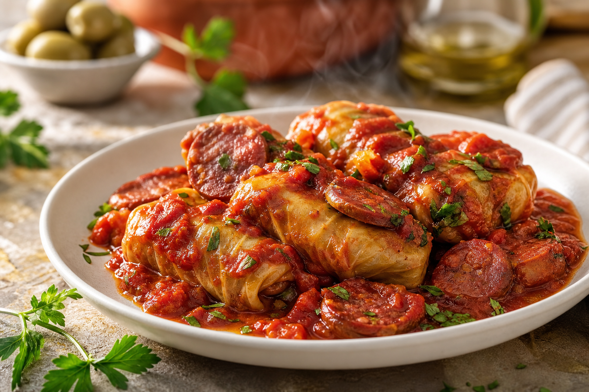
2. Italienischer Kalbshaxen-Braten2. Włoska pieczeń z golonki cielęcej
Ofengerichte / FeiertagsessenDania z piekarnika / dania świąteczne3–4 Personen3–4 osoby
ZutatenSkładniki
1 Kalbshaxen-Braten ohne Knochen, ca. 800 g1 pieczeń z golonki cielęcej bez kości, ok. 800 g
2 Zwiebeln2 cebule
2 Möhren2 marchewki
2 Knoblauchzehen2 ząbki czosnku
2 EL Tomatenmark2 EL koncentrat pomidorowy
150 ml Weißwein oder Rotwein150 ml białego lub czerwonego wina
400 ml Kalbsfond oder Rinderfond400 ml bulionu cielęcego lub wołowego
Vorbereitung: 20–25 Minutenprzygotowanie: 20–25 min
Schmorzeit: ca. 1 Stunde 45 Minutenczas duszenia: ok. 1 godzina 45 min
Gesamt: ca. 2 Stunden 15 Minutenłącznie: ok. 2 godzin 15 min
Bei Essen um 18:30 Uhr: Start ca. 16:15 UhrJeśli jesz o 18:30, zacznij około 16:15
TippsWskazówki
Nicht zu heiß schmoren, sonst wird Kalbfleisch trocken.Nie duś w zbyt wysokiej temperaturze, bo cielęcina stanie się sucha.
Sauce am Ende 5–10 Minuten offen einkochen.Na końcu gotuj sos 5–10 minut bez przykrycia.
Sehr gut mit Kartoffelpüree, Bandnudeln oder Baguette.Bardzo dobre z puree ziemniaczanym, szerokim makaronem lub bagietką.
ZubereitungPrzygotowanie
Kalbshaxen-Braten trocken tupfen und mit Salz, Pfeffer und Kräutern würzen.Pieczeń cielęcą osuszyć i doprawić solą, pieprzem oraz ziołami.
Zwiebeln, Möhren und Knoblauch grob würfeln.Cebulę, marchew i czosnek pokroić w grubą kostkę.
Öl in einem Bräter erhitzen und den Braten rundherum kräftig anbraten.Rozgrzać olej w brytfannie i mocno obsmażyć mięso z każdej strony.
Braten kurz herausnehmen, Gemüse im Bräter anrösten.Na chwilę wyjąć mięso i podsmażyć warzywa w brytfannie.
Tomatenmark zugeben und kurz mitrösten.Dodać koncentrat pomidorowy i chwilę podsmażyć.
Mit Wein ablöschen und leicht einkochen lassen.Podlać winem i lekko zredukować.
Fond angießen, Rosmarin und Lorbeer zugeben.Dolać bulion, dodać rozmaryn i liść laurowy.
Braten zurück in den Bräter legen.Włożyć pieczeń z powrotem do brytfanny.
Zugedeckt im Ofen bei ca. 160 °C Ober-/Unterhitze etwa 1 Stunde 45 Minuten schmoren.Dusić pod przykryciem w piekarniku w temperaturze około 160 °C góra/dół przez około 1 godzinę i 45 minut.
Zwischendurch mit etwas Bratensaft übergießen.Od czasu do czasu polać sosem z pieczenia.
Braten herausnehmen, Sauce nach Wunsch pürieren oder rustikal lassen.Wyjąć pieczeń, a sos zmiksować lub pozostawić rustykalny.
Sauce abschmecken und den Braten in Scheiben servieren.Doprawić sos i podawać pieczeń w plastrach.
BewertungOcena
Fest gespeichert als gutes Rezept.Na stałe zapisany jako dobry przepis.
3. Svens Muscheln in Weißwein-Tomaten-Butter-Sauce mit Airfryer-Knoblauchbrot3. Małże Svena w sosie maślano-pomidorowym z białym winem z czosnkowym pieczywem z Airfryera
Fisch & Meeresfrüchte / PfannengerichteRyby i owoce morza / dania z patelni2–3 Personen2–3 osoby
ZutatenSkładniki
1,5 kg Muscheln1,5 kg małży
2 Frühlingszwiebeln2 dymka
2 Knoblauchzehen2 ząbki czosnku
2 EL Butter2 EL masło
1 EL Olivenöl1 EL oliwa z oliwek
150 ml Weißwein150 ml białego wina
200 g stückige Tomaten200 g krojonych pomidorów
100 ml Sahne oder etwas zusätzlicher Muschelsud, optional100 ml śmietany lub opcjonalnie trochę dodatkowego wywaru z małży
Salzsól
Pfefferpieprz
1 kleine Prise Zucker1 mała szczypta cukru
1/2 Baguette oder 1 kleines Ciabatta1/2 bagietki lub 1 mała ciabatta
2 EL Butter für das Knoblauchbrot2 łyżki masła do pieczywa czosnkowego
1 Knoblauchzehe fürs Brot1 ząbek czosnku do pieczywa
optional: Petersilieopcjonalnie: pietruszka
Zeitplan / TimingCzas / plan
Vorbereitung: 15 Minutenprzygotowanie: 15 min
Garzeit: 10 Minutenczas gotowania: 10 min
Brot parallel: 5 MinutenPieczywo równolegle: 5 min
Gesamt: ca. 25 Minutenłącznie: ok. 25 min
TippsWskazówki
Muscheln erst ganz zum Schluss garen.Małże gotuj dopiero na samym końcu.
Sauce vorher nicht zu stark reduzieren.Nie redukuj sosu zbyt mocno przed dodaniem małży.
Brot erst kurz vor dem Servieren in den Airfryer geben.Pieczywo włóż do Airfryera dopiero tuż przed podaniem.
ZubereitungPrzygotowanie
Muscheln gründlich waschen, geöffnete oder beschädigte Muscheln aussortieren.Dokładnie umyć małże, odrzucić otwarte lub uszkodzone sztuki.
Frühlingszwiebeln und Knoblauch fein schneiden.Dymkę i czosnek drobno posiekać.
Butter und Olivenöl in einem großen Topf erhitzen.Rozgrzać masło i oliwę z oliwek w dużym garnku.
Frühlingszwiebeln und Knoblauch kurz anschwitzen.Krótko zeszklić dymkę i czosnek.
Mit Weißwein ablöschen.Podlać białym winem.
Tomaten zugeben und alles kurz aufkochen.Dodać pomidory i całość krótko zagotować.
Mit Pfeffer und einer kleinen Prise Zucker abschmecken.Doprawić pieprzem i małą szczyptą cukru.
Muscheln in den Topf geben, Deckel aufsetzen und 5–8 Minuten garen.Włożyć małże do garnka, przykryć i gotować 5–8 minut.
Topf zwischendurch einmal rütteln.W trakcie raz potrząsnąć garnkiem.
Nur geöffnete Muscheln servieren, geschlossene aussortieren.Podawać tylko otwarte małże, zamknięte odrzucić.
Für das Knoblauchbrot Baguette aufschneiden, mit Butter bestreichen und mit Knoblauch einreiben.Aby przygotować pieczywo czosnkowe, przekroić bagietkę, posmarować masłem i natrzeć czosnkiem.
Im Airfryer bei ca. 180 °C 4–6 Minuten knusprig backen.Piec w airfryerze około 4–6 minut w 180 °C, aż będzie chrupiące.
BewertungOcena
Fest gespeichertes, gut befundenes Rezept.Na stałe zapisany, sprawdzony i dobry przepis.
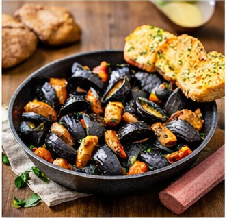
4. Hähnchen-Gyros mit Ofenkartoffeln, Gurkensalat und Tsatsiki4. Kurczak gyros z pieczonymi ziemniakami, sałatką z ogórka i tzatziki
Pfannengerichte / OfengerichteDania z patelni / dania z piekarnika3–4 Personen3–4 osoby
ZutatenSkładniki
700 g Hähnchengeschnetzeltes oder Hähnchenfilet in Streifen700 g kawałków kurczaka lub filetu z kurczaka pokrojonego w paski
2 EL Gyrosgewürz2 EL przyprawy gyros
2 EL Öl2 EL olej
1 große Zwiebel1 duża cebula
1,2 kg Kartoffeln1,2 kg ziemniaki
1 Gurke1 ogórek
250 g griechischer Joghurt250 g jogurtu greckiego
1/2–1 Knoblauchzehe1/2–1 ząbek czosnku
1 EL Zitronensaft1 EL sok z cytryny
Salzsól
Pfefferpieprz
etwas Öl für die Kartoffelntrochę oleju do ziemniaków
optional: Paprikapulver für die Kartoffelnopcjonalnie: papryka w proszku do ziemniaków
Zeitplan / TimingCzas / plan
Vorbereitung: 20 Minutenprzygotowanie: 20 min
Ofenkartoffeln: 35–40 MinutenPieczone ziemniaki: 35–40 min
Gyros: 10–12 MinutenGyros: 10–12 min
Gesamt: ca. 50–60 Minutenłącznie: ok. 50–60 min
TippsWskazówki
Hähnchen lieber portionsweise anbraten.Kurczaka najlepiej smażyć partiami.
Tsatsiki früh anrühren, dann zieht es besser durch.Tzatziki najlepiej przygotować wcześniej, wtedy smak lepiej się połączy.
Als Sonntagsklassiker ideal für Essen zwischen 18:00 und 19:00 Uhr.Jako niedzielny klasyk idealnie pasuje na posiłek między 18:00 a 19:00.
ZubereitungPrzygotowanie
Hähnchen mit Öl, Gyrosgewürz und Zwiebelstreifen marinieren.Zamarynować kurczaka w oleju, przyprawie gyros i paskach cebuli.
Kartoffeln in Spalten schneiden, würzen und mit etwas Öl mischen.Pokroić ziemniaki w łódeczki, doprawić i wymieszać z odrobiną oleju.
Kartoffeln auf ein Blech geben und bei 200 °C ca. 35–40 Minuten backen.Wyłożyć ziemniaki na blachę i piec około 35–40 minut w 200 °C.
Gurke für den Salat in Scheiben schneiden oder hobeln.Pokroić ogórek do sałatki w plasterki lub zetrzeć na mandolinie.
Für Tsatsiki Gurke fein raspeln, ausdrücken und mit Joghurt, Knoblauch, Salz, Pfeffer und Zitronensaft verrühren.Do tzatziki drobno zetrzeć ogórek, odcisnąć i wymieszać z jogurtem, czosnkiem, solą, pieprzem oraz sokiem z cytryny.
Hähnchen in einer großen Pfanne scharf anbraten.Mocno obsmażyć kurczaka na dużej patelni.
Gurkensalat frisch anmachen.Przygotować świeżą sałatkę z ogórka.
Alles zusammen servieren.Podawać wszystko razem.
BewertungOcena
Fest gespeichert, sehr gut angekommen.Na stałe zapisany, bardzo dobrze przyjęty.
Fladenbrot kurz aufbacken, dann passt es besser dazu.Chleb flatbread warto krótko podpiec, wtedy lepiej pasuje do dania.
Auch gut für Gäste geeignet.Również dobrze sprawdza się dla gości.
ZubereitungPrzygotowanie
Hackfleisch mit geriebener Zwiebel, Ei, Paniermehl und Gewürzen vermengen.Wymieszać mięso mielone ze startą cebulą, jajkiem, bułką tartą i przyprawami.
Kleine längliche Köfte formen.Kleine längliche Köfte formen.
In etwas Öl rundherum anbraten oder grillen.Obsmażyć ze wszystkich stron na odrobinie oleju albo zgrillować.
Tomaten und rote Zwiebel für den Salat schneiden.Pokroić pomidory i czerwoną cebulę do sałatki.
Mit etwas Salz, Pfeffer und Petersilie anmachen.Doprawić odrobiną soli, pieprzu i pietruszki.
Für Tzatziki Gurke raspeln und mit Joghurt und Knoblauch verrühren.Na tzatziki zetrzeć ogórek i wymieszać go z jogurtem oraz czosnkiem.
Fladenbrot erwärmen und alles zusammen servieren.Podgrzać chleb flatbread i podawać wszystko razem.
BewertungOcena
Gut angekommen.Danie bardzo smakowało.
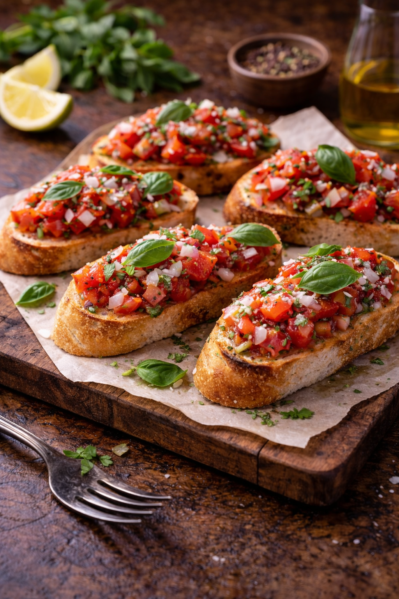
8. Bauernomelette mit Tomaten-Mozzarella-Salat8. Omelet wiejski z sałatką pomidorowo-mozzarellową
Pfannengerichte / EiergerichteDania z patelni / dania jajeczne2–3 Personen2–3 osoby
ZutatenSkładniki
6 Eier6 jajek
500 g Kartoffeln, gekocht500 g ugotowanych ziemniaków
1 Zwiebel1 cebula
1 EL Öl oder Butter1 EL olej lub masło
Salzsól
Pfefferpieprz
3 Tomaten3 pomidory
2 Kugeln Mozzarella2 kule mozzarelli
1 kleine Zwiebel oder rote Zwiebel1 mała cebula lub czerwona cebula
2 Frühlingszwiebeln2 dymka
etwas Petersilietrochę pietruszki
2 EL Olivenöl2 EL oliwa z oliwek
1 EL heller Balsamico oder Zitronensaft1 EL jasny ocet balsamiczny lub sok z cytryny
Zeitplan / TimingCzas / plan
Vorbereitung: 15 Minutenprzygotowanie: 15 min
Garzeit: 15 Minutenczas gotowania: 15 min
Gesamt: ca. 30 Minutenłącznie: ok. 30 min
TippsWskazówki
Vorgekochte Kartoffeln verwenden, dann wird es besser.Najlepiej użyć wcześniej ugotowanych ziemniaków.
Salat erst kurz vor dem Essen mischen.Sałatkę wymieszać dopiero krótko przed jedzeniem.
Sehr gutes schnelles Abendessen.Bardzo dobry i szybki obiad lub kolacja.
ZubereitungPrzygotowanie
Kartoffeln in Scheiben schneiden.Pokroić ziemniaki w plasterki.
Zwiebel würfeln und in der Pfanne anbraten.Cebulę pokroić w kostkę i obsmażyć na patelni.
Kartoffeln zugeben und anrösten.Dodać ziemniaki i je zrumienić.
Eier verquirlen, würzen und darübergeben.Roztrzepać jajka, doprawić i wylać je na patelnię.
Stocken lassen und vorsichtig fertig garen.Pozostawić do ścięcia i ostrożnie dosmażyć.
Tomaten und Mozzarella schneiden.Pokroić pomidory i mozzarellę.
Mit Zwiebeln, Frühlingszwiebeln und Petersilie mischen.Wymieszać z cebulą, dymką i pietruszką.
Mit Öl und etwas Säure anmachen.Skropić oliwą i dodać odrobinę kwasu, na przykład soku z cytryny lub jasnego octu.
Kein Feta verwenden.Nie używać fety.
BewertungOcena
Gut angekommen.Danie bardzo smakowało.
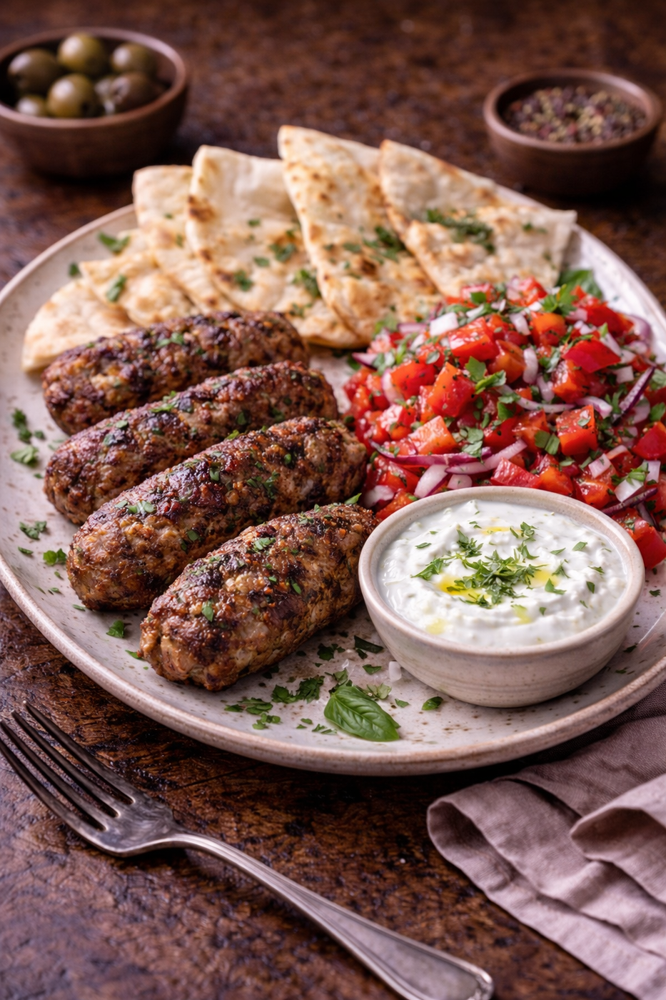
9. Chicken Masala mit Naturjoghurt & Protein-Wraps9. Chicken Masala z jogurtem naturalnym i proteinowymi wrapami
Pfannengerichte / HähnchengerichteDania z patelni / dania z kurczaka2–3 Personen2–3 osoby
ZutatenSkładniki
500 g Hähnchenbrust500 g pierś z kurczaka
1 Zwiebel1 cebula
1 TL Garam Masala oder Masala-Gewürz1 TL garam masala lub przyprawy masala
1 TL Paprikapulver1 TL papryki w proszku
150 g Naturjoghurt150 g jogurt naturalny
1 EL Tomatenmark1 EL koncentrat pomidorowy
100 ml Wasser oder Brühe100 ml woda lub bulion
1 EL Öl1 EL olej
Salzsól
Pfefferpieprz
4 Protein-Wraps4 proteinowe wrapy
Zeitplan / TimingCzas / plan
Vorbereitung: 10 Minutenprzygotowanie: 10 min
Garzeit: 15 Minutenczas gotowania: 15 min
Gesamt: ca. 25 Minutenłącznie: ok. 25 min
TippsWskazówki
Joghurt erst bei reduzierter Hitze einrühren.Jogurt wmieszaj dopiero przy zmniejszonym ogniu.
Wraps kurz erwärmen.Krótko podgrzać wrapy.
Sehr alltagstauglich.Bardzo praktyczne na co dzień.
ZubereitungPrzygotowanie
Hähnchen in Stücke schneiden.Pokroić kurczaka na kawałki.
Zwiebel anbraten.Obsmażyć cebulę.
Hähnchen zugeben und kurz anrösten.Dodać kurczaka i krótko go obsmażyć.
Gewürze und Tomatenmark einrühren.Wmieszać przyprawy i koncentrat pomidorowy.
Mit etwas Wasser oder Brühe ablöschen.Podlać odrobiną wody lub bulionu.
Mit warmen Protein-Wraps servieren.Podawać z ciepłymi proteinowymi wrapami.
BewertungOcena
Gut angekommen.Danie bardzo smakowało.
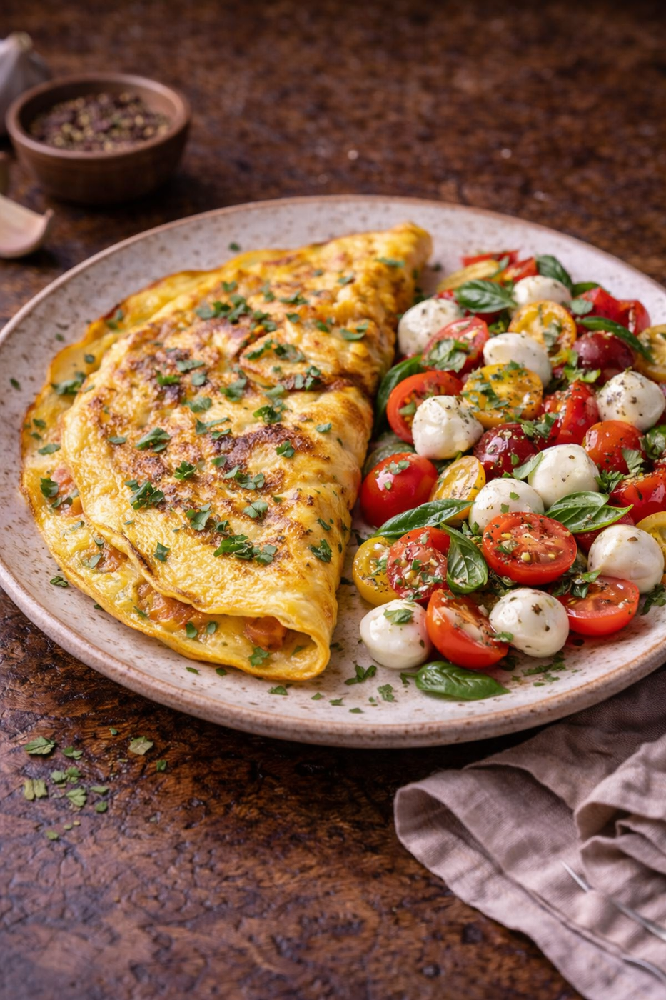
10. Svens Ofengericht mit Salsiccia, Gemüse & Kartoffeln (cremige Sonntagsversion)10. Danie piekarnikowe Svena z salsiccią, warzywami i ziemniakami (kremowa wersja niedzielna)
Ofengerichte / FleischgerichteDania z piekarnika / dania mięsne3–4 Personen3–4 osoby
ZutatenSkładniki
500–600 g Salsiccia500–600 g salsiccia
800 g Kartoffeln800 g ziemniaków
2 Paprika2 papryki
1 Zucchini1 cukinia
1 große Zwiebel1 duża cebula
150 g Crème fraîche150 g crème fraîche
2 EL Öl2 EL olej
Salzsól
Pfefferpieprz
Paprikapulverpapryka w proszku
optional: Knoblauchopcjonalnie: czosnek
Zeitplan / TimingCzas / plan
Vorbereitung: 20 Minutenprzygotowanie: 20 min
Ofenzeit: 35–40 Minutenczas pieczenia: 35–40 min
Gesamt: ca. 60 Minutenłącznie: ok. 60 min
TippsWskazówki
Vorgekochte Kartoffeln machen das Gericht deutlich besser.Wcześniej ugotowane ziemniaki wyraźnie poprawiają efekt dania.
Crème fraîche erst gegen Ende zugeben.Crème fraîche dodać dopiero pod koniec.
Sehr beliebt und schwiegermuttertauglich.Bardzo lubiane i odpowiednie także dla tradycyjnych gustów.
ZubereitungPrzygotowanie
Kartoffeln vorkochen und in Stücke schneiden.Ugotować wcześniej ziemniaki i pokroić je na kawałki.
Gemüse schneiden.Pokroić warzywa.
Salsiccia in Stücke teilen.Podzielić salsiccię na kawałki.
Alles in eine Ofenform geben und würzen.Włóż wszystko do naczynia żaroodpornego i dopraw.
Mit etwas Öl vermengen.Wymieszać z odrobiną oleju.
Bei 190–200 °C ca. 35–40 Minuten backen.Bei 190–200 °C ok. 35–40 min piec.
Zum Schluss Crème fraîche unterziehen oder klecksweise daraufgeben.Na końcu wmieszać crème fraîche albo nałożyć ją małymi porcjami na wierzch.
Kurz weitergaren und servieren.Krótko jeszcze podpiec i podawać.
BewertungOcena
Fester Favorit.Stały faworyt.
11. Svens Hackbällchen-Auflauf mit Ajvar & Kartoffeln – die Ofenbombe11. Zapiekanka Svena z pulpecikami, ajvarem i ziemniakami – piekarnikowa bomba
Ofengerichte / FleischgerichteDania z piekarnika / dania mięsne3–4 Personen3–4 osoby
ZutatenSkładniki
600 g Hackfleisch600 g mięsa mielonego
800 g Kartoffeln800 g ziemniaki
1 Ei1 jajko
3 EL Paniermehl3 EL bułka tarta
1 kleine Zwiebel1 mała cebula
3 EL Ajvar3 EL ajvar
200 ml Sahne200 ml śmietana
100 g geriebener Käse100 g startego sera
Salzsól
Pfefferpieprz
Paprikapulverpapryka w proszku
Öl oder Butter für die Formolej lub masło do formy
Zeitplan / TimingCzas / plan
Vorbereitung: 25 Minutenprzygotowanie: 25 min
Ofenzeit: 30–35 Minutenczas pieczenia: 30–35 min
Gesamt: ca. 60 Minutenłącznie: ok. 60 min
TippsWskazówki
Kartoffeln nicht roh verwenden, sonst dauert es zu lange.Nie używaj surowych ziemniaków, bo całość będzie się zbyt długo piekła.
Die Soße ruhig kräftig würzen.Sos można doprawić dość intensywnie.
Schön cremig, deftig und sehr beliebt.Przyjemnie kremowe, sycące i bardzo lubiane.
ZubereitungPrzygotowanie
Kartoffeln vorgaren und in Scheiben schneiden.Podgotować ziemniaki i pokroić je w plasterki.
Hackfleisch mit Ei, Paniermehl, Zwiebel und Gewürzen vermengen.Wymieszać mięso mielone z jajkiem, bułką tartą, cebulą i przyprawami.
Kleine Hackbällchen formen.Uformować małe klopsiki.
Hackbällchen kurz anbraten oder direkt roh verwenden, wenn sie im Ofen durchgaren sollen.Klopsiki krótko obsmaż lub użyj ich na surowo, jeśli mają się dopiec w piekarniku.
Ajvar mit Sahne verrühren.Wymieszać ajvar ze śmietaną.
Kartoffeln und Hackbällchen in eine Auflaufform schichten.Ułożyć ziemniaki i klopsiki warstwami w naczyniu do zapiekania.
Ajvar-Sahne-Soße darübergeben.Polać całość sosem ajvarowo-śmietanowym.
Mit Käse bestreuen.Posypać serem.
Bei 190 °C ca. 30–35 Minuten goldbraun backen.Bei 190 °C ok. 30–35 min goldbraun piec.
BewertungOcena
Fester Favorit.Stały faworyt.
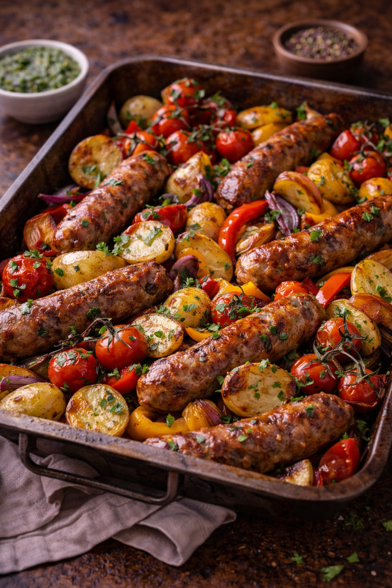
12. Svens Gemüse-Kartoffel-Pfanne mit Ajvar-Teriyaki-Soße & Cabanossi12. Patelnia Svena z warzywami, ziemniakami, sosem ajvar-teriyaki i kabanosem
Pfannengerichte / FleischgerichteDania z patelni / dania mięsne3–4 Personen3–4 osoby
ZutatenSkładniki
800 g Kartoffeln800 g ziemniaki
2 Paprika2 papryki
2 Zwiebeln2 cebule
250–300 g Cabanossi250–300 g kabanossi
2–3 EL Ajvar2–3 EL ajvar
2 EL Teriyaki-Sauce2 EL sos teriyaki
100 ml Sahne oder Kochsahne100 ml śmietany lub śmietany do gotowania
1 EL Öl1 EL olej
Salzsól
Pfefferpieprz
Paprikapulverpapryka w proszku
Zeitplan / TimingCzas / plan
Vorbereitung: 15–20 Minutenprzygotowanie: 15–20 min
Pfannenzeit: 15 Minutenczas na patelni: 15 min
Gesamt: ca. 35 Minutenłącznie: ok. 35 min
TippsWskazówki
Kartoffeln vorgekocht verwenden.Używać wcześniej ugotowanych ziemniaków.
Pide oder Naan als Beilagepide albo naan jako dodatek
Zeitplan / TimingCzas / plan
Vorbereitung: 10 Minutenprzygotowanie: 10 min
Garzeit: 15 Minutenczas gotowania: 15 min
Gesamt: ca. 25 Minutenłącznie: ok. 25 min
TippsWskazówki
Joghurt nie zu früh einrühren.Jogurt wmieszaj nie za wcześnie.
Hähnchen nur anrösten, nicht austrocknen.Kurczaka tylko lekko obsmażyć, nie przesuszyć.
Sehr gutes schnelles Abendgericht.Bardzo dobre szybkie danie na wieczór.
ZubereitungPrzygotowanie
Hähnchen in Stücke schneiden und nur kurz anrösten.Pokroić kurczaka na kawałki i tylko krótko obsmażyć.
Nicht komplett trocken braten.Nie smażyć całkiem na sucho.
Stückige Tomaten und Kokosmilch zugeben.Dodać krojone pomidory i mleko kokosowe.
Gewürze einrühren.Wmieszać przyprawy.
TK-Wokgemüse zugeben.Dodać mrożone warzywa do woka.
Alles 5–7 Minuten sanft ziehen lassen.Pozostawić na 5–7 minut na małym ogniu.
Naturjoghurt erst ganz am Ende unterziehen.Jogurt naturalny wmieszać dopiero na samym końcu.
Danach nicht mehr stark kochen.Potem nie gotować już mocno.
Mit Pide oder Naan servieren.Podawać z pide albo naanem.
BewertungOcena
Fest gespeichert, sehr beliebt.Na stałe zapisane, bardzo lubiane.
14. Ofengemüse mit Hähnchenschenkeln und lila Süßkartoffeln14. Warzywa z piekarnika z udkami kurczaka i fioletowymi batatami
Ofengerichte / HähnchengerichteDania z piekarnika / dania z kurczaka3–4 Personen3–4 osoby
ZutatenSkładniki
4 Hähnchenschenkel4 udka z kurczaka
2 lila Süßkartoffeln2 fioletowe bataty
2 Paprika2 papryki
2 Möhren2 marchewki
1 Zwiebel1 cebula
1 Zucchini1 cukinia
2 EL Öl2 EL olej
Salzsól
Pfefferpieprz
Paprikapulverpapryka w proszku
optional: Knoblauch und Rosmarinopcjonalnie: czosnek i rozmaryn
Zeitplan / TimingCzas / plan
Vorbereitung: 15 Minutenprzygotowanie: 15 min
Ofenzeit: 45–50 Minutenczas pieczenia: 45–50 min
Gesamt: ca. 60–65 Minutenłącznie: ok. 60–65 min
TippsWskazówki
Gemüse nicht zu klein schneiden.Nie kroić warzyw zbyt drobno.
Hähnchen auf das Gemüse legen, dann zieht Geschmack ins Blech.Połóż kurczaka na warzywach, wtedy smak i sok z pieczenia przejdą na blachę.
Sehr unkompliziert für abends.Bardzo proste danie na wieczór.
ZubereitungPrzygotowanie
Gemüse und Süßkartoffeln in grobe Stücke schneiden.Pokroić warzywa i bataty na większe kawałki.
Hähnchenschenkel würzen.Doprawić udka z kurczaka.
Alles auf ein Blech oder in eine große Ofenform geben.Ułóż wszystko na blasze lub w dużym naczyniu do zapiekania.
Mit Öl und Gewürzen vermengen.Wymieszać z olejem i przyprawami.
Bei 190–200 °C ca. 45–50 Minuten garen.Piec w 190–200 °C przez około 45–50 minut.
Hähnchen am Ende prüfen, bis die Haut schön gebräunt ist.Na końcu sprawdzić, czy kurczak jest dobrze upieczony, a skórka ładnie zrumieniona.
Direkt heiß servieren.Podawać od razu na gorąco.
BewertungOcena
Gut angekommen.Danie bardzo smakowało.
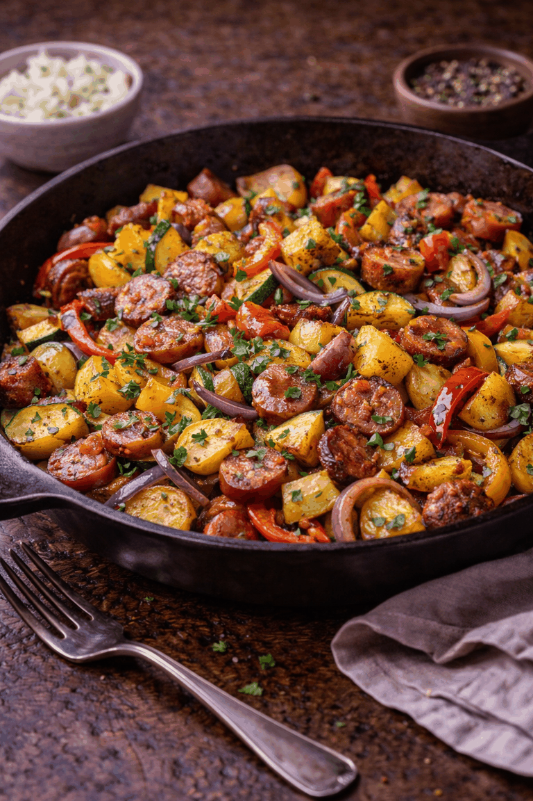
15. Ofen-Hähnchenschenkel mit Kartoffeln & Zwiebeln – Sven-Style15. Udka kurczaka z ziemniakami i cebulą z piekarnika – styl Svena
Ofengerichte / HähnchengerichteDania z piekarnika / dania z kurczaka2–3 Personen2–3 osoby
ZutatenSkładniki
2 Hähnchenschenkel2 udka z kurczaka
800 g Kartoffeln (mit Schale, in Spalten)800 g ziemniaków (ze skórką, pokrojonych w łódeczki)
2 große Zwiebeln2 duże cebule
3 EL Öl3 EL oleju
Salzsól
Pfefferpieprz
Paprikapulver edelsüßsłodka papryka w proszku
Majoran oder Thymianmajeranek lub tymianek
Zeitplan / TimingCzas / plan
Vorbereitung: ca. 10 Minutenprzygotowanie: ok. 10 min
Ofenzeit: ca. 45 Minutenpieczenie: ok. 45 min
Gesamt: ca. 55 Minutenłącznie: ok. 55 min
TippsWskazówki
Für mehr Farbe die letzten 5 Minuten kurz mit mehr Oberhitze arbeiten.Jeśli chcesz mocniej przypieczoną skórkę, włącz na końcu na chwilę mocniejszą górę.
Etwas Zitronensaft oder frische Petersilie am Ende bringt Frische ins Gericht.Odrobina soku z cytryny lub świeża pietruszka na końcu dodaje świeżości.
Ein sehr einfaches, bodenständiges Ofengericht für den Abend.To bardzo proste, domowe danie z piekarnika na wieczór.
ZubereitungPrzygotowanie
Ofen auf 200 °C Umluft vorheizen.Rozgrzać piekarnik do 200 °C z termoobiegiem.
Hähnchenschenkel trocken tupfen und mit Salz, Pfeffer, Paprikapulver und Majoran oder Thymian würzen.Udka osuszyć i doprawić solą, pieprzem, papryką oraz majerankiem lub tymiankiem.
Kartoffeln in Spalten und Zwiebeln in grobe Stücke schneiden.Ziemniaki pokroić w łódeczki, a cebulę w większe kawałki.
Kartoffeln und Zwiebeln in eine große Auflaufform geben, mit Öl und etwas Salz vermengen.Przełożyć ziemniaki i cebulę do dużego naczynia żaroodpornego, dodać olej i lekko doprawić.
Hähnchenschenkel obenauf legen, damit der Bratensaft später ins Gemüse zieht.Na wierzchu ułożyć udka, aby sok z pieczenia spływał na warzywa.
Im Ofen insgesamt ca. 45 Minuten garen.Piec około 45 minut.
Nach etwa 30 Minuten die Kartoffeln einmal wenden und etwas Bratensaft über das Fleisch geben.Po około 30 minutach przewrócić ziemniaki i polać mięso odrobiną sosu z pieczenia.
Am Ende prüfen, ob Kartoffeln weich und die Haut schön gebräunt ist, dann direkt heiß servieren.Na końcu sprawdzić, czy ziemniaki są miękkie, a skórka ładnie zrumieniona, i podawać od razu.
BewertungOcena
Sehr gut, einfach und schwiegermuttertauglich.Bardzo dobre, proste i odpowiednie także dla tradycyjnych gustów.
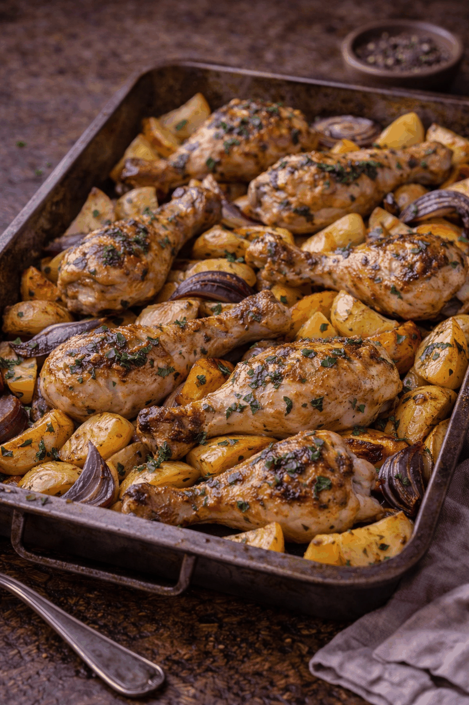
16. Kartoffelauflauf mit Schmand, Käse & Speck16. Zapiekanka ziemniaczana ze śmietaną, serem i boczkiem
Ofengerichte / BeilagenDania z piekarnika / dodatki3 Personen3 osoby
ZutatenSkładniki
1,1–1,2 kg Kartoffeln1,1–1,2 kg ziemniaków
2 Zwiebeln2 cebule
150 g Speckwürfel150 g boczku w kostce
200 g Schmand200 g śmietany kwaśnej
100 ml Sahne oder Milch100 ml śmietany lub mleka
150–200 g geriebener Käse (Gouda oder Emmentaler)150–200 g startego sera (Gouda lub Emmentaler)
Salzsól
Pfefferpieprz
Muskatgałka muszkatołowa
Butter für die Formmasło do formy
Zeitplan / TimingCzas / plan
Vorbereitung: ca. 15 Minutenprzygotowanie: ok. 15 min
Ofenzeit: ca. 40 Minutenpieczenie: ok. 40 min
Gesamt: ca. 55 Minutenłącznie: ok. 55 min
TippsWskazówki
Wenn die Oberfläche zu dunkel wird, den Auflauf locker mit Alufolie abdecken.Jeśli wierzch za szybko się rumieni, przykryj luźno folią aluminiową.
Etwas Knoblauch in der Schmandmischung passt sehr gut dazu.Odrobina czosnku w masie śmietanowej bardzo dobrze tu pasuje.
Vor dem Servieren 5 Minuten ruhen lassen, dann lässt er sich besser portionieren.Po upieczeniu odstaw na 5 minut, wtedy łatwiej porcjować.
ZubereitungPrzygotowanie
Ofen auf 180 °C Umluft vorheizen und die Form mit Butter ausstreichen.Rozgrzać piekarnik do 180 °C z termoobiegiem i wysmarować formę masłem.
Kartoffeln schälen und in dünne Scheiben schneiden.Obrać ziemniaki i pokroić je w cienkie plasterki.
Zwiebeln in feine Ringe schneiden.Cebulę pokroić w cienkie krążki.
Schmand mit Sahne oder Milch, Salz, Pfeffer und etwas Muskat verrühren.Wymieszać śmietanę kwaśną ze śmietaną lub mlekiem, solą, pieprzem i gałką muszkatołową.
Die Hälfte der Kartoffeln in die Form schichten, darauf Zwiebeln und Speck verteilen.Ułożyć w formie połowę ziemniaków, następnie cebulę i boczek.
Restliche Kartoffeln darübergeben und die Schmandmischung gleichmäßig darüber gießen.Na wierzch wyłożyć resztę ziemniaków i równomiernie polać masą śmietanową.
Mit geriebenem Käse bestreuen.Posypać startym serem.
Im Ofen ca. 35–40 Minuten goldbraun backen, bis die Kartoffeln weich und die Oberfläche schön gebräunt ist.Piec około 35–40 minut, aż ziemniaki będą miękkie, a wierzch złocisty.
BewertungOcena
Sehr cremig und sehr gut.Bardzo kremowe i bardzo dobre.
17. Rinderrouladen – helle Soße ohne Dunkelmacher (Hausrezept)17. Rolady wołowe – jasny sos bez barwnika (przepis domowy)
Ofengerichte / FeiertagsessenDania z piekarnika / dania świąteczne3–4 Personen3–4 osoby
ZutatenSkładniki
6 Rinderrouladen6 rolad wołowych
Salzsól
Pfefferpieprz
Senfmusztarda
Speckstreifen oder Speckwürfelpaski boczku lub boczek w kostce
Gewürzgurken in Streifenogórki konserwowe pokrojone w paski
Zwiebeln in Streifencebula pokrojona w paski
1 Möhre1 marchew
1 Stück Sellerie1 kawałek selera
1 EL Tomatenmark1 EL koncentratu pomidorowego
500–700 ml Rinderfond500–700 ml bulionu wołowego
150 ml Rotwein150 ml czerwonego wina
1 EL Butter1 EL masła
Mehl oder Stärke zum Bindenmąka lub skrobia do zagęszczenia
Zeitplan / TimingCzas / plan
Vorbereitung: ca. 25 Minutenprzygotowanie: ok. 25 min
Schmorzeit: 1,5 bis 2 Stundenduszenie: 1,5 do 2 godzin
Gesamt: ca. 2 bis 2,5 Stundenłącznie: ok. 2 do 2,5 godziny
TippsWskazówki
Ohne Sahne bleibt die Soße ehrlich, kräftig und hausgemacht.Bez śmietany sos pozostaje bardziej wyrazisty i domowy.
Farbe und Tiefe kommen von Röstaromen und Tomatenmark, nicht von Dunkelmachern.Kolor i głębia smaku pochodzą z koncentratu oraz dobrego podsmażenia warzyw.
Am besten mit Kartoffeln, Rotkohl oder einem klassischen Gemüse servieren.Najlepiej podawać z ziemniakami, modrą kapustą albo klasycznym warzywnym dodatkiem.
ZubereitungPrzygotowanie
Rouladen flach auslegen, salzen, pfeffern und jeweils mit Senf bestreichen.Rozłożyć plastry mięsa, doprawić solą i pieprzem oraz posmarować musztardą.
Mit Speck, Gurkenstreifen und Zwiebeln belegen, dann fest einrollen und mit Nadeln oder Küchengarn fixieren.Nałożyć boczek, ogórki i cebulę, następnie zwinąć ciasno i spiąć.
Rouladen in einem Bräter rundherum kräftig anbraten und herausnehmen.Obsmażyć rolady z każdej strony w brytfannie i wyjąć.
Möhre, Sellerie und übrige Zwiebeln im Bräter anrösten.Do brytfanny dodać marchew, seler i pozostałą cebulę, a następnie podsmażyć.
Tomatenmark zugeben und kurz mitrösten.Dodać koncentrat pomidorowy i chwilę podsmażyć.
Mit Rotwein ablöschen und leicht einkochen lassen.Podlać czerwonym winem i lekko zredukować.
Rinderfond angießen und die Rouladen zurück in den Bräter legen.Wlać bulion wołowy i przełożyć rolady z powrotem do naczynia.
Zugedeckt 1,5 bis 2 Stunden schmoren, bis das Fleisch weich ist.Dusić pod przykryciem 1,5 do 2 godzin, aż mięso będzie miękkie.
Rouladen herausnehmen, die Soße nach Wunsch passieren oder rustikal lassen.Wyjąć rolady, a sos przetrzeć lub zostawić bardziej rustykalny.
Mit etwas Mehl oder Stärke binden, Butter einrühren und abschmecken, dann die Rouladen wieder in die Soße geben.Zagęścić mąką lub skrobią, wmieszać masło, doprawić i ponownie włożyć rolady do sosu.
BewertungOcena
Festessen, sehr gut.Świąteczne danie, bardzo dobre.
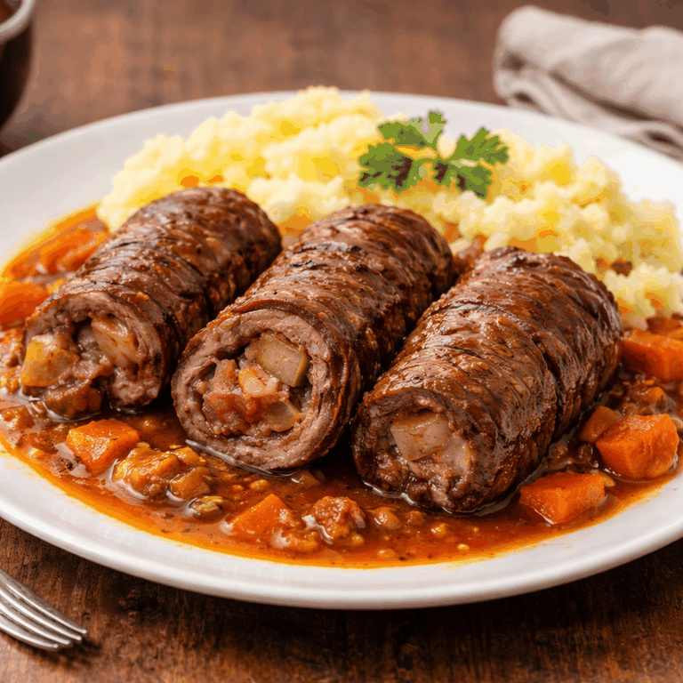
18. Kartoffelsuppe mit Mettenden18. Zupa ziemniaczana z kiełbasą Mettenden
Suppen / HausmannskostZupy / kuchnia domowa4–6 Personen4–6 osób
ZutatenSkładniki
800 g Kartoffeln800 g ziemniaków
2 Möhren2 marchewki
1 Zwiebel1 cebula
1 Lauch oder etwas Sellerie1 por lub trochę selera
1 l Gemüsebrühe1 l bulionu warzywnego
2–3 Mettenden oder Wiener Würstchen2–3 kiełbasy Mettenden lub parówki
Salzsól
Pfefferpieprz
Majoranmajeranek
Zeitplan / TimingCzas / plan
Vorbereitung: ca. 15 Minutenprzygotowanie: ok. 15 min
Kochzeit: ca. 25 Minutengotowanie: ok. 25 min
Gesamt: ca. 40 Minutenłącznie: ok. 40 min
TippsWskazówki
Am nächsten Tag schmeckt die Suppe meist noch besser.Na drugi dzień zupa smakuje jeszcze lepiej.
Wer es rustikaler mag, püriert nur einen kleinen Teil der Suppe.Jeśli wolisz bardziej rustykalną wersję, zmiksuj tylko niewielką część zupy.
Mit frischem Brot serviert ist sie ein kompletter Klassiker.Podawana ze świeżym pieczywem jest pełnym, klasycznym daniem.
ZubereitungPrzygotowanie
Kartoffeln, Möhren, Zwiebel und Lauch oder Sellerie putzen und in Stücke schneiden.Ziemniaki, marchew, cebulę oraz por lub seler oczyścić i pokroić na kawałki.
Alles zusammen mit der Gemüsebrühe in einen Topf geben und etwa 25 Minuten kochen, bis das Gemüse weich ist.Przełożyć wszystko do garnka, zalać bulionem warzywnym i gotować około 25 minut, aż warzywa zmiękną.
Einen Teil der Suppe pürieren, damit sie schön sämig wird, den Rest stückig lassen.Część zupy zmiksować, aby była bardziej kremowa, a część zostawić w kawałkach.
Mettenden oder Würstchen in Scheiben schneiden und in die Suppe geben.Pokroić kiełbasę lub parówki i dodać do zupy.
Noch ein paar Minuten ziehen lassen und mit Salz, Pfeffer und Majoran abschmecken.Gotować jeszcze chwilę i doprawić solą, pieprzem oraz majerankiem.
BewertungOcena
Klassiker, gut.Klasyk, smaczny i sprawdzony.
19. Zakwas für Żurek selber machen19. Zakwas na żurek
Grundlagen / Polnische KüchePodstawy / kuchnia polskaAnsatz für mehrere Portionen ŻurekPorcja bazowa na kilka garnków żurku
ZutatenSkładniki
500 ml abgekochtes, vollständig abgekühltes Wasser500 ml przegotowanej, całkowicie ostudzonej wody
6 EL Roggenmehl Type 20006 EL mąki żytniej typ 2000
4–5 Knoblauchzehen4–5 ząbków czosnku
4 Lorbeerblätter4 liście laurowe
einige Pimentkörnerkilka ziaren ziela angielskiego
Zeitplan / TimingCzas / plan
Ansetzen: ca. 10 Minutenprzygotowanie: ok. 10 min
Reifezeit: 4–5 Tagefermentacja: 4–5 dni
Danach gekühlt lagernpotem przechowywać w lodówce
TippsWskazówki
Nur mit sauberem Besteck arbeiten, damit der Ansatz nicht kippt.Zawsze używaj czystych naczyń i sztućców, aby zakwas się nie zepsuł.
Das Gefäß nicht luftdicht verschließen.Nie zamykaj naczynia całkowicie szczelnie.
Die Basis für den eigentlichen Żurek findest du in Rezept 34.Bazę do gotowego żurku znajdziesz w przepisie 34.
ZubereitungPrzygotowanie
Ein sauberes großes Glas oder Gefäß vorbereiten.Przygotować czysty, duży słoik lub inne naczynie.
Roggenmehl mit dem abgekühlten Wasser gründlich verrühren, bis keine Klümpchen mehr vorhanden sind.Mąkę żytnią dokładnie wymieszać z ostudzoną wodą, aż nie będzie grudek.
Knoblauchzehen leicht andrücken und zusammen mit Lorbeer und Piment dazugeben.Lekko zgnieść ząbki czosnku i dodać je razem z liśćmi laurowymi oraz zielem angielskim.
Das Gefäß mit einem Tuch oder locker aufgelegten Deckel abdecken, damit Luft zirkulieren kann.Przykryć słoik ściereczką albo luźno położoną pokrywką, aby miał dostęp powietrza.
Bei Zimmertemperatur 4 bis 5 Tage stehen lassen.Odstawić na 4–5 dni w temperaturze pokojowej.
Einmal täglich mit einem sauberen Löffel umrühren.Raz dziennie zamieszać czystą łyżką.
Der Zakwas ist fertig, wenn er angenehm säuerlich riecht und deutlich vergoren wirkt.Zakwas jest gotowy, gdy ma wyraźnie kwaśny zapach i widać oznaki fermentacji.
Vor der Verwendung nach Wunsch durch ein Sieb geben oder direkt verwenden.Przed użyciem można go przecedzić albo użyć bezpośrednio.
Im Kühlschrank noch einige Tage aufbewahren.Gotowy zakwas przechowywać jeszcze kilka dni w lodówce.
BewertungOcena
Wichtige Grundzutat für traditionellen Żurek.Ważna baza do tradycyjnego żurku.
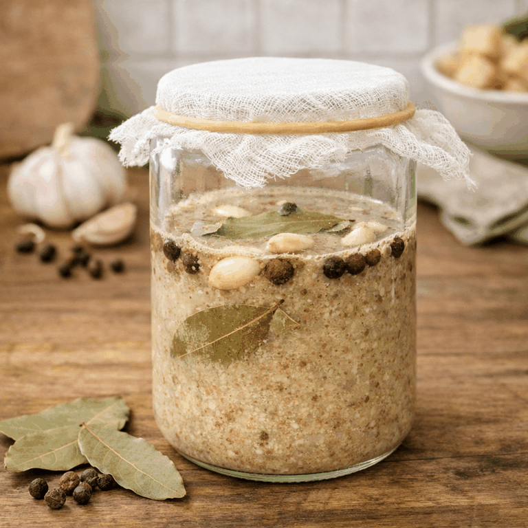
20. Königsberger Klopse20. Klopsy po królewiecku
Pfannengerichte / HausmannskostDania z patelni / kuchnia domowa4 Personen4 osoby
ZutatenSkładniki
500 g Hackfleisch (gemischt)500 g mięsa mielonego (mieszane)
1 Zwiebel1 cebula
1 Ei1 jajko
1 altbackenes Brötchen1 czerstwa bułka
1 EL Senf1 EL musztardy
1 Liter Brühe1 litr bulionu
2 EL Kapern2 EL kaparów
200 ml Sahne200 ml śmietany
1 EL Mehl oder Speisestärke1 EL mąki lub skrobi
Salzsól
Pfefferpieprz
Zeitplan / TimingCzas / plan
Vorbereitung: ca. 20 Minutenprzygotowanie: ok. 20 min
Garzeit: ca. 20 Minutengotowanie: ok. 20 min
Gesamt: ca. 40 Minutenłącznie: ok. 40 min
TippsWskazówki
Die Brühe darf nicht kochen, sonst können die Klopse zerfallen.Bulion nie może mocno wrzeć, bo klopsy mogą się rozpaść.
Mit Salzkartoffeln serviert ist das Gericht besonders klassisch.Podawane z gotowanymi ziemniakami smakują najbardziej klasycznie.
Kapern sind wichtig für den typischen Geschmack und sollten nicht fehlen.Kapary są ważne dla charakterystycznego smaku tej potrawy.
ZubereitungPrzygotowanie
Brötchen in Wasser einweichen und gut ausdrücken.Bułkę namoczyć w wodzie i dobrze odcisnąć.
Zwiebel fein würfeln.Cebulę drobno pokroić.
Hackfleisch mit Ei, Brötchen, Zwiebel, Senf, Salz und Pfeffer gründlich vermengen.Wymieszać mięso z jajkiem, bułką, cebulą, musztardą, solą i pieprzem.
Aus der Masse gleichmäßige Klopse formen.Uformować równe klopsy.
Brühe in einem großen Topf erhitzen, aber nicht sprudelnd kochen lassen.Podgrzać bulion, ale nie doprowadzać go do mocnego wrzenia.
Klopse vorsichtig in die Brühe geben und etwa 15 Minuten gar ziehen lassen.Włożyć klopsy do bulionu i gotować około 15 minut.
Klopse herausnehmen und warm halten.Wyjąć klopsy i trzymać je w cieple.
Sahne und Kapern in die Brühe geben.Dodać do bulionu śmietanę i kapary.
Soße mit Mehl oder Stärke leicht binden und mit Salz und Pfeffer abschmecken.Lekko zagęścić sos mąką lub skrobią i doprawić do smaku.
Klopse zurück in die Soße geben und zusammen servieren.Włożyć klopsy z powrotem do sosu i podawać razem.
BewertungOcena
Klassiker, sehr beliebt.Klasyk, bardzo lubiany.
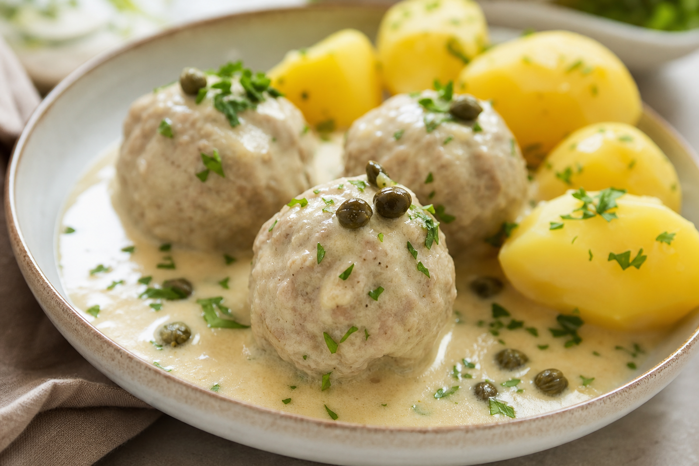
21. Danziger Porzeln21. Gdańskie porzeln
Gebäck & Süßes / Polnische KücheWypieki i słodkie / kuchnia polska4 Personen4 osoby
ZutatenSkładniki
30 g Hefe30 g drożdży
500 g Mehl500 g mąki
100 g Butter100 g masła
100 g Zucker100 g cukru
250 ml Milch250 ml mleka
100 g Rosinen100 g rodzynek
Öl oder Fett zum Ausbackenolej lub tłuszcz do smażenia
Zeitplan / TimingCzas / plan
Vorbereitung: ca. 20 Minutenprzygotowanie: ok. 20 min
Gehzeit: ca. 60 Minutenwyrastanie: ok. 60 min
Ausbacken: ca. 10 Minutensmażenie: ok. 10 min
TippsWskazówki
Das Fett darf nicht zu heiß werden, damit die Porzeln außen nicht zu dunkel und innen nicht roh bleiben.Tłuszcz nie może być zbyt gorący, żeby środek zdążył się usmażyć.
Frisch schmecken sie am besten.Najlepiej smakują świeże.
Nach Wunsch leicht mit Zucker bestreuen.Można je delikatnie posypać cukrem.
ZubereitungPrzygotowanie
Milch leicht erwärmen und die Hefe darin auflösen.Lekko podgrzać mleko i rozpuścić w nim drożdże.
Mehl, Zucker und weiche Butter in eine Schüssel geben.Do miski wsypać mąkę i cukier, dodać miękkie masło.
Die Hefemilch dazugeben und alles zu einem glatten Hefeteig verkneten.Wlać mleko z drożdżami i wyrobić gładkie ciasto drożdżowe.
Den Teig abgedeckt an einem warmen Ort etwa 1 Stunde gehen lassen.Przykryć i odstawić w ciepłe miejsce na około 1 godzinę.
Rosinen unter den aufgegangenen Teig heben.Do wyrośniętego ciasta wmieszać rodzynki.
Mit zwei Löffeln kleine Portionen abstechen und vorsichtig formen.Łyżkami nabierać małe porcje i delikatnie formować.
Im heißen Fett portionsweise goldbraun ausbacken.Smażyć partiami w gorącym tłuszczu na złoty kolor.
Auf Küchenpapier abtropfen lassen und am besten noch warm servieren.Odsączyć na ręczniku papierowym i najlepiej podawać jeszcze ciepłe.
BewertungOcena
Süßer Klassiker.Słodki klasyk.
22. Kalte Rote-Bete-Suppe22. Chłodnik z czerwonych buraków
Suppen / Kalte SuppenZupy / chłodniki4 Personen4 osoby
ZutatenSkładniki
1 Bund Rote Bete oder gekochte Rote Bete1 pęczek buraków lub ugotowane buraki
1 Salatgurke1 ogórek sałatkowy
1 Bund Radieschen1 pęczek rzodkiewek
Dillkoperek
Schnittlauchszczypiorek
1 l Milch1 l mleka
500 ml Sahnejoghurt500 ml gęstego jogurtu lub jogurtu śmietanowego
100 ml Rote-Bete-Saft100 ml soku z buraków
Salzsól
Pfefferpieprz
optional: gekochte Eier zum Servierenopcjonalnie: ugotowane jajka do podania
Zeitplan / TimingCzas / plan
Vorbereitung: ca. 20 Minutenprzygotowanie: ok. 20 min
Kühlzeit: mindestens 1 Stundechłodzenie: co najmniej 1 godzina
Gesamt: ca. 1 Stunde 20 Minutenłącznie: ok. 1 godzina 20 min
TippsWskazówki
Gut gekühlt schmeckt die Suppe am besten.Najlepiej smakuje dobrze schłodzony.
Die Konsistenz kann mit etwas mehr Milch angepasst werden.Gęstość można dopasować dodatkową ilością mleka.
Mit Ei serviert wird sie noch klassischer.Podany z jajkiem jest najbardziej klasyczny.
ZubereitungPrzygotowanie
Rote Bete, Gurke und Radieschen in kleine Stücke schneiden oder grob raspeln.Buraki, ogórek i rzodkiewki drobno pokroić albo grubo zetrzeć.
Dill und Schnittlauch fein hacken.Drobno posiekać koperek i szczypiorek.
Gemüse und Kräuter in eine große Schüssel geben.Przełożyć warzywa i zioła do dużej miski.
Milch, Sahnejoghurt und Rote-Bete-Saft dazugeben und alles gut verrühren.Dodać mleko, jogurt oraz sok z buraków i dokładnie wymieszać.
Mit Salz und Pfeffer abschmecken.Doprawić solą i pieprzem.
Die Suppe mindestens 1 Stunde kalt stellen, damit sie gut durchzieht.Schłodzić przez co najmniej 1 godzinę, aby smak się połączył.
Vor dem Servieren noch einmal umrühren und nach Wunsch mit gekochtem Ei servieren.Przed podaniem jeszcze raz zamieszać i podawać z ugotowanym jajkiem.
BewertungOcena
Sommerlich und traditionell.Letni i tradycyjny.
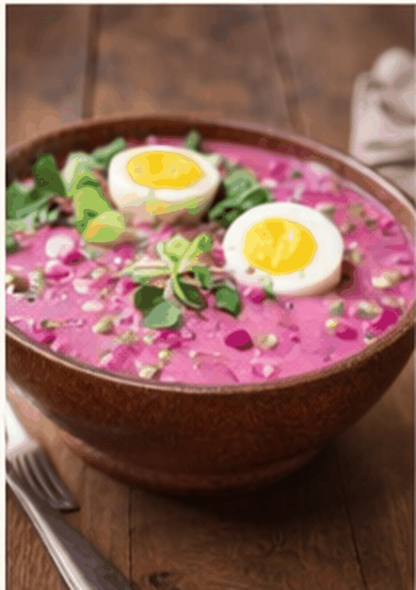
23. Piroggen mit Sauerkraut-Pilz-Füllung23. Pierogi z kapustą kiszoną i grzybami
Teiggerichte / Polnische KücheDania z ciasta / kuchnia polska4 Personen4 osoby
ZutatenSkładniki
500 g Mehl500 g mąki
300 ml heißes Wasser300 ml gorącej wody
1 Ei1 jajko
1 Prise Salz1 szczypta soli
300 g Sauerkraut300 g kapusty kiszonej
30 g getrocknete Steinpilze30 g suszonych borowików
2 Zwiebeln2 cebule
2 EL Öl2 EL oleju
Pfefferpieprz
Zeitplan / TimingCzas / plan
Vorbereitung: ca. 35 Minutenprzygotowanie: ok. 35 min
Garzeit: ca. 10 Minutengotowanie: ok. 10 min
Gesamt: ca. 45 Minutenłącznie: ok. 45 min
TippsWskazówki
Die Füllung sollte vor dem Formen gut abgekühlt sein.Farsz powinien być dobrze wystudzony przed lepieniem.
Die Ränder sauber andrücken, damit beim Kochen nichts ausläuft.Brzegi trzeba dokładnie zlepić, aby farsz nie wypłynął podczas gotowania.
Sehr gut geeignet zum Einfrieren.Pierogi bardzo dobrze nadają się do mrożenia.
ZubereitungPrzygotowanie
Steinpilze in heißem Wasser einweichen und danach fein hacken.Suszone grzyby namoczyć w gorącej wodzie, a następnie drobno posiekać.
Sauerkraut gut ausdrücken und grob schneiden.Kapustę kiszoną dobrze odcisnąć i grubo posiekać.
Zwiebeln fein würfeln und in Öl goldgelb anbraten.Cebulę drobno pokroić i zeszklić na oleju.
Pilze und Sauerkraut dazugeben und die Füllung einige Minuten schmoren, dann mit Pfeffer abschmecken und abkühlen lassen.Dodać grzyby oraz kapustę, chwilę dusić, doprawić pieprzem i ostudzić farsz.
Mehl, heißes Wasser, Ei und Salz zu einem glatten Teig verkneten und kurz ruhen lassen.Z mąki, gorącej wody, jajka i soli zagnieść gładkie ciasto i odstawić na chwilę.
Teig dünn ausrollen und Kreise ausstechen.Ciasto cienko rozwałkować i wycinać krążki.
Jeweils etwas Füllung auf die Kreise geben, zusammenklappen und die Ränder gut festdrücken.Nałożyć farsz, złożyć pierogi na pół i dokładnie zlepić brzegi.
Piroggen portionsweise in leicht siedendem Salzwasser garen, bis sie an die Oberfläche steigen.Gotować partiami w lekko wrzącej osolonej wodzie, aż wypłyną na powierzchnię.
Nach Wunsch direkt servieren oder noch kurz in Butter mit Zwiebeln anbraten.Podawać od razu albo dodatkowo krótko podsmażyć na maśle z cebulą.
BewertungOcena
Klassisches polnisches Teiggericht.Klasyczne polskie danie z ciasta.
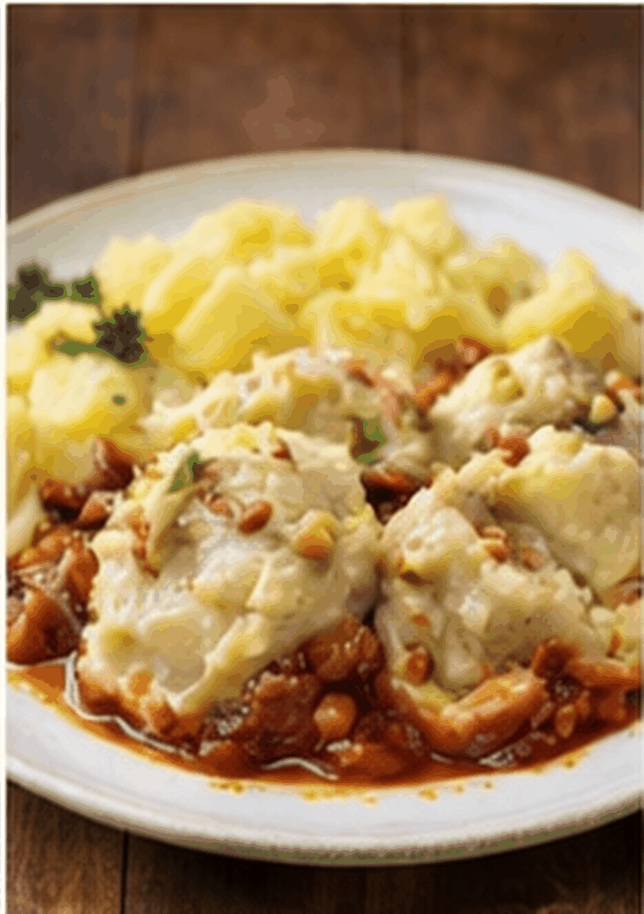
24. Klopse in Tomatensoße24. Klopsy w sosie pomidorowym
Pfannengerichte / HausmannskostDania z patelni / kuchnia domowa4 Personen4 osoby
Vorbereitung: ca. 15 Minutenprzygotowanie: ok. 15 min
Garzeit: ca. 20 Minutengotowanie: ok. 20 min
Gesamt: ca. 35 Minutenłącznie: ok. 35 min
TippsWskazówki
Die Soße darf leicht einkochen, dann wird sie aromatischer.Jeśli sos lekko się zredukuje, będzie miał intensywniejszy smak.
Dazu passen Kartoffeln, Reis oder einfach frisches Brot.Pasują do nich ziemniaki, ryż albo świeże pieczywo.
Die Klopse nicht zu groß formen, dann garen sie gleichmäßiger.Lepiej robić mniejsze klopsy, bo równiej się gotują.
ZubereitungPrzygotowanie
Hackfleisch mit Ei, fein gewürfelter Zwiebel, Paniermehl, Salz, Pfeffer und etwas Paprikapulver vermengen.Wymieszać mięso z jajkiem, drobno pokrojoną cebulą, bułką tartą, solą, pieprzem i odrobiną papryki.
Kleine Klopse formen.Uformować małe klopsy.
Öl in einer Pfanne erhitzen und die Klopse rundherum kurz anbraten.Rozgrzać olej na patelni i krótko obsmażyć klopsy ze wszystkich stron.
Knoblauch fein hacken und kurz mit anschwitzen.Drobno posiekać czosnek i chwilę podsmażyć razem z mięsem.
Tomatenmark und stückige Tomaten zugeben.Dodać koncentrat pomidorowy oraz krojone pomidory.
Die Soße mit Salz, Pfeffer und Paprikapulver würzen.Doprawić sos solą, pieprzem i papryką.
Klopse in der Tomatensoße bei mittlerer Hitze 15–20 Minuten gar ziehen lassen.Dusić klopsy w sosie pomidorowym na średnim ogniu przez 15–20 minut.
Vor dem Servieren noch einmal abschmecken.Przed podaniem jeszcze raz doprawić do smaku.
BewertungOcena
Hausmannskost mit viel Soße.Domowe danie z dużą ilością sosu.
Fisch & Meeresfrüchte / SalateRyby i owoce morza / sałatki4 Personen4 osoby
ZutatenSkładniki
4 Matjesfilets oder eingelegte Heringsfilets4 filety matjasowe lub śledziowe
2 Kartoffeln, gekocht2 ugotowane ziemniaki
1 Apfel1 jabłko
2 Gewürzgurken2 ogórki konserwowe
1 kleine Zwiebel1 mała cebula
2 EL Mayonnaise2 EL majonezu
2 EL saure Sahne oder Joghurt2 EL kwaśnej śmietany lub jogurtu
Pfefferpieprz
Zeitplan / TimingCzas / plan
Vorbereitung: ca. 20 Minutenprzygotowanie: ok. 20 min
Kühlzeit: mindestens 30 Minutenchłodzenie: co najmniej 30 min
Gesamt: ca. 50 Minutenłącznie: ok. 50 min
TippsWskazówki
Mit Salz vorsichtig sein, da der Hering bereits würzig ist.Z solą trzeba uważać, bo śledź jest już słony.
Gut gekühlt schmeckt der Salat am besten.Najlepiej smakuje dobrze schłodzona.
Passt sehr gut zu dunklem Brot oder als Teil einer kalten Platte.Bardzo dobrze pasuje do ciemnego pieczywa albo jako część zimnej płyty.
ZubereitungPrzygotowanie
Heringe in mundgerechte Stücke schneiden.Śledzie pokroić na kawałki do jedzenia.
Kartoffeln pellen und in kleine Würfel schneiden.Ugotowane ziemniaki obrać i pokroić w małą kostkę.
Apfel, Gurken und Zwiebel ebenfalls fein würfeln.Jabłko, ogórki i cebulę również drobno pokroić.
Alles in eine Schüssel geben.Przełożyć wszystko do miski.
Mayonnaise mit saurer Sahne oder Joghurt verrühren und als Dressing zugeben.Wymieszać majonez z kwaśną śmietaną lub jogurtem i dodać jako sos.
Vorsichtig vermischen und mit Pfeffer abschmecken.Delikatnie wymieszać i doprawić pieprzem.
Vor dem Servieren mindestens 30 Minuten kalt stellen, damit der Salat gut durchzieht.Schłodzić przez co najmniej 30 minut przed podaniem, aby sałatka dobrze się przegryzła.
26. Hering nach kaschubischer Art26. Śledź po kaszubsku
Fisch & Meeresfrüchte / Polnische KücheRyby i owoce morza / kuchnia polska4 Personen4 osoby
ZutatenSkładniki
4 Heringsfilets4 filety śledziowe
2 Zwiebeln2 cebule
2 EL Tomatenmark2 EL koncentratu pomidorowego
1 Lorbeerblatt1 liść laurowy
2 Pimentkörner2 ziarna ziela angielskiego
2 EL Öl2 EL oleju
100 ml Wasser100 ml wody
1 TL Zucker1 TL cukru
1 TL Essig1 TL octu
Pfefferpieprz
Zeitplan / TimingCzas / plan
Vorbereitung: ca. 20 Minutenprzygotowanie: ok. 20 min
Ziehzeit: mindestens 4 Stundenczas przegryzania: co najmniej 4 godziny
Gesamt: ca. 4 Stunden 20 Minutenłącznie: ok. 4 godziny 20 min
TippsWskazówki
Am besten schmeckt der Hering am nächsten Tag.Najlepiej smakuje następnego dnia.
Mit frischem Brot servieren.Podawać ze świeżym pieczywem.
Die Soße muss vor dem Schichten abgekühlt sein.Sos musi być zimny przed przełożeniem śledzi.
ZubereitungPrzygotowanie
Heringsfilets nach Bedarf wässern und in Stücke schneiden.W razie potrzeby wymoczyć śledzie i pokroić je na kawałki.
Zwiebeln in feine Streifen schneiden.Cebulę pokroić w cienkie paski.
Öl in einer Pfanne erhitzen und die Zwiebeln langsam weich schmoren.Rozgrzać olej na patelni i dusić cebulę, aż zmięknie.
Tomatenmark einrühren und kurz mitrösten.Dodać koncentrat pomidorowy i chwilę podsmażyć.
Wasser, Lorbeer, Piment, Zucker und Essig zugeben und die Soße einige Minuten köcheln lassen.Wlać wodę, dodać liść laurowy, ziele angielskie, cukier oraz ocet i gotować kilka minut.
Die Tomaten-Zwiebel-Mischung abkühlen lassen.Ostudzić sos pomidorowo-cebulowy.
Hering und Soße abwechselnd in eine Form oder ein Glas schichten.Układać warstwami śledzia i sos w naczyniu lub słoiku.
Mindestens einige Stunden, besser über Nacht, im Kühlschrank durchziehen lassen.Wstawić do lodówki na kilka godzin, a najlepiej na całą noc.
BewertungOcena
Typischer Klassiker aus der kaschubischen Küche.Typowy klasyk kuchni kaszubskiej.
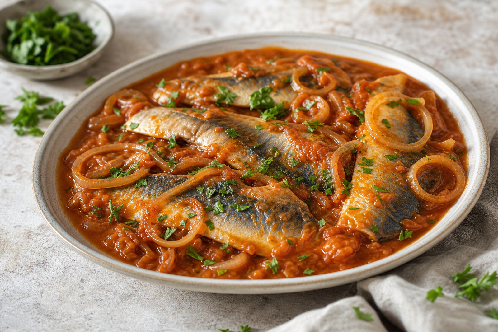
27. Polnisches Beefsteak27. Polski befsztyk
Pfannengerichte / FleischgerichteDania z patelni / dania mięsne4 Personen4 osoby
ZutatenSkładniki
500 g Rinderhackfleisch500 g mielonej wołowiny
1 Zwiebel1 cebula
1 Ei1 jajko
1 EL Senf1 EL musztardy
1 EL Paniermehl1 EL bułki tartej
Salzsól
Pfefferpieprz
Öl oder Butter zum Bratenolej lub masło do smażenia
Zeitplan / TimingCzas / plan
Vorbereitung: ca. 15 Minutenprzygotowanie: ok. 15 min
Braten: ca. 10 Minutensmażenie: ok. 10 min
Gesamt: ca. 25 Minutenłącznie: ok. 25 min
TippsWskazówki
Nicht zu dick formen, dann garen sie gleichmäßiger.Nie formuj ich zbyt grubo, wtedy smażą się równiej.
Dazu passen Zwiebeln, Brot oder Kartoffeln.Pasują do cebuli, pieczywa albo ziemniaków.
Frisch aus der Pfanne schmecken sie am besten.Najlepiej smakują świeżo po usmażeniu.
ZubereitungPrzygotowanie
Zwiebel fein würfeln.Cebulę drobno pokroić.
Rinderhack mit Zwiebel, Ei, Senf, Paniermehl, Salz und Pfeffer vermengen.Wymieszać wołowinę z cebulą, jajkiem, musztardą, bułką tartą, solą i pieprzem.
Etwas Öl oder Butter in einer Pfanne erhitzen.Rozgrzać na patelni trochę oleju lub masła.
Die Beefsteaks bei mittlerer bis kräftiger Hitze von beiden Seiten braun braten, bis sie gar sind.Smażyć z obu stron na średnim albo nieco mocniejszym ogniu, aż będą dobrze usmażone.
Kurz ruhen lassen und servieren.Odstawić na chwilę i podawać.
BewertungOcena
Kräftig und bodenständig.Wyraziste i bardzo domowe.
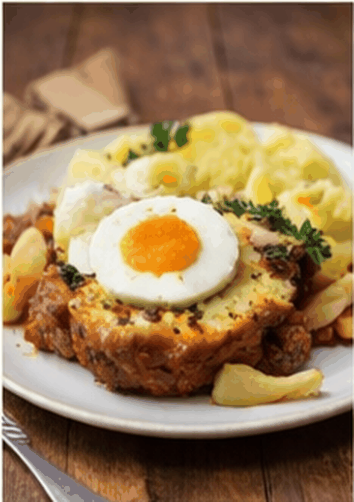
28. Fleischpastete28. Pasztet mięsny
Ofengerichte / FleischgerichteDania z piekarnika / dania mięsne6 Personen6 osób
ZutatenSkładniki
700 g gemischtes Fleisch oder gegartes Fleisch für die Pastete700 g mieszanego mięsa lub ugotowanego mięsa na pasztet
1 Zwiebel1 cebula
2 Eier2 jajka
1 altbackenes Brötchen1 czerstwa bułka
1 Möhre1 marchew
Salzsól
Pfefferpieprz
Majoranmajeranek
Butter für die Formmasło do formy
Zeitplan / TimingCzas / plan
Vorbereitung: ca. 20 Minutenprzygotowanie: ok. 20 min
Backzeit: ca. 50 Minutenpieczenie: ok. 50 min
Gesamt: ca. 1 Stunde 10 Minutenłącznie: ok. 1 godzina 10 min
TippsWskazówki
Lauwarm oder kalt servieren.Można podawać na ciepło albo na zimno.
Am nächsten Tag lässt sich die Pastete besonders gut schneiden.Na drugi dzień kroi się szczególnie dobrze.
Passt gut zu Brot, Senf oder eingelegtem Gemüse.Bardzo pasuje do pieczywa, musztardy lub marynowanych dodatków.
ZubereitungPrzygotowanie
Backofen auf 180 °C Ober-/Unterhitze vorheizen.Rozgrzać piekarnik do 180 °C góra/dół.
Brötchen in Wasser einweichen und ausdrücken.Bułkę namoczyć w wodzie i odcisnąć.
Zwiebel und Möhre fein schneiden und kurz anschwitzen.Cebulę i marchew drobno pokroić i krótko podsmażyć.
Fleisch mit Brötchen, Eiern, Gemüse und Gewürzen vermengen oder fein zerkleinern, je nach gewünschter Konsistenz.Wymieszać mięso z bułką, jajkami, warzywami i przyprawami albo zmielić na bardziej jednolitą masę.
Eine Kastenform oder kleine Auflaufform buttern und die Masse einfüllen.Wysmarować formę masłem i przełożyć do niej masę.
Die Oberfläche glatt streichen.Wyrównać wierzch.
Im Ofen etwa 45–50 Minuten backen, bis die Pastete fest und leicht gebräunt ist.Piec około 45–50 minut, aż pasztet będzie zwarty i lekko zrumieniony.
Vor dem Anschneiden etwas abkühlen lassen.Przed krojeniem lekko przestudzić.
BewertungOcena
Klassische Fleischpastete für besondere Tage.Klasyczny pasztet mięsny na specjalne okazje.
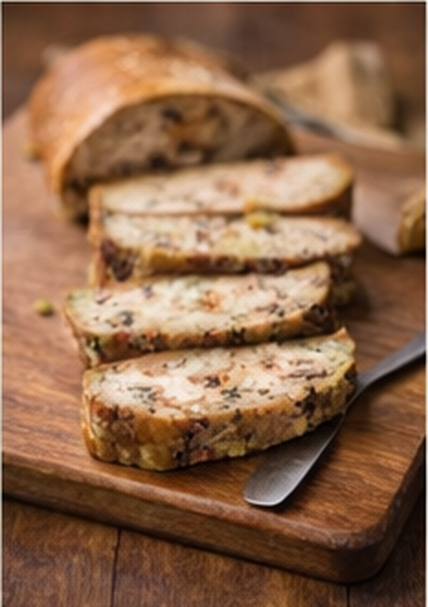
29. Geflügelleber mit Äpfeln29. Wątróbka drobiowa z jabłkami
Pfannengerichte / GeflügelgerichteDania z patelni / dania drobiowe3–4 Personen3–4 osoby
ZutatenSkładniki
500 g Geflügelleber500 g wątróbki drobiowej
2 Äpfel2 jabłka
2 Zwiebeln2 cebule
2 EL Mehl2 EL mąki
2 EL Öl oder Butter2 EL oleju lub masła
Salzsól
Pfefferpieprz
Majoranmajeranek
Zeitplan / TimingCzas / plan
Vorbereitung: ca. 15 Minutenprzygotowanie: ok. 15 min
Braten: ca. 15 Minutensmażenie: ok. 15 min
Gesamt: ca. 30 Minutenłącznie: ok. 30 min
TippsWskazówki
Leber immer erst am Ende salzen, sonst wird sie schneller trocken.Wątróbkę soli się dopiero na końcu, aby nie stwardniała.
Die Äpfel sollen weich, aber nicht zerfallen.Jabłka mają być miękkie, ale nie rozgotowane.
Dazu passen Kartoffeln oder frisches Brot.Pasują do niej ziemniaki albo świeże pieczywo.
ZubereitungPrzygotowanie
Leber putzen und nach Wunsch halbieren.Oczyścić wątróbkę i w razie potrzeby przekroić na mniejsze kawałki.
Äpfel schälen, entkernen und in Spalten schneiden.Jabłka obrać, usunąć gniazda nasienne i pokroić w cząstki.
Zwiebeln in Streifen schneiden.Cebulę pokroić w paski.
Zwiebeln in etwas Fett langsam glasig und leicht goldgelb braten, dann herausnehmen.Na patelni podsmażyć cebulę na szklisto i lekko złoty kolor, a następnie wyjąć.
Äpfel kurz anbraten, damit sie weich werden, aber noch Form behalten, und ebenfalls herausnehmen.Krótko podsmażyć jabłka, aby zmiękły, ale zachowały kształt, i także je wyjąć.
Leber leicht in Mehl wenden und in der Pfanne zügig anbraten.Wątróbkę lekko obtoczyć w mące i szybko obsmażyć na patelni.
Zwiebeln und Äpfel wieder zugeben.Dodać z powrotem cebulę i jabłka.
Alles kurz zusammen schwenken und erst am Ende mit Salz, Pfeffer und Majoran würzen.Krótko wszystko razem wymieszać i doprawić solą, pieprzem oraz majerankiem dopiero na końcu.
BewertungOcena
Herzhaft mit feiner Süße.Wytrawne danie z lekką owocową nutą.
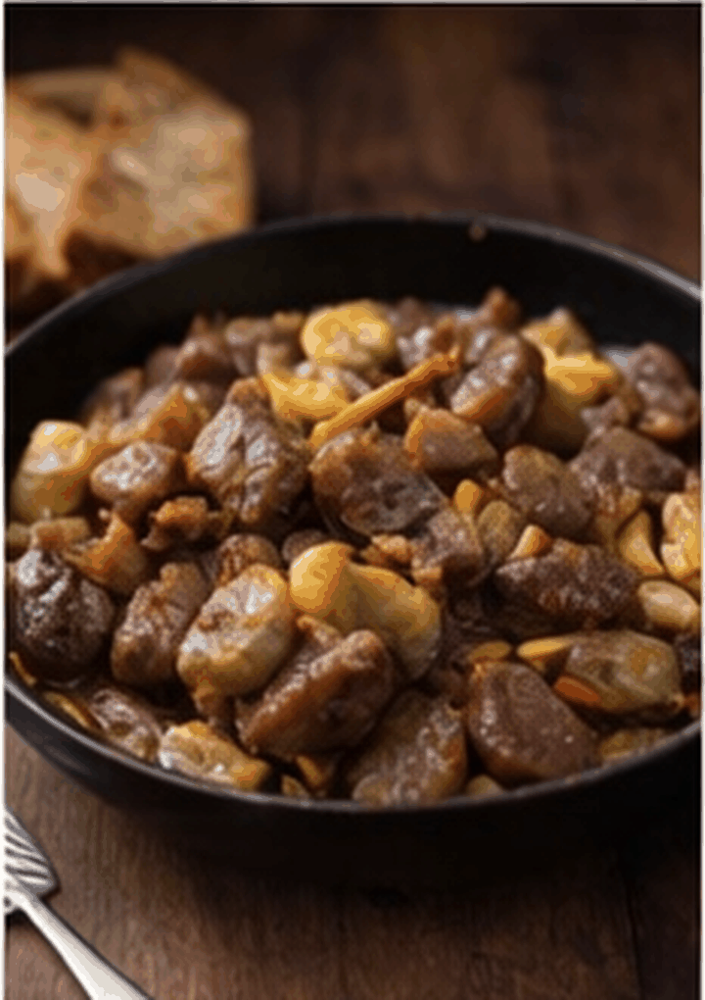
30. Eisbein nach alt-polnischer Art30. Golonka po staropolsku
Ofengerichte / FeiertagsessenDania z piekarnika / dania świąteczne4 Personen4 osoby
ZutatenSkładniki
1,2 kg Eisbein1,2 kg golonki
1 EL Fett1 EL tłuszczu
Suppengrün oder Wurzelgemüsewłoszczyzna lub warzywa korzeniowe
1 EL Tomatenmark1 EL koncentratu pomidorowego
Salzsól
Pfefferpieprz
Knoblauchczosnek
Wasser oder Brühewoda lub bulion
Zeitplan / TimingCzas / plan
Vorbereitung: ca. 20 Minuten plus Kühlzeitprzygotowanie: ok. 20 min plus czas chłodzenia
Schmorzeit: ca. 2 Stundenduszenie: ok. 2 godziny
Gesamt: abhängig von der Kühlzeitłącznie: zależnie od czasu chłodzenia
TippsWskazówki
Die Kühlzeit vor dem Schmoren verbessert den Geschmack deutlich.Czas chłodzenia przed duszeniem wyraźnie poprawia smak.
Mit Senf und Brot serviert bleibt es sehr klassisch.Podana z musztardą i pieczywem pozostaje bardzo klasyczna.
Während des Garens gelegentlich mit etwas Flüssigkeit übergießen.W trakcie duszenia warto od czasu do czasu polać mięso płynem z brytfanny.
ZubereitungPrzygotowanie
Eisbein mit Salz, Pfeffer und Knoblauch würzen und am besten über Nacht oder mindestens einige Stunden kühl ziehen lassen.Doprawić golonkę solą, pieprzem i czosnkiem, a następnie odstawić do lodówki najlepiej na noc albo przynajmniej na kilka godzin.
Etwas Fett in einem Bräter erhitzen und das Eisbein rundherum anbraten.Rozgrzać tłuszcz w brytfannie i obsmażyć golonkę ze wszystkich stron.
Suppengrün oder Wurzelgemüse grob schneiden und dazugeben.Dodać grubo pokrojoną włoszczyznę lub warzywa korzeniowe.
Mit etwas Wasser oder Brühe angießen.Podlać niewielką ilością wody albo bulionu.
Zugedeckt schmoren, bis das Fleisch weich wird.Dusić pod przykryciem, aż mięso będzie miękkie.
Tomatenmark kurz vor Ende der Garzeit einrühren.Pod koniec duszenia dodać koncentrat pomidorowy.
Zum Schluss offen weitergaren, damit Sauce und Oberfläche kräftiger werden.Na końcu dusić chwilę bez przykrycia, aby sos i wierzch nabrały mocniejszego smaku.
Heiß servieren, zum Beispiel mit Brot oder Kartoffeln.Podawać na gorąco, na przykład z pieczywem albo ziemniakami.
Suppen / Polnische KücheZupy / kuchnia polska4 Personen4 osoby
ZutatenSkładniki
1,5 l Wasser1,5 l wody
300 g Huhn300 g kurczaka
300 g Suppengrün300 g włoszczyzny
250 ml Milch250 ml mleka
eine Handvoll Nudelngarść makaronu
eine kleine Menge Erbsenniewielka ilość grochu
eine kleine Menge Bohnenniewielka ilość fasoli
Salzsól
Pfefferpieprz
optional: Dillopcjonalnie: koperek
Zeitplan / TimingCzas / plan
Vorbereitung: ca. 20 Minutenprzygotowanie: ok. 20 min
Kochzeit: ca. 45 Minutengotowanie: ok. 45 min
Gesamt: ca. 1 Stunde 5 Minutenłącznie: ok. 1 godzina 5 min
TippsWskazówki
Die Milch nur sanft erhitzen und nicht stark kochen lassen.Mleko trzeba tylko delikatnie podgrzać i nie doprowadzać do mocnego wrzenia.
Mit Dill bekommt die Suppe eine frische Note.Koperek nadaje zupie świeższą nutę.
Ideal für kühle Tage.To dobra zupa na chłodniejsze dni.
ZubereitungPrzygotowanie
Huhn mit Wasser in einen Topf geben und langsam aufkochen.Włożyć kurczaka do garnka z wodą i powoli zagotować.
Suppengrün zugeben und alles zu einer kräftigen Brühe kochen.Dodać włoszczyznę i ugotować wyraźny bulion.
Das Huhn herausnehmen, Fleisch von den Knochen lösen und klein schneiden.Wyjąć kurczaka, oddzielić mięso od kości i drobno pokroić.
Brühe durch ein Sieb geben, wenn sie feiner werden soll.Jeśli chcesz delikatniejszą zupę, przecedź bulion.
Nudeln, Erbsen und Bohnen in der Brühe gar kochen.W bulionie ugotować makaron, groch i fasolę.
Milch zugeben und vorsichtig erwärmen.Dodać mleko i delikatnie podgrzać.
Das Hühnerfleisch wieder einlegen.Włożyć z powrotem mięso z kurczaka.
Mit Salz, Pfeffer und nach Wunsch etwas Dill abschmecken und heiß servieren.Doprawić solą, pieprzem i ewentualnie koperkiem, a następnie podawać gorącą.
32. Erbsensuppe mit Kartoffeln32. Grochówka z ziemniakami
Suppen / HausmannskostZupy / kuchnia domowa4 Personen4 osoby
ZutatenSkładniki
300 g getrocknete Erbsen300 g suszonego grochu
500 g Kartoffeln500 g ziemniaków
1 Zwiebel1 cebula
1 Möhre1 marchew
1 l Brühe1 l bulionu
1 EL Öl oder etwas Speck1 EL oleju lub trochę boczku
Salzsól
Pfefferpieprz
Majoranmajeranek
Zeitplan / TimingCzas / plan
Vorbereitung: ca. 15 Minutenprzygotowanie: ok. 15 min
Kochzeit: ca. 45 Minutengotowanie: ok. 45 min
Gesamt: ca. 1 Stundełącznie: ok. 1 godzina
TippsWskazówki
Die Konsistenz kann von rustikal bis cremig angepasst werden.Konsystencję można zostawić bardziej rustykalną albo zrobić bardziej kremową.
Mit Wurst oder Speck wird die Suppe noch kräftiger.Z kiełbasą albo boczkiem zupa będzie jeszcze bardziej sycąca.
Am nächsten Tag schmeckt sie oft noch besser.Na drugi dzień często smakuje jeszcze lepiej.
ZubereitungPrzygotowanie
Getrocknete Erbsen nach Bedarf vorher einweichen.W razie potrzeby wcześniej namoczyć suchy groch.
Zwiebel, Möhre und Kartoffeln putzen und in Stücke schneiden.Oczyścić cebulę, marchew i ziemniaki, a następnie pokroić je na kawałki.
Zwiebel in etwas Öl oder mit wenig Speck anschwitzen.Podsmażyć cebulę na oleju albo z niewielką ilością boczku.
Erbsen, Möhre und Brühe zugeben und weich kochen.Dodać groch, marchew oraz bulion i gotować do miękkości.
Kartoffeln hinzufügen und weiter kochen, bis alles gar ist.Dodać ziemniaki i gotować dalej, aż wszystko będzie gotowe.
Nach Wunsch einen kleinen Teil pürieren, damit die Suppe sämiger wird.Jeśli chcesz bardziej kremową zupę, zmiksuj niewielką część.
Mit Salz, Pfeffer und Majoran abschmecken und heiß servieren.Doprawić solą, pieprzem i majerankiem, a następnie podawać na gorąco.
BewertungOcena
Sättigende klassische Suppe.Syta klasyczna zupa.
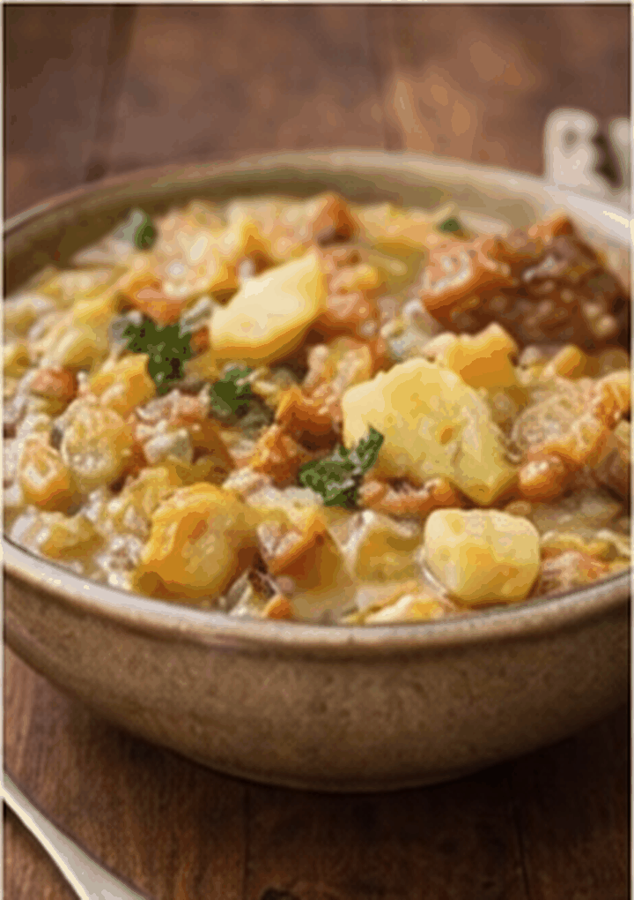
33. Alt-polnische Sauce33. Sos staropolski
Saucen / Polnische KücheSosy / kuchnia polskaFür mehrere PortionenNa kilka porcji
ZutatenSkładniki
1 Zwiebel1 cebula
1 EL Butter oder Fett1 EL masła lub tłuszczu
1 EL Mehl1 EL mąki
250 ml Brühe250 ml bulionu
100 ml Sahne100 ml śmietany
Salzsól
Pfefferpieprz
Majoran oder andere Gewürze nach Geschmackmajeranek lub inne przyprawy do smaku
Zeitplan / TimingCzas / plan
Vorbereitung: ca. 10 Minutenprzygotowanie: ok. 10 min
Kochzeit: ca. 10 Minutengotowanie: ok. 10 min
Gesamt: ca. 20 Minutenłącznie: ok. 20 min
TippsWskazówki
Die Soße passt gut zu Fleisch, Klopsen und Kartoffelgerichten.Sos dobrze pasuje do mięsa, klopsów i dań ziemniaczanych.
Wer sie kräftiger möchte, kann die Zwiebeln etwas stärker anrösten.Jeśli chcesz mocniejszego smaku, cebulę można podsmażyć trochę dłużej.
Beim Angießen ständig rühren, damit die Konsistenz glatt bleibt.Podczas dolewania bulionu trzeba stale mieszać, aby sos był gładki.
ZubereitungPrzygotowanie
Zwiebel sehr fein würfeln.Cebulę bardzo drobno pokroić.
Butter oder Fett in einem kleinen Topf erhitzen und die Zwiebel langsam anschwitzen.Rozgrzać masło lub tłuszcz w małym garnku i powoli zeszklić cebulę.
Mehl zugeben und kurz anschwitzen, ohne es zu dunkel werden zu lassen.Dodać mąkę i chwilę podsmażyć, nie dopuszczając do zbyt mocnego zrumienienia.
Brühe unter Rühren angießen, damit keine Klümpchen entstehen.Stopniowo wlewać bulion, cały czas mieszając, aby nie powstały grudki.
Sahne zugeben und die Soße einige Minuten sanft köcheln lassen.Dodać śmietanę i gotować sos kilka minut na małym ogniu.
Mit Salz, Pfeffer und Gewürzen nach Geschmack abschmecken.Doprawić solą, pieprzem i przyprawami według uznania.
Bei Bedarf durch ein Sieb geben oder rustikal lassen.W razie potrzeby przetrzeć przez sito albo zostawić bardziej rustykalny.
100 g geräucherte, luftgetrocknete Wurst100 g wędzonej podsuszanej kiełbasy
200 g weiße Wurst, roh oder vorgegart200 g białej kiełbasy, surowej lub parzonej
200 g roher, geräucherter Speck200 g surowego wędzonego boczku
3 EL Sahne oder Schlagsahne3 EL śmietany lub śmietanki
1 TL Majoran oder mehr1 TL majeranku lub więcej
1 Pimentkorn1 ziarno ziela angielskiego
1 Lorbeerblatt1 liść laurowy
je 1/4 TL Knoblauch und Salzpo 1/4 TL czosnku i soli
zum Servieren: 4–6 Eier, Roggenbrot, Petersilie oder Oreganodo podania: 4–6 jajek, pieczywo żytnie, natka pietruszki lub oregano
Zeitplan / TimingCzas / plan
Vorbereitung: ca. 15 Minutenprzygotowanie: ok. 15 min
Kochzeit: ca. 25 Minutengotowanie: ok. 25 min
Gesamt: ca. 40 Minutenłącznie: ok. 40 min
TippsWskazówki
Wenn du saure Sahne verwendest, gleiche sie vorher mit etwas heißer Suppe an.Jeśli używasz kwaśnej śmietany, wcześniej zahartuj ją odrobiną gorącej zupy.
Die Basis für dieses Rezept ist Rezept 19: Zakwas für Żurek selber machen.Bazą do tego przepisu jest przepis 19: zakwas na żurek.
Mit Roggenbrot serviert wirkt der Żurek besonders traditionell.Podany z żytnim pieczywem żurek smakuje najbardziej tradycyjnie.
ZubereitungPrzygotowanie
Brühe in einem großen Topf erhitzen.Podgrzać bulion w dużym garnku.
Geräucherte Wurst, weiße Wurst und Speck in passende Stücke schneiden und in die Brühe geben.Pokroić w odpowiednie kawałki wędzoną kiełbasę, białą kiełbasę i boczek, a następnie dodać do bulionu.
Einige Minuten sanft kochen lassen, damit die Brühe Geschmack annimmt.Gotować kilka minut na małym ogniu, aby bulion nabrał smaku.
Piment, Lorbeerblatt, Knoblauch, Salz und Majoran zugeben.Dodać ziele angielskie, liść laurowy, czosnek, sól oraz majeranek.
Zakwas unter Rühren einfließen lassen.Powoli wlać zakwas, cały czas mieszając.
Kurz aufkochen, bis der Żurek leicht eindickt.Krótko zagotować, aż żurek lekko zgęstnieje.
Zum Schluss die Sahne einrühren.Na końcu wmieszać śmietanę.
Mit halbierten Eiern, Roggenbrot und etwas Petersilie oder Oregano servieren.Podawać z połówkami jajek, żytnim pieczywem oraz natką pietruszki albo oregano.
BewertungOcena
Traditioneller Oster-Żurek auf Basis von Rezept 19.Tradycyjny żurek wielkanocny na bazie przepisu 19.
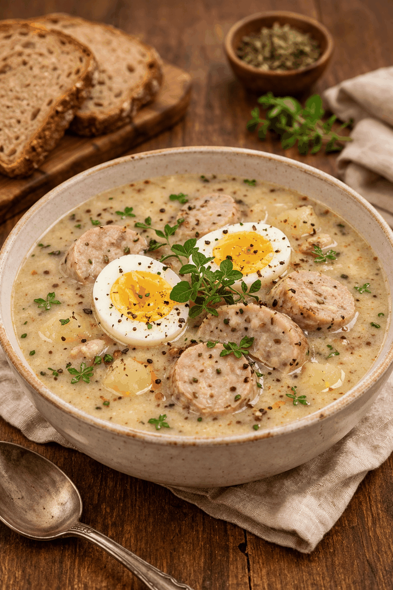
35. Ofen-Brisket mit Magic Dust35. Pieczony brisket z przyprawą Magic Dust
OfengerichteDania z piekarnika2 Personen2 osoby
ZutatenSkładniki
1,3 kg Rinderbrust (Brisket)1,3 kg mostka wołowego (brisket)
2 EL mittelscharfer Senf2 łyżki średnio ostrej musztardy
500 g gelbe Bohnen500 g żółtej fasolki szparagowej
2 EL Olivenöl2 łyżki oliwy z oliwek
1–2 Knoblauchzehen1–2 ząbki czosnku
Salzsól
Pfefferpieprz
optional Zitronensaftopcjonalnie sok z cytryny
Zeitplan / TimingCzas / plan
Freitag: vorbereiten und marinierenPiątek: przygotowanie i marynowanie
Samstag 12:30 Uhr: Start im OfenSobota 12:30: start pieczenia
Ca. 15:30–16:00 Uhr: bei etwa 75 °C Kerntemperatur in Butcher Paper einwickelnOkoło 15:30–16:00: zawinąć w butcher paper przy temperaturze wewnętrznej około 75 °C
Ca. 21:15 Uhr: fertig bei 92 °C KerntemperaturOkoło 21:15: gotowe przy 92 °C temperatury wewnętrznej
Gesamtzeit: ca. 8 Stunden 45 Minuten plus 45–60 Minuten RuhezeitŁączny czas: około 8 godzin 45 minut plus 45–60 minut odpoczynku
TippsWskazówki
Die Plateauphase kann mehrere Stunden dauern und ist bei Brisket normal.Faza plateau może trwać kilka godzin i jest normalna przy briskecie.
Eine spätere Temperaturerhöhung hilft, die Zieltemperatur sicher zu erreichen.Podniesienie temperatury pod koniec pieczenia pomaga osiągnąć temperaturę docelową.
Geduld ist bei Brisket entscheidend.Cierpliwość jest kluczowa przy przygotowaniu brisketu.
Die Ruhezeit ist Pflicht, damit das Fleisch saftig bleibt.Odpoczynek po pieczeniu jest obowiązkowy, jeśli mięso ma pozostać soczyste.
Immer gegen die Faser schneiden, damit die Scheiben zart bleiben.Zawsze kroić w poprzek włókien, aby mięso było delikatne.
Optional etwas Fleischsaft oder eine passende Sauce dazu servieren.Opcjonalnie można podać z sosem lub zebranym sokiem z mięsa.
ZubereitungPrzygotowanie
Brisket auspacken und gründlich trocken tupfen.Wyjąć brisket z opakowania i dokładnie osuszyć ręcznikiem papierowym.
Das Fleisch rundum mit mittelscharfem Senf einreiben.Natrzeć mięso ze wszystkich stron średnio ostrą musztardą.
Großzügig mit Magic Dust würzen und die Gewürzmischung gut andrücken.Obficie doprawić przyprawą Magic Dust i dobrze docisnąć przyprawy do powierzchni mięsa.
Das Brisket fest in Frischhaltefolie einwickeln und über Nacht im Kühlschrank marinieren.Szczelnie owinąć brisket folią spożywczą i wstawić na noc do lodówki.
Am nächsten Tag den Ofen auf ca. 100 °C vorheizen und das Brisket in den Ofen geben.Następnego dnia rozgrzać piekarnik do około 100 °C i wstawić mięso do pieczenia.
Das Fleisch langsam garen, bis nach etwa 3 Stunden eine Kerntemperatur von ca. 75 °C erreicht ist.Piec powoli, aż po około 3 godzinach temperatura wewnętrzna osiągnie około 75 °C.
Das Brisket dann fest in Butcher Paper einwickeln.Następnie szczelnie owinąć brisket w butcher paper.
Weitergaren und die Ofentemperatur bei Bedarf auf ca. 120–140 °C erhöhen, um die Plateauphase zu überwinden.Piec dalej i w razie potrzeby zwiększyć temperaturę piekarnika do około 120–140 °C, aby przejść przez fazę plateau.
Das Fleisch bei 92 °C Kerntemperatur aus dem Ofen nehmen.Wyjąć mięso z piekarnika przy temperaturze wewnętrznej 92 °C.
Im Butcher Paper lassen, zusätzlich in ein Handtuch wickeln und 45–60 Minuten ruhen lassen.Pozostawić w butcher paper, dodatkowo owinąć ręcznikiem i odstawić na 45–60 minut do odpoczynku.
Danach das Brisket gegen die Faser in Scheiben schneiden.Następnie pokroić brisket w plastry w poprzek włókien.
Für die Bohnen reichlich Wasser aufkochen und die gelben Bohnen bissfest garen.Na fasolkę zagotować wodę i ugotować żółtą fasolkę szparagową al dente.
Knoblauch fein hacken oder in dünne Scheiben schneiden.Drobno posiekać czosnek lub pokroić go w cienkie plasterki.
Die Bohnen abgießen und in einer Pfanne mit Olivenöl und Knoblauch kurz anbraten.Odcedzić fasolkę i krótko podsmażyć ją na oliwie z oliwek z czosnkiem.
Mit Salz, Pfeffer und optional etwas Zitronensaft abschmecken und zum Brisket servieren.Doprawić solą, pieprzem i opcjonalnie sokiem z cytryny, a następnie podać z brisketem.
BewertungOcena
10/1010/10
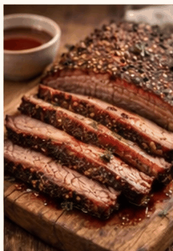
36. Irish Beef Rollbraten aus dem Backofen36. Irlandzka pieczeń wołowa z piekarnika
OfengerichteDania z piekarnika4 Personen4 osoby
ZutatenSkładniki
1,2 kg Irish Beef Rollbraten1,2 kg irlandzkiej pieczeni wołowej
2 EL Öl2 łyżki oleju
2 TL Salz2 łyżeczki soli
1 TL Pfeffer1 łyżeczka pieprzu
2 TL mittelscharfer Senf (optional)2 łyżeczki średnio ostrej musztardy (opcjonalnie)
Ofenzeit: ca. 2 bis 2,5 StundenPieczenie: ok. 2 do 2,5 godziny
Ruhezeit: 10 bis 15 MinutenOdpoczynek: 10 do 15 minut
Gesamtzeit: ca. 2 Stunden 35 Minuten bis 3 Stunden 10 MinutenŁączny czas: ok. 2 godziny 35 minut do 3 godzin 10 minut
TippsWskazówki
Kerntemperatur rosa: 58 bis 62 °C.Temperatura wewnętrzna dla mięsa różowego: 58–62 °C.
Kerntemperatur durch, aber saftig: 65 bis 70 °C.Temperatura wewnętrzna dla mięsa dobrze wypieczonego, ale soczystego: 65–70 °C.
Über 75 °C wird der Braten schnell trockener und fester.Powyżej 75 °C pieczeń szybko staje się suchsza i twardsza.
Den Bratensaft kannst du zum Schluss zu einer einfachen Soße verarbeiten.Sos z pieczenia można na końcu przerobić na prosty sos do podania.
ZubereitungPrzygotowanie
Backofen auf 160 °C Ober-/Unterhitze oder 140 °C Umluft vorheizen.Rozgrzać piekarnik do 160 °C góra/dół lub 140 °C z termoobiegiem.
Den Rollbraten trocken tupfen und mit Salz, Pfeffer sowie optional Senf und Paprikapulver einreiben.Osuszyć pieczeń i natrzeć ją solą, pieprzem oraz opcjonalnie musztardą i papryką.
Öl in einem Bräter erhitzen und den Braten rundherum kräftig anbraten.Rozgrzać olej w brytfannie i mocno obsmażyć mięso z każdej strony.
Zwiebeln und Möhren grob schneiden und mit in den Bräter geben.Grubo pokroić cebulę i marchewki, następnie dodać je do brytfanny.
Mit Rinderbrühe aufgießen und den Bräter mit Deckel schließen.Wlać bulion wołowy i przykryć brytfannę pokrywką.
Den Braten im Ofen garen, bis die gewünschte Kerntemperatur erreicht ist.Piec mięso w piekarniku, aż osiągnie pożądaną temperaturę wewnętrzną.
Für ein saftiges Ergebnis den Braten bei 60 bis 65 °C Kerntemperatur aus dem Ofen nehmen.Aby pieczeń była soczysta, wyjąć ją przy temperaturze wewnętrznej 60–65 °C.
Vor dem Anschneiden 10 bis 15 Minuten ruhen lassen.Przed krojeniem odstawić mięso na 10–15 minut do odpoczynku.
BewertungOcena
9/109/10
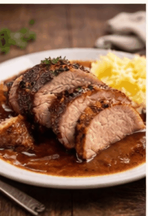
37. Svens AirFryer-Iskender Kebab37. Kebab Iskender z AirFryera (wersja Svena)
AirfryerAirfryer4 Personen4 osoby
ZutatenSkładniki
1 kg Rinderhackfleisch (zweimal gewolft)1 kg mielonej wołowiny (dwukrotnie mielonej)
2 EL Naturjoghurt (10 %)2 łyżki jogurtu naturalnego (10%)
2 pürierte Zwiebeln2 zmiksowane cebule
2 EL Ajvar2 łyżki ajvaru
3 EL Dönergewürz3 łyżki przyprawy do kebaba
1 TL Vegeta1 łyżeczka Vegety
Pfefferpieprz
50 ml Olivenöl50 ml oliwy z oliwek
2 EL Petersilie (gehackt)2 łyżki natki pietruszki
Fladenbrotchleb pita lub fladenbrot
Tomatensaucesos pomidorowy
Zeitplan / TimingCzas / plan
Gesamtzeit: ca. 45 MinutenŁączny czas: ok. 45 minut
Vorbereitung: ca. 15 MinutenPrzygotowanie: ok. 15 minut
Anfrieren: 10–15 MinutenSchłodzenie: 10–15 minut
AirFryer: ca. 20 MinutenAirFryer: ok. 20 minut
Ruhezeit: 5 MinutenOdpoczynek: 5 minut
TippsWskazówki
Nach dem Garen kurz ruhen lassen, dann bleibt das Fleisch saftiger.Po upieczeniu dać mięsu chwilę odpocząć, aby było bardziej soczyste.
Für extra Geschmack das Fleisch kurz in der Pfanne nachbräunen.Dla mocniejszego smaku można krótko podsmażyć mięso na patelni.
Fladenbrot mit etwas Butter beträufeln, dann schmeckt es besonders original.Pieczywo skropione odrobiną masła smakuje najbardziej tradycyjnie.
Reste lassen sich gut im AirFryer oder in der Pfanne aufwärmen.Resztki można dobrze odgrzać w AirFryerze albo na patelni.
ZubereitungPrzygotowanie
Alle Zutaten für das Fleisch gründlich verkneten.Dokładnie wymieszać wszystkie składniki na mięso.
Die Masse zwischen Backpapier flach drücken, etwa 1–1,5 cm dick.Rozłożyć masę między papierem do pieczenia na grubość około 1–1,5 cm.
Die Fleischplatte 10–15 Minuten anfrieren.Wstawić mięso na 10–15 minut do lekkiego schłodzenia lub podmrożenia.
Im AirFryer bei 200 °C ca. 20 Minuten garen und nach 10 Minuten wenden.Piec w AirFryerze w 200 °C przez około 20 minut, obracając po 10 minutach.
Das Fleisch 5 Minuten ruhen lassen und dann in Streifen schneiden.Odstawić mięso na 5 minut, a następnie pokroić je w paski.
Fladenbrot bei 180 °C 6–8 Minuten im Ofen rösten.Podpiec pieczywo w piekarniku w 180 °C przez 6–8 minut.
Mit Tomatensauce und Joghurt servieren.Podawać z sosem pomidorowym i jogurtem.
BewertungOcena
10/1010/10
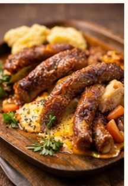
38. Klassischer Schmorbraten mit dunkler Sauce38. Klasyczna pieczeń duszona z ciemnym sosem
Ofengerichte / FeiertagsessenDania z piekarnika / dania świąteczne6 Personen6 osób
ZutatenSkładniki
1,8 kg Rinderbraten1,8 kg pieczeni wołowej
2 EL Butterschmalz2 łyżki smalcu klarowanego
2 große Zwiebeln2 duże cebule
2 Möhren2 marchewki
1/4 Knollensellerie1/4 selera korzeniowego
2 EL Tomatenmark2 łyżki koncentratu pomidorowego
500 ml Rotwein500 ml czerwonego wina
700 bis 1000 ml Rinderfond700 do 1000 ml bulionu wołowego
2 Lorbeerblätter2 liście laurowe
1 TL Pfefferkörner1 łyżeczka ziaren pieprzu
Salzsól
Pfefferpieprz
Zeitplan / TimingCzas / plan
Vorbereitung: ca. 25 MinutenPrzygotowanie: ok. 25 minut
Anbraten: ca. 15 MinutenObsmażanie: ok. 15 minut
Schmorzeit: ca. 2,5 bis 3 StundenDuszenie: ok. 2,5 do 3 godzin
Gesamt: ca. 3 bis 3,5 StundenŁączny czas: ok. 3 do 3,5 godziny
TippsWskazówki
Je besser das Gemüse angeröstet wird, desto kräftiger wird die Sauce.Im lepiej zrumienią się warzywa, tym mocniejszy będzie sos.
Rotwein und Tomatenmark sorgen für Tiefe und Farbe.Czerwone wino i koncentrat pomidorowy dają głębię smaku i kolor.
Den Braten nach dem Schmoren kurz ruhen lassen, bevor er aufgeschnitten wird.Po duszeniu warto dać mięsu chwilę odpocząć przed krojeniem.
Dazu passen Kartoffelstampf, Rotkohl oder Semmelknödel.Do tego dania pasują puree ziemniaczane, modra kapusta albo knedle.
ZubereitungPrzygotowanie
Braten trocken tupfen, salzen und pfeffern.Osuszyć mięso, doprawić solą i pieprzem.
Im Bräter in Butterschmalz rundherum kräftig anbraten.Mocno obsmażyć pieczeń ze wszystkich stron w brytfannie na smalcu klarowanym.
Fleisch kurz herausnehmen. Zwiebeln, Möhren und Sellerie anrösten.Na chwilę wyjąć mięso, a następnie podsmażyć cebulę, marchew i seler.
Tomatenmark zugeben und kurz mitrösten.Dodać koncentrat pomidorowy i krótko go podsmażyć.
Mit Rotwein ablöschen und etwas einkochen lassen.Podlać czerwonym winem i lekko zredukować.
Braten wieder einlegen, mit Fond auffüllen, Lorbeer und Pfefferkörner zugeben.Włożyć pieczeń z powrotem, dolać bulion, dodać liście laurowe i ziarna pieprzu.
Mit Deckel bei 160 bis 170 °C etwa 2,5 bis 3 Stunden schmoren, bis das Fleisch weich ist.Dusić pod przykryciem w 160–170 °C przez około 2,5 do 3 godzin, aż mięso będzie miękkie.
Braten herausnehmen, Sauce pürieren oder durch ein Sieb passieren und nach Wunsch einkochen.Wyjąć mięso, a sos zmiksować lub przetrzeć przez sito i w razie potrzeby jeszcze zredukować.
BewertungOcena
Sehr gutBardzo dobre
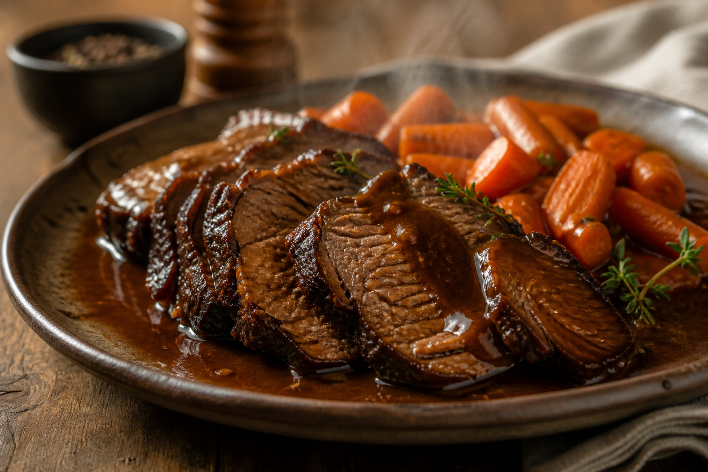
39. Hähnchen-Kartoffel-Pfanne mit Gemüse39. Zapiekanka z kurczakiem, ziemniakami i warzywami
OfengerichteDania z piekarnika2 Personen2 osoby
ZutatenSkładniki
400–450 g Hähnchengeschnetzeltes400–450 g krojonego filetu z kurczaka
Kartoffeln etwas kleiner schneiden als das Fleisch, damit alles gleichzeitig gar wird.Ziemniaki pokrój trochę drobniej niż mięso, aby wszystko upiekło się równomiernie.
Zucchini eher etwas größer schneiden, damit sie nicht zu weich wird.Cukinię pokrój większą, aby nie zrobiła się zbyt miękka.
Der Joghurt-Dip passt gut mit Salz, Pfeffer und etwas Zitronensaft.Do dipu jogurtowego pasują sól, pieprz i odrobina soku z cytryny.
ZubereitungPrzygotowanie
Backofen auf 200 °C Umluft vorheizen.Rozgrzej piekarnik do 200 °C z termoobiegiem.
Kartoffeln in mundgerechte Würfel schneiden. Zwiebeln in Spalten schneiden. Paprika, Zucchini und Champignons grob zerkleinern.Pokrój ziemniaki w kostkę. Cebulę pokrój w piórka. Paprykę, cukinię i pieczarki pokrój na większe kawałki.
Hähnchengeschnetzeltes bei Bedarf etwas kleiner schneiden.W razie potrzeby pokrój kurczaka na mniejsze kawałki.
Alles in einer großen Schüssel mit Öl, Paprikapulver, Salz, Pfeffer und optional etwas Knoblauchpulver vermengen.Wymieszaj wszystko w dużej misce z olejem, papryką, solą, pieprzem i opcjonalnie z odrobiną czosnku granulowanego.
Die Mischung in eine Auflaufform geben und zunächst 25 Minuten abgedeckt garen.Przełóż całość do naczynia żaroodpornego i piecz pod przykryciem przez 25 minut.
Abdeckung entfernen, alles einmal wenden und weitere 15–20 Minuten backen, bis die Kartoffeln weich und das Hähnchen gar sind.Zdejmij przykrycie, delikatnie przemieszaj i piecz jeszcze 15–20 minut, aż ziemniaki będą miękkie, a kurczak gotowy.
Optional am Ende 3–5 Minuten Grillfunktion nutzen, damit mehr Röstaromen entstehen.Opcjonalnie na końcu włącz funkcję grilla na 3–5 minut dla lepszego zrumienienia.
Mit Joghurt-Dip servieren.Podawaj z dipem jogurtowym.
BewertungOcena
sehr gutbardzo dobre
40. Bratwurst mit Sauerkraut aus dem Ofen40. Biała kiełbasa pieczona z kapustą kiszoną
OfengerichteDania z piekarnika2 Personen2 osoby
ZutatenSkładniki
4 Bratwürste4 kiełbasy do pieczenia
400–500 g Sauerkraut400–500 g kapusty kiszonej
1 rote oder weiße Zwiebel1 czerwona lub biała cebula
1 EL Öl1 łyżka oleju
eine kleine Prise Knoblauchpulverszczypta czosnku granulowanego
Sauerkraut im Ofen immer mit Saft verwenden, damit es nicht austrocknet.Kapustę do pieczenia zawsze zostaw z sokiem, aby nie wyschła.
Feine Rostbratwürste lieber bei 190 °C statt bei 200 °C backen, damit sie nicht platzen.Cieńsze kiełbasy lepiej piec w 190 °C niż w 200 °C, żeby nie popękały.
Dazu passen Senf, Brot oder Kartoffelpüree.Do dania pasują musztarda, chleb albo puree ziemniaczane.
ZubereitungPrzygotowanie
Backofen auf 190 °C Umluft vorheizen.Rozgrzej piekarnik do 190 °C z termoobiegiem.
Das Sauerkraut mitsamt Saft in eine Auflaufform geben.Przełóż kapustę kiszoną razem z sokiem do naczynia żaroodpornego.
Zwiebel in Streifen schneiden und mit Öl, etwas Knoblauchpulver, Salz und Pfeffer unter das Sauerkraut mischen.Pokrój cebulę w piórka i wymieszaj z kapustą, olejem, odrobiną czosnku granulowanego, solą i pieprzem.
Optional Senf oder eine kleine Prise Zucker einarbeiten.Opcjonalnie dodaj musztardę lub szczyptę cukru.
Die Bratwürste roh auf das Sauerkraut legen und nicht einstechen.Ułóż surowe kiełbasy na kapuście i nie nakłuwaj ich.
Die Form auf mittlerer Schiene 25 Minuten backen.Piecz na środkowym poziomie przez 25 minut.
Die Würste vorsichtig wenden und weitere 10–15 Minuten backen, bis sie goldbraun sind.Delikatnie obróć kiełbasy i piecz jeszcze 10–15 minut, aż będą złociste.
Optional zum Schluss 3–5 Minuten die Grillfunktion nutzen.Opcjonalnie na końcu włącz grill na 3–5 minut.
Vor dem Servieren 2–3 Minuten ruhen lassen.Po upieczeniu odstaw na 2–3 minuty przed podaniem.
BewertungOcena
sehr gutbardzo dobre
41. Saftiger Chicken-Cheese-Burrito ohne Reis41. Soczysty burrito z kurczakiem i serem bez ryżu
Wraps & BurritosWrapy i burrito4 Personen4 osoby
ZutatenSkładniki
600–700 g Hähnchengeschnetzeltes600–700 g krojonego filetu z kurczaka
2 Paprika2 papryki
2 Zwiebeln2 cebule
1 große Zucchini1 duża cukinia
2 Dosen Bohnen2 puszki fasoli
200–250 g Reibekäse200–250 g tartego sera
2–3 EL Joghurt oder Sour Cream2–3 łyżki jogurtu lub kwaśnej śmietany
4 große Weizentortillas4 duże tortille pszenne
1–2 EL Öl1–2 łyżki oleju
1 TL Paprikapulver1 łyżeczka słodkiej papryki
1 TL Kreuzkümmel1 łyżeczka kminu rzymskiego
½ TL Chili½ łyżeczki chili
Salzsól
Pfefferpieprz
Zeitplan / TimingCzas / plan
Gesamtzeit: 25 MinutenŁączny czas: 25 minut
Vorbereitung: 10 MinutenPrzygotowanie: 10 minut
Pfannenzeit: 15 MinutenSmażenie: 15 minut
TippsWskazówki
Nicht zu viel Füllung in die Tortilla geben, sonst lassen sich die Burritos schwer rollen.Nie nakładaj zbyt dużo farszu, żeby burrito dało się łatwo zwinąć.
Große Tortillas mit 25–30 cm Durchmesser sind ideal.Najlepsze są duże tortille o średnicy 25–30 cm.
Die Füllung soll cremig, aber nicht flüssig sein.Farsz powinien być kremowy, ale nie wodnisty.
ZubereitungPrzygotowanie
Zwiebeln schälen und in Streifen schneiden. Paprika und Zucchini in kleine Stücke schneiden. Bohnen abspülen und abtropfen lassen.Obierz cebule i pokrój w piórka. Paprykę i cukinię pokrój w drobną kostkę. Fasolę opłucz i odsącz.
Öl in einer großen Pfanne erhitzen und das Hähnchengeschnetzelte kräftig anbraten.Rozgrzej olej na dużej patelni i mocno obsmaż kawałki kurczaka.
Zwiebeln, Paprika und Zucchini dazugeben und 3–4 Minuten mitbraten.Dodaj cebulę, paprykę i cukinię, a następnie smaż przez 3–4 minuty.
Bohnen, Paprikapulver, Kreuzkümmel, Chili, Salz und Pfeffer einrühren.Dodaj fasolę, słodką paprykę, kmin rzymski, chili, sól i pieprz.
Die Hitze reduzieren und den Reibekäse zusammen mit Joghurt oder Sour Cream unter die Füllung rühren, bis alles cremig und saftig ist.Zmniejsz ogień i wmieszaj tarty ser oraz jogurt lub kwaśną śmietanę, aż farsz stanie się kremowy i soczysty.
Tortillas kurz erwärmen, damit sie weich und biegsam werden.Krótko podgrzej tortille, aby były miękkie i elastyczne.
Pro Tortilla etwas Füllung mittig als länglichen Streifen platzieren.Na każdej tortilli ułóż porcję farszu na środku w formie podłużnego paska.
Die Seiten links und rechts einklappen, dann von unten nach oben straff aufrollen.Złóż boki do środka, a następnie zawiń tortillę od dołu ku górze, dość ciasno.
Optional die Burritos in einer trockenen Pfanne 2–3 Minuten pro Seite anrösten.Opcjonalnie podsmaż burrito na suchej patelni po 2–3 minuty z każdej strony.
BewertungOcena
sehr gutbardzo dobre
42. Spaghetti mit Knoblauch und Sambal Oelek42. Spaghetti z czosnkiem i sambal oelek
NudelgerichteDania z makaronem1 Person1 osoba
ZutatenSkładniki
150 g Spaghetti150 g spaghetti
4–6 Knoblauchzehen4–6 ząbków czosnku
4–5 EL Olivenöl4–5 łyżek oliwy z oliwek
1/2 bis 1 TL Sambal Oelek1/2 do 1 łyżeczki sambal oelek
2–4 EL Nudelwasser2–4 łyżki wody z gotowania makaronu
20–30 g Parmesan, optional20–30 g parmezanu, opcjonalnie
1 Eigelb, optional1 żółtko, opcjonalnie
Zeitplan / TimingCzas / plan
Gesamtzeit: 15–20 MinutenŁączny czas: 15–20 minut
Vorbereitung: 5 MinutenPrzygotowanie: 5 minut
Kochzeit: 10–12 MinutenGotowanie: 10–12 minut
TippsWskazówki
Knoblauch nur sanft erhitzen, sonst wird er bitter.Czosnek podgrzewaj delikatnie, bo zbyt mocno zbrązowiony stanie się gorzki.
Mit mehr Nudelwasser wird die Sauce lockerer und glänzender.Większa ilość wody z makaronu sprawi, że sos będzie bardziej jedwabisty.
Parmesan und Eigelb nur bei niedriger Hitze einrühren, damit nichts stockt.Parmezan i żółtko dodawaj tylko na małym ogniu, aby się nie ścięły.
ZubereitungPrzygotowanie
Spaghetti in reichlich Salzwasser al dente kochen und etwas Nudelwasser aufheben.Ugotować spaghetti al dente w osolonej wodzie i zachować trochę wody z gotowania.
Knoblauch fein hacken.Drobno posiekać czosnek.
Olivenöl auf niedriger Hitze erwärmen und den Knoblauch darin glasig ziehen lassen, ohne ihn zu bräunen.Na małym ogniu lekko podgrzać oliwę i zeszklić w niej czosnek, nie dopuszczając do zrumienienia.
Sambal Oelek einrühren.Dodać sambal oelek i wymieszać.
2–4 EL Nudelwasser zugeben und die Sauce leicht emulgieren lassen.Wlać 2–4 łyżki wody z makaronu i lekko zemulgować sos.
Die abgegossenen Spaghetti in die Pfanne geben und gut durchschwenken.Dodać odcedzone spaghetti do patelni i dokładnie wymieszać.
Optional Parmesan und Eigelb bei sehr niedriger Hitze unterrühren, damit die Sauce noch cremiger wird.Opcjonalnie wmieszać parmezan i żółtko na bardzo małym ogniu, aby sos był bardziej kremowy.
Sofort servieren.Podawać od razu.
BewertungOcena
9/109/10
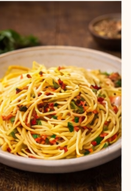
43. Knoblauch-Kartoffel-Pfanne mit Chili und Ei43. Patelnia ziemniaczana z czosnkiem, chili i jajkiem
PfannengerichteDania z patelni1 Person1 osoba
ZutatenSkładniki
500 g Kartoffeln500 g ziemniaków
3–4 Knoblauchzehen3–4 ząbki czosnku
Chili oder Sambal Oelek nach Geschmackchili lub sambal oelek do smaku
2 Eier2 jajka
Öl oder Butterschmalzolej lub smalec klarowany
Salzsól
Pfefferpieprz
Zeitplan / TimingCzas / plan
Gesamtzeit: 25–30 MinutenŁączny czas: 25–30 minut
Vorbereitung: 10 MinutenPrzygotowanie: 10 minut
Pfannenzeit: 15–20 MinutenSmażenie: 15–20 minut
TippsWskazówki
Vorgekochte Kartoffeln braten deutlich besser an.Podgotowane ziemniaki dużo lepiej się przyrumieniają.
Knoblauch erst später zugeben, damit er nicht verbrennt.Czosnek dodaj później, żeby się nie przypalił.
Die Eier können als Spiegelei oder leicht verrührt darübergegeben werden.Jajka można podać jako sadzone albo lekko rozmieszane na patelni.
ZubereitungPrzygotowanie
Kartoffeln in Salzwasser vorkochen, abkühlen lassen und in Scheiben oder Würfel schneiden.Podgotować ziemniaki w osolonej wodzie, ostudzić i pokroić w plasterki albo kostkę.
Öl oder Butterschmalz in einer Pfanne erhitzen und die Kartoffeln goldbraun anbraten.Rozgrzać na patelni olej lub smalec klarowany i obsmażyć ziemniaki na złoty kolor.
Knoblauch fein hacken und zusammen mit Chili oder Sambal Oelek zugeben.Drobno posiekać czosnek i dodać go razem z chili lub sambal oelek.
Alles kurz weiterbraten, bis der Knoblauch duftet.Smażyć jeszcze chwilę, aż czosnek zacznie pachnieć.
Die Eier über die Kartoffeln geben und bei mittlerer Hitze stocken lassen.Wbić jajka na ziemniaki i pozostawić na średnim ogniu do ścięcia.
Mit Salz und Pfeffer abschmecken und direkt servieren.Doprawić solą i pieprzem, a następnie od razu podawać.
BewertungOcena
8/108/10
44. Cremige Parmesan-Pasta ohne Sahne44. Kremowy makaron z parmezanem bez śmietany
NudelgerichteDania z makaronem1 Person1 osoba
ZutatenSkładniki
120–150 g Pasta120–150 g makaronu
30–40 g Parmesan30–40 g parmezanu
1 EL Butter1 łyżka masła
etwas Nudelwassertrochę wody z gotowania makaronu
Salzsól
Pfefferpieprz
Zeitplan / TimingCzas / plan
Gesamtzeit: ca. 15 MinutenŁączny czas: ok. 15 minut
Vorbereitung: 5 MinutenPrzygotowanie: 5 minut
Kochzeit: 10 MinutenGotowanie: 10 minut
TippsWskazówki
Der Parmesan sollte fein gerieben sein, damit die Sauce glatt wird.Parmezan powinien być drobno starty, wtedy sos będzie gładki.
Mit Nudelwasser lässt sich die Konsistenz steuern.Konsystencję sosu reguluje się wodą z makaronu.
Nicht zu heiß arbeiten, sonst klumpt der Käse.Nie podgrzewaj zbyt mocno, bo ser zacznie się zbrylać.
ZubereitungPrzygotowanie
Pasta in reichlich Salzwasser al dente kochen.Ugotować makaron al dente w osolonej wodzie.
Etwas Nudelwasser aufheben.Zachować trochę wody z gotowania.
Butter in einer Pfanne schmelzen und 2–3 EL Nudelwasser zugeben.Roztopić masło na patelni i dodać 2–3 łyżki wody z makaronu.
Die Pasta in die Pfanne geben und kurz durchschwenken.Dodać makaron na patelnię i krótko wymieszać.
Den fein geriebenen Parmesan nach und nach unterrühren, bis eine cremige Sauce entsteht.Stopniowo dodawać drobno starty parmezan, aż powstanie kremowy sos.
Mit Pfeffer abschmecken und sofort servieren.Doprawić pieprzem i od razu podawać.
BewertungOcena
8/108/10
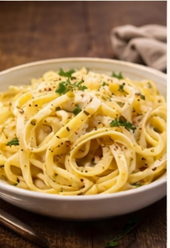
45. Cordon Bleu mit Nasi Goreng45. Cordon Bleu z nasi goreng
Airfryer / PfannengerichteAirfryer / dania z patelni1 Person1 osoba
ZutatenSkładniki
1 Cordon Bleu1 cordon bleu
150 g gekochter Reis150 g ugotowanego ryżu
1 Ei1 jajko
Gemüse nach Wahlwarzywa według uznania
Sweet Chili Saucesos sweet chili
etwas Ölodrobina oleju
Salzsól
Pfefferpieprz
Zeitplan / TimingCzas / plan
Gesamtzeit: ca. 25 MinutenŁączny czas: ok. 25 minut
Airfryer: ca. 12–15 MinutenAirFryer: ok. 12–15 minut
Pfanne: ca. 10 MinutenPatelnia: ok. 10 minut
TippsWskazówki
Am besten eignet sich bereits gekochter, abgekühlter Reis.Najlepiej sprawdza się wcześniej ugotowany i schłodzony ryż.
Das Gemüse kann je nach Vorrat variiert werden.Warzywa można dobrać do tego, co akurat jest w domu.
Sweet Chili Sauce erst beim Servieren dazugeben, damit alles knusprig bleibt.Sos sweet chili najlepiej dodać dopiero przy podaniu, aby panierka pozostała chrupiąca.
ZubereitungPrzygotowanie
Cordon Bleu nach Packungsangabe im Airfryer garen, bis es goldbraun und knusprig ist.Przygotować cordon bleu w AirFryerze zgodnie z instrukcją na opakowaniu, aż będzie złociste i chrupiące.
Währenddessen etwas Öl in einer Pfanne erhitzen.W międzyczasie rozgrzać odrobinę oleju na patelni.
Gekochten Reis mit Ei und Gemüse in die Pfanne geben und kräftig anbraten.Dodać ugotowany ryż, jajko i warzywa, a następnie wszystko mocno podsmażyć.
Mit Salz und Pfeffer würzen und alles gut vermengen.Doprawić solą i pieprzem oraz dokładnie wymieszać.
Das fertige Cordon Bleu zusammen mit dem Nasi Goreng anrichten.Podawać gotowe cordon bleu razem z nasi goreng.
Mit Sweet Chili Sauce servieren.Na końcu dodać sos sweet chili.
BewertungOcena
8/108/10
46. Smashed Burger mit Ofenkartoffeln & Sour-Cream-Dip46. Burger smashed z pieczonymi ziemniakami i dipem śmietanowym
Pfannengerichte / BBQDania z patelni / BBQ2–3 Personen2–3 osoby
2 Leitern Spare Ribs (ca. 1,6–2 kg)2 paski żeberek wieprzowych (ok. 1,6–2 kg)
2 TL feines Espresso- oder Kaffeepulver2 łyżeczki drobno mielonego espresso lub kawy
2 EL Paprikapulver edelsüß2 łyżki słodkiej papryki
1 EL brauner Zucker1 łyżka brązowego cukru
1 TL Salz1 łyżeczka soli
1 TL schwarzer Pfeffer1 łyżeczka czarnego pieprzu
1 TL Knoblauchpulver1 łyżeczka czosnku w proszku
1 TL Zwiebelpulver1 łyżeczka cebuli w proszku
1/2 TL Chili oder Cayennepfeffer nach Geschmack1/2 łyżeczki chili lub pieprzu cayenne do smaku
1 EL Öl1 łyżka oleju
optional: 3–4 EL BBQ-Sauce für das Finishopcjonalnie: 3–4 łyżki sosu BBQ do wykończenia
Zeitplan / TimingCzas / plan
Vorbereitung: 15 Minutenprzygotowanie: 15 min
Marinieren: mindestens 2 Stunden, besser über Nachtmarynowanie: minimum 2 godziny, najlepiej całą noc
Grillzeit: ca. 2,5–3 Stundenczas grillowania: ok. 2,5–3 godziny
Gesamt aktiv: ca. 30 Minutenaktywny czas pracy: ok. 30 min
TippsWskazówki
Kaffee sollte nur dezent eingesetzt werden – er sorgt für Tiefe, ohne vordergründig nach Kaffee zu schmecken.Kawy nie dawaj za dużo – ma dodać głębi smaku, ale nie dominować.
Für deinen Pit Boss passen Hickory-Pellets besonders gut dazu.Do tego przepisu bardzo dobrze pasują pelletki hickory.
Als Beilage passen Coleslaw, Maiskolben oder Baguette sehr gut.Świetnie pasuje coleslaw, kukurydza z grilla albo bagietka.
ZubereitungPrzygotowanie
Die Silberhaut auf der Knochenseite der Ribs abziehen. Das macht die Ribs zarter und der Rub kann besser einziehen.Usunąć cienką błonę od strony kości. Dzięki temu żeberka będą delikatniejsze, a przyprawy lepiej wnikną w mięso.
Espresso, Paprika, Zucker, Salz, Pfeffer, Knoblauchpulver, Zwiebelpulver und Chili mischen. Die Ribs leicht mit Öl einreiben und anschließend rundum mit dem Rub würzen.Wymieszać espresso, paprykę, cukier, sól, pieprz, czosnek w proszku, cebulę w proszku i chili. Żeberka lekko natrzeć olejem, a następnie dokładnie obsypać mieszanką przypraw.
Mindestens 2 Stunden, besser über Nacht, im Kühlschrank ziehen lassen.Odstawić do lodówki na co najmniej 2 godziny, a najlepiej na całą noc.
Den Grill oder Smoker auf indirekte Hitze bei etwa 110–120 °C vorbereiten. Die Ribs mit der Knochenseite nach unten auflegen.Przygotować grill lub smoker do grillowania pośredniego w temperaturze około 110–120 °C. Ułożyć żeberka stroną z kośćmi do dołu.
Die Ribs langsam 2,5 bis 3 Stunden garen, bis das Fleisch zart wird und sich leicht vom Knochen zurückzieht.Grillować powoli przez 2,5 do 3 godzin, aż mięso będzie miękkie i zacznie lekko odchodzić od kości.
Wer mag, bestreicht die Ribs in den letzten 15 Minuten dünn mit BBQ-Sauce. Danach kurz über direkter Hitze oder mit höherer Temperatur karamellisieren lassen.Jeśli chcesz, posmaruj żeberka cienką warstwą sosu BBQ w ostatnich 15 minutach. Następnie krótko skarmelizuj przy wyższej temperaturze.
Vor dem Anschneiden 5–10 Minuten ruhen lassen und dann in einzelne Stücke schneiden.Przed krojeniem odstawić na 5–10 minut, a potem podzielić na porcje.
BewertungOcena
9,5 / 10 – kräftig, rauchig und perfekt für einen langen Grillnachmittag.9,5 / 10 – wyraziste, lekko dymne i idealne na dłuższe grillowanie.
55. Gegrillter Halloumi mit Kräutern und Olivenöl55. Grillowany halloumi z ziołami i oliwą
1 kleine Knoblauchzehe, fein gerieben1 mały ząbek czosnku, drobno starty
1 TL getrockneter Oregano oder Thymian1 łyżeczka suszonego oregano lub tymianku
frisch gemahlener Pfefferświeżo mielony pieprz
optional: etwas Honig für eine milde süß-salzige Varianteopcjonalnie: odrobina miodu do wersji lekko słodko-słonej
Zeitplan / TimingCzas / plan
Vorbereitung: 10 Minutenprzygotowanie: 10 min
Kurze Marinierzeit: 10–15 Minutenkrótkie marynowanie: 10–15 min
Grillzeit: 4–6 Minutenczas grillowania: 4–6 min
Gesamt: ca. 20 Minutenłącznie: ok. 20 min
TippsWskazówki
Halloumi immer heiß servieren – dann ist er außen knusprig und innen weich.Halloumi najlepiej smakuje podany od razu po zdjęciu z grilla – wtedy jest chrupiący z zewnątrz i miękki w środku.
Sehr gut mit Tomaten, Rucola oder gegrilltem Gemüse kombinierbar.Świetnie pasuje do pomidorów, rukoli albo grillowanych warzyw.
Nicht zu lange grillen, sonst wird er trocken und zäh.Nie grilluj go zbyt długo, bo stanie się suchy i gumowaty.
ZubereitungPrzygotowanie
Halloumi in etwa 1 bis 1,5 cm dicke Scheiben schneiden und trocken tupfen.Pokroić halloumi na plastry o grubości około 1 do 1,5 cm i osuszyć papierowym ręcznikiem.
Olivenöl, Zitronensaft, Knoblauch, Kräuter und etwas Pfeffer verrühren.Wymieszać oliwę, sok z cytryny, czosnek, zioła i odrobinę pieprzu.
Die Halloumi-Scheiben damit leicht einpinseln und kurz ziehen lassen – 10 bis 15 Minuten reichen völlig aus.Lekko posmarować tą marynatą plastry halloumi i odstawić na 10–15 minut.
Den Grill gut vorheizen. Halloumi bei mittlerer bis höherer Hitze pro Seite 2–3 Minuten grillen, bis schöne Grillstreifen entstehen.Dobrze rozgrzać grill. Grillować halloumi na średnim lub dość mocnym ogniu po 2–3 minuty z każdej strony, aż pojawią się wyraźne paski.
Direkt servieren und nach Wunsch mit einem Hauch Honig oder extra Kräutern verfeinern.Podawać od razu, opcjonalnie skropione odrobiną miodu lub posypane dodatkowymi ziołami.
BewertungOcena
8,8 / 10 – simpel, schnell und eine starke vegetarische Grillbeilage.8,8 / 10 – prosty, szybki i bardzo dobry wegetariański dodatek z grilla.
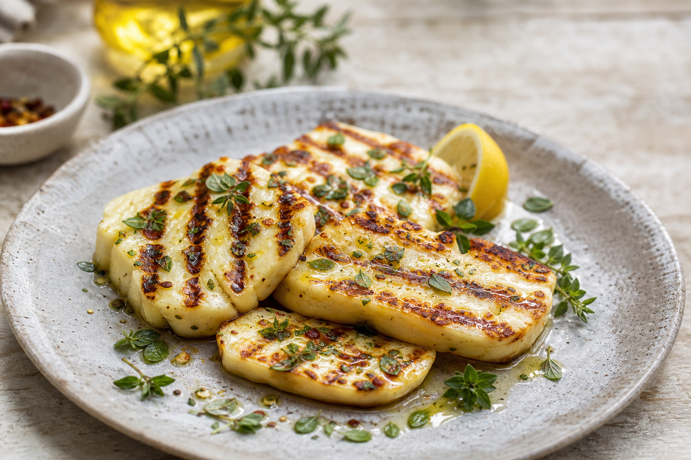
56. Gemüsespieße vom Grill56. Warzywne szaszłyki z grilla
Holz- oder Metallspießepatyczki lub metalowe szpikulce
Zeitplan / TimingCzas / plan
Vorbereitung: 15 Minutenprzygotowanie: 15 min
Marinieren: 15–20 Minutenmarynowanie: 15–20 min
Grillzeit: 8–12 Minutenczas grillowania: 8–12 min
Gesamt: ca. 35 Minutenłącznie: ok. 35 min
TippsWskazówki
Zucchini nicht zu dünn schneiden, sonst wird sie zu weich und rutscht schnell vom Spieß.Nie kroj cukinii zbyt cienko, bo szybko zrobi się zbyt miękka i może spadać ze szpikulca.
Die Marinade passt auch sehr gut für Grillgemüse aus der Schale oder Pfanne.Ta marynata świetnie nadaje się także do warzyw grillowanych w misce lub na tacke.
Wer mag, kann noch Halloumiwürfel oder kleine Cherrytomaten ergänzen.Jeśli chcesz, możesz dodać kostki halloumi albo małe pomidorki koktajlowe.
ZubereitungPrzygotowanie
Wenn Holzspieße verwendet werden, diese zuerst mindestens 20 Minuten in Wasser einweichen.Jeśli używasz drewnianych patyczków, namocz je wcześniej przez co najmniej 20 minut w wodzie.
Paprika, Zucchini und Zwiebel in grobe, möglichst gleich große Stücke schneiden. Champignons nur putzen und größere halbieren.Paprykę, cukinię i cebulę pokroić na większe, możliwie równe kawałki. Pieczarki tylko oczyścić, a większe przekroić na pół.
Olivenöl mit fein gehacktem Knoblauch, Zitronensaft, Paprikapulver, Salz und Pfeffer verrühren.Wymieszać oliwę z drobno posiekanym czosnkiem, sokiem z cytryny, papryką, solą i pieprzem.
Das Gemüse mit der Marinade mischen und 15–20 Minuten ziehen lassen.Połączyć warzywa z marynatą i odstawić na 15–20 minut.
Das Gemüse bunt gemischt auf die Spieße stecken.Nabić warzywa na szaszłyki, mieszając kolory i rodzaje warzyw.
Die Spieße bei mittlerer Hitze rundherum 8–12 Minuten grillen, dabei immer wieder wenden, bis das Gemüse weich ist und leichte Röstaromen hat.Grillować na średnim ogniu przez 8–12 minut, regularnie obracając, aż warzywa zmiękną i lekko się przyrumienią.
BewertungOcena
8,7 / 10 – unkompliziert, bunt und immer passend zum Grillabend.8,7 / 10 – proste, kolorowe i zawsze pasujące do grilla.
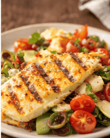
57. Gefüllte Portobello-Pilze vom Grill57. Faszerowane pieczarki portobello z grilla
1 EL gehackte Petersilie oder Kräuter1 łyżka posiekanej pietruszki lub ziół
30 g geriebener Käse oder Parmesan optional30 g startego sera lub parmezanu opcjonalnie
Salzsól
Pfefferpieprz
Zeitplan / TimingCzas / plan
Vorbereitung: 15 Minutenprzygotowanie: 15 min
Grillzeit: 10–15 Minutenczas grillowania: 10–15 min
Gesamt: ca. 25–30 Minutenłącznie: ok. 25–30 min
TippsWskazówki
Portobellos verlieren beim Grillen Flüssigkeit – deshalb nicht zu stark salzen.Portobello podczas grillowania puszczają trochę płynu, dlatego nie sol ich zbyt mocno na początku.
Mit etwas Parmesan obendrauf wird die Füllung noch herzhafter.Z dodatkiem parmezanu farsz będzie jeszcze bardziej wyrazisty.
Auch im Ofen bei etwa 190 °C sehr gut umsetzbar.Przepis można też bardzo dobrze zrobić w piekarniku w około 190 °C.
ZubereitungPrzygotowanie
Die Pilze vorsichtig putzen, die Stiele entfernen und die Unterseite leicht säubern.Delikatnie oczyścić grzyby, usunąć trzonki i lekko oczyścić spód kapeluszy.
Tomaten klein würfeln und mit Frischkäse, Knoblauch, Kräutern, Salz, Pfeffer und etwas Olivenöl verrühren.Pokroić pomidory w małą kostkę i wymieszać z serkiem śmietankowym, czosnkiem, ziołami, solą, pieprzem i odrobiną oliwy.
Die Portobellos mit der Füllung großzügig befüllen. Wer mag, streut etwas geriebenen Käse darüber.Napełnić portobello farszem. Jeśli chcesz, posypać wierzch tartym serem.
Die Pilze bei indirekter bis mittlerer Hitze 10–15 Minuten grillen, bis sie weich sind und die Füllung heiß und leicht gebräunt ist.Grillować przy pośrednim lub średnim ogniu przez 10–15 minut, aż grzyby zmiękną, a farsz będzie gorący i lekko zarumieniony.
Direkt servieren – als Beilage oder zusammen mit Baguette auch als leichte Hauptmahlzeit.Podawać od razu – jako dodatek lub z bagietką jako lekkie danie główne.
BewertungOcena
8,9 / 10 – saftig, würzig und eine richtig gute vegetarische Grillidee.8,9 / 10 – soczyste, aromatyczne i naprawdę świetne wegetariańskie danie z grilla.
58. Grüner Spargel vom Grill mit Zitronenbutter58. Zielone szparagi z grilla z masłem cytrynowym
optional: etwas Knoblauch oder frisch geriebene Zitronenschaleopcjonalnie: odrobina czosnku lub świeżo startej skórki z cytryny
Zeitplan / TimingCzas / plan
Vorbereitung: 10 Minutenprzygotowanie: 10 min
Grillzeit: 5–8 Minutenczas grillowania: 5–8 min
Gesamt: ca. 15 Minutenłącznie: ok. 15 min
TippsWskazówki
Nicht zu lange grillen – grüner Spargel soll noch Biss haben.Nie grilluj zbyt długo – zielone szparagi powinny pozostać lekko chrupiące.
Passt hervorragend zu Fleisch, Halloumi oder einfach mit Brot.Świetnie pasują do mięsa, halloumi albo po prostu z pieczywem.
Wer mag, ergänzt am Ende etwas geriebenen Parmesan.Na koniec możesz dodać odrobinę startego parmezanu.
ZubereitungPrzygotowanie
Die holzigen Enden des Spargels abbrechen oder abschneiden.Odłamać lub odciąć zdrewniałe końcówki szparagów.
Den Spargel mit Olivenöl, etwas Salz und Pfeffer vermengen.Wymieszać szparagi z oliwą, odrobiną soli i pieprzu.
Bei mittlerer bis höherer Hitze 5–8 Minuten grillen, dabei immer wieder wenden, bis er bissfest ist und leichte Grillspuren hat.Grillować na średnim lub dość mocnym ogniu przez 5–8 minut, regularnie obracając, aż będą al dente i lekko przypieczone.
Parallel die Butter schmelzen und mit Zitronensaft sowie nach Wunsch etwas Zitronenschale verrühren.W międzyczasie roztopić masło i wymieszać je z sokiem z cytryny, a opcjonalnie także ze skórką cytrynową.
Den heißen Spargel mit der Zitronenbutter beträufeln und sofort servieren.Polać gorące szparagi masłem cytrynowym i od razu podawać.
BewertungOcena
9,0 / 10 – schnell, frisch und perfekt für die Sommerküche.9,0 / 10 – szybkie, świeże i idealne do letniego grillowania.
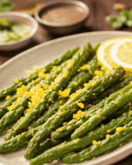
59. Süßkartoffel-Pommes vom Grill59. Frytki z batatów z grilla
1/2 TL Knoblauchpulver optional1/2 łyżeczki czosnku w proszku opcjonalnie
Meersalzsól morska
Pfefferpieprz
Zeitplan / TimingCzas / plan
Vorbereitung: 10–15 Minutenprzygotowanie: 10–15 min
Grillzeit: 20–25 Minutenczas grillowania: 20–25 min
Gesamt: ca. 35–40 Minutenłącznie: ok. 35–40 min
TippsWskazówki
Süßkartoffeln werden auf dem Grill nicht ganz so knusprig wie im Airfryer oder Ofen, schmecken dafür aber schön rauchig.Bataty z grilla nie będą aż tak chrupiące jak z Airfryera czy piekarnika, ale zyskają lekko dymny smak.
In einer Grillschale gelingen sie deutlich entspannter.Na tacce grillowej wychodzą znacznie łatwiej i wygodniej.
Sehr gut mit Sour Cream, Aioli oder BBQ-Dip.Świetnie pasują z sour cream, aioli albo dipem BBQ.
ZubereitungPrzygotowanie
Die Süßkartoffeln schälen und in gleichmäßige Pommes schneiden.Obrać bataty i pokroić je w równe słupki przypominające frytki.
Mit Olivenöl, Paprikapulver, optional Knoblauchpulver und etwas Pfeffer vermengen.Wymieszać z oliwą, papryką, opcjonalnie czosnkiem w proszku i odrobiną pieprzu.
Die Pommes am besten in einer Grillschale oder auf einer Plancha verteilen, damit sie nicht durch den Rost fallen.Rozłożyć frytki najlepiej na tacce grillowej albo na planchy, żeby nie spadły przez ruszt.
Bei mittlerer Hitze 20–25 Minuten grillen oder im indirekten Bereich garen. Zwischendurch mehrmals wenden.Grillować na średnim ogniu przez 20–25 minut lub piec w strefie pośredniej. W międzyczasie kilka razy przewrócić.
Erst zum Schluss mit Meersalz würzen und sofort servieren.Posolić solą morską dopiero na końcu i podawać od razu.
BewertungOcena
8,6 / 10 – unkompliziert, leicht süßlich und ideal als Grillbeilage.8,6 / 10 – proste, lekko słodkie i bardzo dobre jako dodatek z grilla.
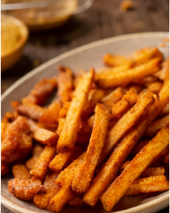
60. Melonen-Feta-Salat mit Minze60. Sałatka z arbuza, fety i mięty
Beilagen / SalateDodatki / sałatki2–3 Personen2–3 osoby
ZutatenSkładniki
600 g Wassermelone600 g arbuza
150 g Feta150 g fety
1 kleine Hand frische Minzblätter1 mała garść świeżej mięty
1 Limette1 limonka
2 EL Olivenöl2 łyżki oliwy
frisch gemahlener Pfefferświeżo mielony pieprz
Zeitplan / TimingCzas / plan
Vorbereitung: 10–15 Minutenprzygotowanie: 10–15 min
Kühlzeit optional: 10 Minutenopcjonalne chłodzenie: 10 min
Gesamt: ca. 15 Minutenłącznie: ok. 15 min
TippsWskazówki
Der Salat sollte frisch serviert werden, damit die Melone knackig bleibt.Sałatkę najlepiej podawać od razu po przygotowaniu, żeby arbuz pozostał jędrny.
Mit etwas Gurke oder roten Zwiebeln lässt er sich leicht erweitern.Można ją łatwo rozszerzyć o ogórka albo cienko pokrojoną czerwoną cebulę.
Perfekt zu Grillfleisch, Halloumi oder einfach pur als Sommergericht.Idealnie pasuje do grillowanego mięsa, halloumi albo jako samodzielne letnie danie.
ZubereitungPrzygotowanie
Die Wassermelone in mundgerechte Würfel schneiden und eventuell vorhandene Kerne entfernen.Pokroić arbuza w kawałki na jeden kęs i usunąć ewentualne pestki.
Den Feta grob zerbröseln oder in kleine Stücke schneiden.Pokruszyć fetę albo pokroić ją na małe kawałki.
Minzblätter grob hacken.Grubo posiekać liście mięty.
Aus Limettensaft und Olivenöl ein schnelles Dressing rühren.Wymieszać szybki dressing z soku z limonki i oliwy.
Melone, Feta und Minze locker mischen, mit dem Dressing beträufeln und zum Schluss mit etwas Pfeffer verfeinern.Delikatnie połączyć arbuza, fetę i miętę, polać dressingiem i na końcu doprawić świeżo mielonym pieprzem.
Gut gekühlt servieren – besonders an warmen Tagen schmeckt der Salat am besten.Podawać dobrze schłodzone – szczególnie w ciepłe dni smakuje najlepiej.
BewertungOcena
9,1 / 10 – frisch, sommerlich und ein starker Kontrast zu deftigen Grillgerichten.9,1 / 10 – świeża, letnia i świetnie przełamująca bardziej treściwe dania z grilla.
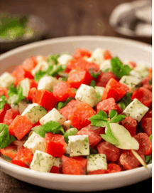
77. Grüner Spargel vom Grill – Basic & Upgrade77. Zielone szparagi z grilla – wersja basic i upgrade
Grill & BBQ / Spargel & SaisonkücheGrill & BBQ / szparagi i kuchnia sezonowa2–3 Personen2–3 osoby
ZutatenSkładniki
500 g grüner Spargel500 g zielonych szparagów
2 EL Olivenöl2 łyżki oliwy
1/2 Zitrone1/2 cytryny
Salzsól
Pfefferpieprz
optional: 30 g Parmesanopcjonalnie: 30 g parmezanu
optional: 1 kleine Knoblauchzeheopcjonalnie: 1 mały ząbek czosnku
Zeitplan / TimingCzas / plan
Vorbereitung: 10 Minutenprzygotowanie: 10 min
Grillzeit: 5–8 Minutenczas grillowania: 5–8 min
Gesamt: ca. 15 Minutenłącznie: ok. 15 min
TippsWskazówki
Nicht zu lange grillen – grüner Spargel soll noch etwas Biss haben.Nie grilluj zbyt długo – zielone szparagi powinny zachować lekki chrup.
Mit Parmesan, Bacon oder etwas Zitronenabrieb lässt sich das Rezept leicht aufwerten.Przepis łatwo podkręcić parmezanem, boczkiem albo odrobiną skórki cytrynowej.
Perfekt als schnelle Beilage zu Fleisch, Halloumi oder Baguette.Świetny szybki dodatek do mięsa, halloumi albo bagietki.
ZubereitungPrzygotowanie
Die holzigen Enden des Spargels abbrechen oder abschneiden. Grünen Spargel musst du in der Regel nicht schälen.Odłamać lub odciąć zdrewniałe końcówki szparagów. Zielonych szparagów zazwyczaj nie trzeba obierać.
Den Spargel mit Olivenöl, etwas Salz und Pfeffer vermengen. Wer mag, reibt noch ganz wenig Knoblauch dazu.Wymieszać szparagi z oliwą, odrobiną soli i pieprzu. Jeśli chcesz, dodaj też bardzo mało startego czosnku.
Den Grill auf mittlere Hitze bringen und den Spargel direkt auf den Rost oder in eine Grillpfanne legen.Rozgrzać grill do średniej temperatury i ułożyć szparagi bezpośrednio na ruszcie albo na patelni grillowej.
Den Spargel 5–8 Minuten grillen und dabei regelmäßig wenden, bis er leichte Grillspuren hat und noch bissfest ist.Grillować przez 5–8 minut, regularnie obracając, aż pojawią się lekkie ślady przypieczenia, a szparagi pozostaną lekko chrupiące.
Direkt nach dem Grillen mit Zitronensaft verfeinern. Für die Upgrade-Version etwas Parmesan darüberreiben oder den Spargel mit Bacon umwickeln und dann grillen.Zaraz po grillowaniu skropić sokiem z cytryny. W wersji upgrade można dodać starty parmezan albo owinąć szparagi boczkiem przed grillowaniem.
BewertungOcena
9,2 / 10 – schnell, frisch und ideal für den Grillabend.9,2 / 10 – szybkie, świeże i idealne na grillowy wieczór.
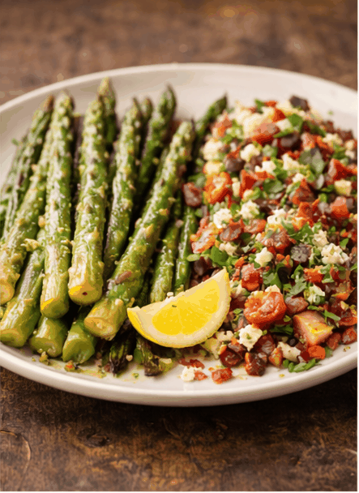
78. Weißer Spargel in Butter-Zitronen-Folie78. Białe szparagi w folii z masłem i cytryną
Grill & BBQ / Spargel & SaisonkücheGrill & BBQ / szparagi i kuchnia sezonowa2–3 Personen2–3 osoby
ZutatenSkładniki
500–800 g weißer Spargel500–800 g białych szparagów
40 g Butter40 g masła
1 TL Zucker1 łyżeczka cukru
1/2 Zitrone1/2 cytryny
Salzsól
optional: etwas frisch gehackte Petersilieopcjonalnie: trochę świeżo posiekanej pietruszki
Zeitplan / TimingCzas / plan
Vorbereitung: 10–15 Minutenprzygotowanie: 10–15 min
Grillzeit: 15–20 Minutenczas grillowania: 15–20 min
Gesamt: ca. 30 Minutenłącznie: ok. 30 min
TippsWskazówki
Der Zucker rundet den Geschmack ab und nimmt leichte Bitterkeit.Cukier delikatnie zaokrągla smak i niweluje lekką goryczkę.
Das Folienpaket kann entspannt parallel zu Fleisch oder Würstchen auf dem Grill laufen.Paczka z folii może spokojnie grillować się równolegle obok mięsa albo kiełbasek.
Auch im Ofen sehr gut machbar.Przepis bardzo dobrze wychodzi także w piekarniku.
ZubereitungPrzygotowanie
Den weißen Spargel gründlich schälen und die Enden abschneiden. Das ist wichtig, damit er später nicht fasrig bleibt.Dokładnie obrać białe szparagi i odciąć końcówki. To ważne, żeby po przygotowaniu nie były włókniste.
Ein großes Stück Alufolie vorbereiten und den Spargel mittig darauflegen.Przygotować duży kawałek folii aluminiowej i ułożyć na środku szparagi.
Butter in kleinen Stücken darauf verteilen, mit Zucker, etwas Salz und Zitronensaft würzen.Rozłożyć na nich kawałki masła, doprawić cukrem, odrobiną soli i sokiem z cytryny.
Die Folie dicht verschließen, sodass ein gut geschlossenes Paket entsteht.Szczelnie zamknąć folię, tak aby powstała dobrze domknięta paczuszka.
Das Paket bei indirekter Hitze 15–20 Minuten grillen, bis der Spargel weich, aber nicht zu weich ist.Grillować w strefie pośredniej przez 15–20 minut, aż szparagi będą miękkie, ale nie rozgotowane.
Vorsichtig öffnen, eventuell mit etwas Petersilie bestreuen und direkt servieren.Ostrożnie otworzyć, opcjonalnie posypać pietruszką i od razu podawać.
BewertungOcena
9,0 / 10 – saftig, aromatisch und sehr unkompliziert.9,0 / 10 – soczyste, aromatyczne i bardzo proste.
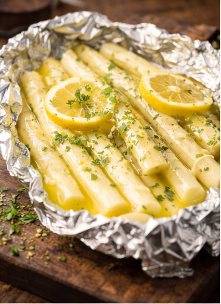
79. Spargel vom Grill mit Parmesan und Zitrone79. Szparagi z grilla z parmezanem i cytryną
Grill & BBQ / Spargel & SaisonkücheGrill & BBQ / szparagi i kuchnia sezonowa2–3 Personen2–3 osoby
ZutatenSkładniki
500 g grüner oder weißer Spargel500 g zielonych lub białych szparagów
Parmesan immer frisch reiben – das macht geschmacklich einen großen Unterschied.Parmezan najlepiej ścierać świeżo – smak jest wtedy wyraźnie lepszy.
Besonders gut als Vorspeise oder feine Grillbeilage.Bardzo dobry jako przystawka albo bardziej elegancki dodatek z grilla.
Mit etwas Knoblauchöl wird es noch kräftiger.Z odrobiną oleju czosnkowego smak będzie jeszcze mocniejszy.
ZubereitungPrzygotowanie
Grünen Spargel nur an den Enden kürzen, weißen Spargel zusätzlich vollständig schälen.Zielonym szparagom odciąć tylko końcówki, a białe dodatkowo dokładnie obrać.
Den Spargel mit Olivenöl, Salz und Pfeffer vermengen.Wymieszać szparagi z oliwą, solą i pieprzem.
Bei mittlerer Hitze 6–10 Minuten grillen und dabei regelmäßig wenden.Grillować na średnim ogniu przez 6–10 minut, regularnie obracając.
Direkt nach dem Grillen mit Zitronensaft beträufeln und etwas Zitronenabrieb darübergeben, wenn du magst.Zaraz po grillowaniu skropić sokiem z cytryny i opcjonalnie dodać trochę skórki z cytryny.
Zum Schluss frisch geriebenen Parmesan darüberstreuen und sofort servieren.Na końcu posypać świeżo startym parmezanem i od razu podawać.
BewertungOcena
9,3 / 10 – einfach, elegant und richtig stark im Geschmack.9,3 / 10 – proste, eleganckie i bardzo wyraziste w smaku.
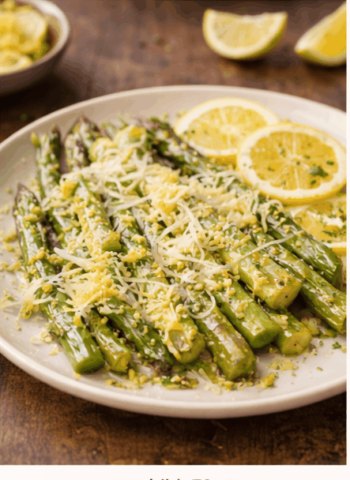
80. Grüner Spargel aus dem Airfryer80. Zielone szparagi z Airfryera
Airfryer / Spargel & SaisonkücheAirfryer / szparagi i kuchnia sezonowa2–3 Personen2–3 osoby
ZutatenSkładniki
500 g grüner Spargel500 g zielonych szparagów
1–2 EL Olivenöl1–2 łyżki oliwy
Salzsól
Pfefferpieprz
1/2 Zitrone1/2 cytryny
optional: 20–30 g Parmesanopcjonalnie: 20–30 g parmezanu
optional: 1 kleine Knoblauchzeheopcjonalnie: 1 mały ząbek czosnku
Zeitplan / TimingCzas / plan
Vorbereitung: 10 Minutenprzygotowanie: 10 min
Airfryer: 8–10 Minuten bei 180 °CAirfryer: 8–10 min w 180 °C
Gesamt: ca. 20 Minutenłącznie: ok. 20 min
TippsWskazówki
Nicht zu voll packen – sonst wird der Spargel eher weich als schön geröstet.Nie układaj szparagów zbyt ciasno – inaczej będą bardziej miękkie niż lekko przypieczone.
Mit Parmesan oder etwas Zitronenabrieb wird er noch besser.Z parmezanem albo odrobiną skórki cytrynowej smakują jeszcze lepiej.
Perfekt als schnelle Beilage aus der Cosori.Świetny szybki dodatek z Cosori.
ZubereitungPrzygotowanie
Die holzigen Enden des grünen Spargels abbrechen oder abschneiden. Grünen Spargel musst du nicht schälen.Odłamać lub odciąć zdrewniałe końcówki zielonych szparagów. Zielonych szparagów nie trzeba obierać.
Den Spargel mit Olivenöl, Salz und Pfeffer vermengen. Optional etwas fein geriebenen Knoblauch dazugeben.Wymieszać szparagi z oliwą, solą i pieprzem. Opcjonalnie dodać odrobinę drobno startego czosnku.
Den Airfryer auf 180 °C vorheizen, wenn dein Gerät das unterstützt.Rozgrzać Airfryera do 180 °C, jeśli urządzenie ma funkcję nagrzewania wstępnego.
Den Spargel locker in den Korb legen – nicht zu eng, damit die heiße Luft gut zirkulieren kann.Ułożyć szparagi luźno w koszu – nie za ciasno, aby gorące powietrze mogło dobrze krążyć.
Etwa 8–10 Minuten garen. Zwischendurch einmal kurz durchschütteln oder wenden.Piec około 8–10 minut. W połowie czasu lekko potrząsnąć koszem albo obrócić szparagi.
Zum Schluss mit Zitronensaft verfeinern und nach Wunsch mit Parmesan servieren.Na końcu skropić sokiem z cytryny i opcjonalnie posypać parmezanem.
BewertungOcena
9,1 / 10 – schnell, sauber und perfekt für den Alltag.9,1 / 10 – szybkie, wygodne i idealne na co dzień.
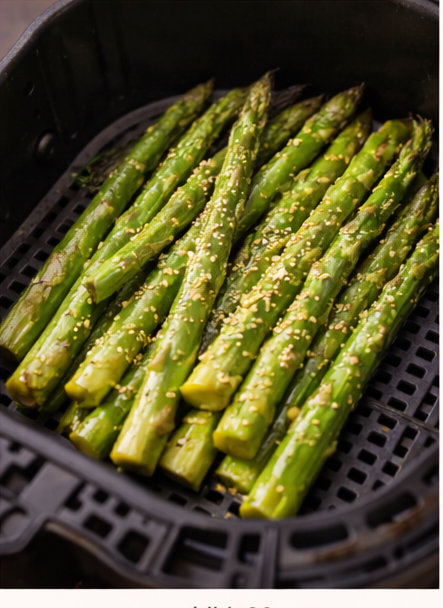
81. Afrikanischer Erdnusseintopf81. Afrykański gulasz z masłem orzechowym
Suppen / EintöpfeZupy / gulasze4 Personen4 osoby
ZutatenSkładniki
1/2 Weißkohl1/2 białej kapusty
2 Möhren2 marchewki
1 Zwiebel1 cebula
1 Paprikaschote1 papryka
1 kleine Dose Kidneybohnen1 mała puszka czerwonej fasoli
1 Dose Mais1 puszka kukurydzy
500 g passierte Tomaten500 g passaty pomidorowej
250 ml Gemüsebrühe250 ml bulionu warzywnego
4 EL Erdnussbutter4 łyżki masła orzechowego
1 EL Senf1 łyżka musztardy
1 EL Kreuzkümmel1 łyżka kminu rzymskiego
1 TL Thymian1 łyżeczka tymianku
1/2 TL Paprikapulver1/2 łyżeczki papryki
1–2 TL Cayennepfeffer nach Geschmack1–2 łyżeczki pieprzu cayenne do smaku
etwas Öl zum Anbratentrochę oleju do smażenia
Mangosaft nach Geschmacksok mango do smaku
Salz und Pfeffersól i pieprz
Zeitplan / TimingCzas / plan
Vorbereitung: ca. 20 Minutenprzygotowanie: ok. 20 min
Kochzeit: ca. 25 Minutengotowanie: ok. 25 min
Gesamt: ca. 45 Minutenłącznie: ok. 45 min
TippsWskazówki
Wenn du es milder magst, nimm zuerst nur 1 TL Cayennepfeffer und würze später nach.Jeśli wolisz łagodniejszą wersję, zacznij od 1 łyżeczki pieprzu cayenne i dopraw później.
Statt Mangosaft funktioniert auch etwas Orangensaft oder ein kleiner Spritzer Limette, aber Mango passt besonders gut zur Erdnussnote.Zamiast soku mango możesz użyć odrobiny soku pomarańczowego albo kilku kropel limonki, ale mango szczególnie dobrze pasuje do nuty orzechowej.
Der Eintopf schmeckt am nächsten Tag fast noch besser, weil die Gewürze dann stärker durchgezogen sind.Ten gulasz następnego dnia smakuje prawie jeszcze lepiej, bo przyprawy mają wtedy więcej czasu, żeby się przegryźć.
ZubereitungPrzygotowanie
Weißkohl, Möhren, Zwiebel und Paprika vorbereiten. Den Kohl in feine Streifen schneiden, die Möhren schälen und klein würfeln oder in halbe Scheiben schneiden. Zwiebel und Paprika ebenfalls klein schneiden.Przygotować kapustę, marchew, cebulę i paprykę. Kapustę pokroić w cienkie paski, marchew obrać i pokroić w kostkę albo półplasterki. Cebulę i paprykę również drobno pokroić.
Weißkohl und Möhren in wenig Wasser separat 5–8 Minuten vorkochen, damit sie später im Eintopf schön weich werden, aber noch Struktur behalten. Danach abgießen und beiseitestellen.Kapustę i marchew podgotować osobno przez 5–8 minut w niewielkiej ilości wody, aby później w gulaszu były miękkie, ale nadal miały strukturę. Następnie odcedzić i odstawić.
In einem großen Topf etwas Öl erhitzen und Zwiebel sowie Paprika 3–4 Minuten anschwitzen. Dann Kreuzkümmel, Cayennepfeffer und Senf dazugeben und ganz kurz mitrösten, damit die Gewürze ihr Aroma entfalten.W dużym garnku rozgrzać trochę oleju i podsmażyć cebulę oraz paprykę przez 3–4 minuty. Następnie dodać kmin rzymski, pieprz cayenne i musztardę i krótko podsmażyć, aby przyprawy oddały aromat.
Passierte Tomaten und Gemüsebrühe angießen und alles etwa 5 Minuten offen köcheln lassen.Wlać passatę pomidorową i bulion warzywny, a następnie gotować całość bez przykrycia około 5 minut.
Nun Thymian, Paprikapulver und Erdnussbutter einrühren. Die Sauce so lange rühren, bis sich die Erdnussbutter vollständig gelöst hat und der Eintopf schön cremig wird.Dodać tymianek, paprykę i masło orzechowe. Mieszać tak długo, aż masło orzechowe całkowicie się rozpuści i gulasz stanie się kremowy.
Kidneybohnen und Mais abgießen und zusammen mit dem vorgegarten Kohl und den Möhren in den Topf geben. Alles weitere 10–15 Minuten sanft köcheln lassen. Dabei immer wieder umrühren, weil der Eintopf durch die Erdnussbutter leicht am Boden ansetzen kann.Odcedzić fasolę i kukurydzę, a potem dodać je razem z podgotowaną kapustą i marchewką do garnka. Całość delikatnie gotować jeszcze 10–15 minut. Co jakiś czas mieszać, ponieważ przez masło orzechowe gulasz łatwo przywiera do dna.
Zum Schluss mit etwas Mangosaft, Salz, Pfeffer und nach Wunsch noch etwas Cayennepfeffer abschmecken. Der Mangosaft bringt eine fruchtige Süße hinein, die sehr gut mit der Erdnussnote harmoniert.Na końcu doprawić odrobiną soku mango, solą, pieprzem i – jeśli trzeba – dodatkowym pieprzem cayenne. Sok mango dodaje owocowej słodyczy, która bardzo dobrze pasuje do nuty orzechowej.
Heiß servieren. Dazu passen frisches Baguette, Fladenbrot oder – wenn gewünscht – auch Reis.Podawać gorące. Bardzo dobrze pasuje świeża bagietka, chlebek pita albo – jeśli chcesz – ryż.
BewertungOcena
9,0 / 10 – würzig, cremig und mal etwas anderes als ein klassischer Gemüseeintopf.9,0 / 10 – aromatyczny, kremowy i przyjemnie inny niż klasyczny gulasz warzywny.
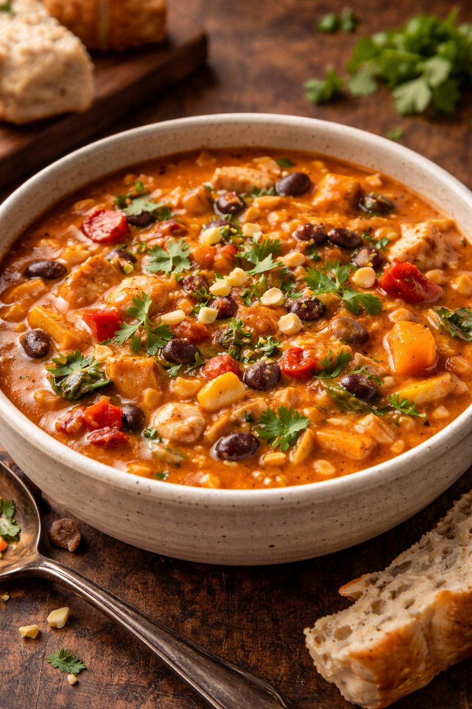
61. Shakshuka61. Szakszuka
Eiergerichte / PfannengerichteDania z jajek / dania z patelni2–3 Personen2–3 osoby
optional: 2 EL gehackte Petersilieopcjonalnie: 2 łyżki posiekanej pietruszki
optional: Brot zum Servierenopcjonalnie: pieczywo do podania
Zeitplan / TimingCzas / plan
Vorbereitung: 10 Minutenprzygotowanie: 10 min
Pfanne: 15–18 Minutenpatelnia: 15–18 min
Gesamt: ca. 25–30 Minutenłącznie: ok. 25–30 min
TippsWskazówki
Wer es würziger mag, gibt etwas Feta oder mehr Chili darüber.Jeśli chcesz ostrzejszej wersji, dodaj więcej chili albo trochę fety.
Am besten mit frischem Brot servieren.Najlepiej smakuje ze świeżym pieczywem.
Die Soße lässt sich gut vorbereiten; Eier erst kurz vor dem Essen hineingeben.Sos można przygotować wcześniej, a jajka dodać tuż przed podaniem.
ZubereitungPrzygotowanie
Paprika, Zwiebel und Knoblauch klein schneiden.Paprykę, cebulę i czosnek drobno pokroić.
Olivenöl in einer großen Pfanne erhitzen und Zwiebel sowie Paprika 4–5 Minuten anbraten.Rozgrzać oliwę na dużej patelni i smażyć cebulę z papryką przez 4–5 minut.
Knoblauch, Tomatenmark, Paprikapulver, Kreuzkümmel und optional Chiliflocken kurz mitrösten.Dodać czosnek, koncentrat pomidorowy, paprykę, kmin rzymski i opcjonalnie chili, a następnie krótko podsmażyć.
Stückige Tomaten zugeben, mit Salz und Pfeffer würzen und alles 10 Minuten leicht einkochen lassen.Dodać pomidory, doprawić solą i pieprzem i gotować około 10 minut, aż sos lekko zgęstnieje.
Mit einem Löffel 4 kleine Mulden in die Soße drücken und die Eier hineinschlagen.Łyżką zrobić w sosie 4 małe zagłębienia i wbić do nich jajka.
Pfanne abdecken und die Eier 5–7 Minuten stocken lassen, bis das Eiweiß fest ist.Przykryć patelnię i gotować 5–7 minut, aż białko się zetnie.
Mit Petersilie bestreuen und direkt mit Brot servieren.Posypać pietruszką i od razu podawać z pieczywem.
BewertungOcena
9 / 10 – unkompliziert, würzig und ideal für den Alltag.9 / 10 – proste, aromatyczne i bardzo dobre na co dzień.
62. Gefüllte Hähnchenbrust mit Frischkäse und Ofenkartoffeln62. Pierś z kurczaka faszerowana serkiem śmietankowym z pieczonymi ziemniakami
Ofengerichte / FleischgerichteDania z piekarnika / dania mięsne2–3 Personen2–3 osoby
ZutatenSkładniki
2 große Hähnchenbrustfilets2 duże filety z piersi kurczaka
150 g Frischkäse natur150 g serka śmietankowego naturalnego
1 kleine Knoblauchzehe, fein gerieben1 mały ząbek czosnku, drobno starty
1 EL gehackte Petersilie oder Schnittlauch1 łyżka posiekanej pietruszki lub szczypiorku
1 TL Rosmarin oder italienische Kräuter1 łyżeczka rozmarynu lub ziół włoskich
Salzsól
Pfefferpieprz
optional: 50 g geriebener Käse zum Überbackenopcjonalnie: 50 g tartego sera do zapieczenia
Zeitplan / TimingCzas / plan
Vorbereitung: 15 Minutenprzygotowanie: 15 min
Backzeit: 30–35 Minutenpieczenie: 30–35 min
Gesamt: ca. 45–50 Minutenłącznie: ok. 45–50 min
TippsWskazówki
Dazu passt ein kleiner Salat oder Kräuterquark.Dobrze pasuje mała sałata albo twarożek z ziołami.
Wer mag, kann getrocknete Tomaten klein gehackt in die Frischkäsefüllung geben.Do farszu można dodać drobno pokrojone suszone pomidory.
Hähnchen erst anschneiden, wenn es kurz geruht hat.Po upieczeniu warto dać mięsu chwilę odpocząć przed krojeniem.
ZubereitungPrzygotowanie
Backofen auf 200 °C Umluft vorheizen.Piekarnik nagrzać do 200 °C z termoobiegiem.
Kartoffeln waschen, in Spalten schneiden, mit Olivenöl, Rosmarin, Salz und Pfeffer mischen und auf ein Blech geben.Ziemniaki umyć, pokroić w łódeczki, wymieszać z oliwą, rozmarynem, solą i pieprzem, a następnie wyłożyć na blachę.
Hähnchenbrust seitlich tief einschneiden, sodass eine Tasche entsteht.W filetach z kurczaka naciąć z boku głęboką kieszeń.
Frischkäse mit Knoblauch, Kräutern, etwas Salz und Pfeffer verrühren und in die Hähnchenbrüste füllen.Serek wymieszać z czosnkiem, ziołami, solą i pieprzem, a następnie napełnić nim filety.
Hähnchen außen mit Öl und Paprikapulver einreiben und neben die Kartoffeln auf das Blech legen.Kurczaka z zewnątrz natrzeć olejem i papryką i ułożyć obok ziemniaków.
Alles 30–35 Minuten backen, bis die Kartoffeln goldbraun und das Hähnchen gar sind.Piec 30–35 minut, aż ziemniaki będą rumiane, a kurczak upieczony.
Optional in den letzten 5 Minuten etwas Käse über das Hähnchen geben.Opcjonalnie w ostatnich 5 minutach posypać kurczaka serem.
BewertungOcena
9 / 10 – alltagstauglich, saftig und sehr unkompliziert.9 / 10 – proste, soczyste i bardzo wygodne na co dzień.
63. Ratatouille mit Polenta63. Ratatouille z polentą
Pfannengerichte / GemüsegerichteDania z patelni / dania warzywne3–4 Personen3–4 osoby
30 g geriebener Parmesan, optional30 g tartego parmezanu, opcjonalnie
Salzsól
Pfefferpieprz
1 TL Kräuter der Provence1 łyżeczka ziół prowansalskich
Zeitplan / TimingCzas / plan
Vorbereitung: 15 Minutenprzygotowanie: 15 min
Pfanne und Topf: 20 Minutenpatelnia i garnek: 20 min
Gesamt: ca. 35 Minutenłącznie: ok. 35 min
TippsWskazówki
Am nächsten Tag schmeckt Ratatouille fast noch besser.Następnego dnia ratatouille smakuje jeszcze lepiej.
Wer es kräftiger mag, gibt etwas Feta oder geriebenen Käse darüber.Jeśli chcesz bardziej wyrazisty smak, dodaj fetę albo starty ser.
Polenta direkt nach dem Kochen servieren, dann ist sie am cremigsten.Polentę najlepiej podawać od razu po ugotowaniu, gdy jest najbardziej kremowa.
ZubereitungPrzygotowanie
Aubergine, Zucchini, Paprika, Zwiebel und Knoblauch in Stücke schneiden.Bakłażana, cukinię, paprykę, cebulę i czosnek pokroić na kawałki.
Olivenöl in einer großen Pfanne erhitzen und Zwiebel sowie Knoblauch kurz anschwitzen.Na dużej patelni rozgrzać oliwę i krótko zeszklić cebulę z czosnkiem.
Aubergine, Paprika und Zucchini zugeben und 6–8 Minuten anbraten.Dodać bakłażana, paprykę i cukinię i smażyć 6–8 minut.
Tomatenmark, stückige Tomaten und Kräuter der Provence einrühren und alles 15 Minuten köcheln lassen.Wmieszać koncentrat pomidorowy, pomidory i zioła prowansalskie, a następnie dusić 15 minut.
Für die Polenta Brühe aufkochen, Polenta einrieseln lassen und unter Rühren 4–5 Minuten garen.Bulion zagotować, wsypać polentę cienkim strumieniem i gotować 4–5 minut, cały czas mieszając.
Butter und optional Parmesan unterrühren.Dodać masło i opcjonalnie parmezan.
Ratatouille mit Salz und Pfeffer abschmecken und zusammen mit der Polenta servieren.Doprawić ratatouille solą i pieprzem i podawać razem z polentą.
BewertungOcena
8,5 / 10 – sommerlich, sättigend und einfach gemacht.8,5 / 10 – letnie, sycące i bardzo proste.
64. Marinierte Hähnchenspieße vom Grill64. Marynowane szaszłyki z kurczaka z grilla
700 g Hähnchenbrustfilet700 g filetu z piersi kurczaka
2 Paprika2 papryki
1 rote Zwiebel1 czerwona cebula
3 EL Öl3 łyżki oleju
2 EL Naturjoghurt2 łyżki jogurtu naturalnego
1 TL Paprikapulver1 łyżeczka słodkiej papryki
1/2 TL Knoblauchpulver oder 1 kleine Knoblauchzehe1/2 łyżeczki czosnku w proszku lub 1 mały ząbek czosnku
1 TL Zitronensaft1 łyżeczka soku z cytryny
Salzsól
Pfefferpieprz
Holz- oder Metallspießepatyczki lub metalowe szpikulce
Zeitplan / TimingCzas / plan
Vorbereitung: 15 Minutenprzygotowanie: 15 min
Marinieren: mindestens 30 Minutenmarynowanie: co najmniej 30 min
Grillzeit: 10–12 Minutengrillowanie: 10–12 min
Gesamt aktiv: ca. 30 Minuten plus Marinierzeitaktywnie: ok. 30 min plus marynowanie
TippsWskazówki
Wer mag, kann zusätzlich Zucchini auf die Spieße stecken.Można dodać także cukinię.
Holzspieße vorher in Wasser legen, damit sie nicht verbrennen.Drewniane patyczki warto wcześniej namoczyć w wodzie.
Dazu passen Kräuterquark, Fladenbrot oder ein Salat.Pasują do nich sos ziołowy, pieczywo lub sałatka.
ZubereitungPrzygotowanie
Hähnchen in mundgerechte Stücke schneiden.Kurczaka pokroić na kawałki wielkości jednego kęsa.
Öl, Joghurt, Paprikapulver, Knoblauch, Zitronensaft, Salz und Pfeffer zu einer Marinade verrühren.Olej, jogurt, paprykę, czosnek, sok z cytryny, sól i pieprz wymieszać na marynatę.
Hähnchenstücke mindestens 30 Minuten in der Marinade ziehen lassen.Mięso marynować co najmniej 30 minut.
Paprika und Zwiebel in grobe Stücke schneiden.Paprykę i cebulę pokroić na większe kawałki.
Hähnchen, Paprika und Zwiebel abwechselnd auf Spieße stecken.Nabijać na szpikulce naprzemiennie kurczaka, paprykę i cebulę.
Spieße auf dem heißen Grill rundherum 10–12 Minuten grillen, bis das Fleisch gar ist.Grillować na mocno rozgrzanym grillu 10–12 minut, obracając ze wszystkich stron, aż mięso będzie gotowe.
Direkt servieren.Podawać od razu.
BewertungOcena
9 / 10 – unkompliziert, saftig und perfekt für den Grillabend.9 / 10 – proste, soczyste i idealne na grill.
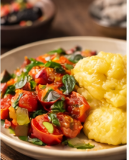
65. Gegrillte Maiskolben mit Butter65. Grillowana kukurydza z masłem
1 TL gehackte Kräuter, z. B. Oregano oder Petersilie1 łyżeczka posiekanych ziół, np. oregano lub pietruszki
Pfefferpieprz
optional: etwas Honigopcjonalnie: odrobina miodu
Zeitplan / TimingCzas / plan
Vorbereitung: 5 Minutenprzygotowanie: 5 min
Grillzeit: 4–6 Minutengrillowanie: 4–6 min
Gesamt: ca. 10 Minutenłącznie: ok. 10 min
TippsWskazówki
Halloumi nicht zu dünn schneiden, sonst wird er trocken.Nie kroić sera zbyt cienko, żeby nie wysechł.
Passt sehr gut zu Salat, gegrilltem Gemüse oder Brot.Świetnie pasuje do sałatek, grillowanych warzyw albo pieczywa.
Am besten direkt nach dem Grillen essen.Najlepiej jeść od razu po zdjęciu z grilla.
ZubereitungPrzygotowanie
Halloumi in dicke Scheiben schneiden.Halloumi pokroić na grubsze plastry.
Olivenöl, Zitronensaft und Kräuter verrühren.Wymieszać oliwę, sok z cytryny i zioła.
Halloumi leicht damit bestreichen.Lekko posmarować serem przygotowaną mieszanką.
Auf den heißen Grill legen und pro Seite 2–3 Minuten grillen, bis schöne Grillstreifen entstehen.Położyć na mocno rozgrzanym grillu i grillować po 2–3 minuty z każdej strony, aż pojawią się wyraźne paski.
Mit etwas Pfeffer und optional ganz wenig Honig servieren.Podawać z pieprzem i opcjonalnie z odrobiną miodu.
BewertungOcena
8,5 / 10 – schnell, unkompliziert und ideal als vegetarische Grilloption.8,5 / 10 – szybka i bardzo wygodna opcja bez mięsa.
67. Würzige Bratwürste vom Grill (klassisch und einfache Variante)67. Pikantne kiełbaski z grilla (wersja klasyczna i prosta wariacja)
optional für die einfache Variante: 2 EL BBQ-Sauceopcjonalnie do prostszej wariacji: 2 łyżki sosu BBQ
optional: 1 kleine Zwiebel in Ringenopcjonalnie: 1 mała cebula pokrojona w krążki
optional: Baguette oder Brötchen zum Servierenopcjonalnie: bagietka albo bułki do podania
Zeitplan / TimingCzas / plan
Vorbereitung: 5 Minutenprzygotowanie: 5 min
Grillzeit: 10–12 Minutengrillowanie: 10–12 min
Gesamt: ca. 15 Minutenłącznie: ok. 15 min
TippsWskazówki
Nicht zu heiß grillen, damit die Würste nicht aufplatzen.Nie grilluj na zbyt mocnym ogniu, żeby kiełbaski nie popękały.
Für eine klassische Runde reicht Senf und Brot völlig aus.W klasycznej wersji wystarczy musztarda i pieczywo.
Die BBQ-Variante ist gut, wenn du etwas mehr Würze möchtest, ohne viel Aufwand.Wariacja z BBQ daje więcej smaku bez dodatkowej pracy.
ZubereitungPrzygotowanie
Bratwürste mit einer Gabel mehrfach leicht einstechen.Kiełbaski delikatnie ponakłuwać widelcem w kilku miejscach.
Für die klassische Variante die Würste nur ganz dünn mit etwas Öl einreiben.W wersji klasycznej tylko lekko posmarować je olejem.
Für die würzige einfache Variante Öl, Paprikapulver und Senf verrühren und die Würste damit bestreichen.Do prostej pikantnej wersji wymieszać olej, paprykę i musztardę, a następnie posmarować kiełbaski.
Bratwürste auf den Grill legen und bei mittlerer Hitze 10–12 Minuten grillen, dabei regelmäßig wenden.Grillować na średnim ogniu 10–12 minut, regularnie obracając.
Wer die BBQ-Variante möchte, streicht in den letzten 2 Minuten etwas BBQ-Sauce darüber.Jeśli robisz wersję BBQ, w ostatnich 2 minutach posmarować kiełbaski sosem BBQ.
Mit Zwiebelringen und Brot servieren.Podawać z cebulą i pieczywem.
BewertungOcena
8 / 10 – einfach, schnell und perfekt für entspanntes Grillen.8 / 10 – proste, szybkie i idealne na luźne spotkanie przy grillu.
68. Gegrilltes Gemüse mit Zucchini, Paprika und Champignons68. Grillowane warzywa z cukinią, papryką i pieczarkami
In einer Grillschale geht nichts durch den Rost verloren.W tacce grillowej nic nie wpadnie przez ruszt.
Passt zu Fleisch, Halloumi oder einfach mit Baguette.Pasuje do mięsa, halloumi albo po prostu do pieczywa.
Reste schmecken kalt auch gut im Salat.Resztki dobrze smakują także na zimno w sałatce.
ZubereitungPrzygotowanie
Zucchini in Scheiben, Paprika in Stücke, Champignons halbiert und Zwiebel in Spalten schneiden.Cukinię pokroić w plastry, paprykę w kawałki, pieczarki na połówki, a cebulę w cząstki.
Olivenöl mit fein gehacktem Knoblauch, Zitronensaft, Kräutern, Salz und Pfeffer verrühren.Wymieszać oliwę z drobno posiekanym czosnkiem, sokiem z cytryny, ziołami, solą i pieprzem.
Gemüse mit der Marinade mischen und 10 Minuten ziehen lassen.Warzywa wymieszać z marynatą i odstawić na 10 minut.
In einer Grillpfanne, Grillschale oder direkt auf dem Rost grillen.Grillować w tacce, na patelni grillowej albo bezpośrednio na ruszcie.
Dabei 8–10 Minuten grillen und mehrmals wenden, bis das Gemüse weich und leicht gebräunt ist.Grillować 8–10 minut, kilka razy obracając, aż warzywa będą miękkie i lekko przypieczone.
Heiß servieren.Podawać na gorąco.
BewertungOcena
8,5 / 10 – bunt, unkompliziert und ein Klassiker vom Sommergrill.8,5 / 10 – kolorowe, proste i bardzo letnie.
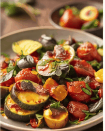
69. Grillkartoffeln in Alufolie mit Rosmarin69. Ziemniaki z grilla w folii z rozmarynem
Vorwiegend festkochende Kartoffeln funktionieren am besten.Najlepiej sprawdzają się ziemniaki typu sałatkowego lub uniwersalne.
Wer mag, gibt am Ende noch etwas Kräuterbutter dazu.Na koniec można dodać trochę masła ziołowego.
Die Päckchen können auch im Ofen vorbereitet und auf dem Grill fertig gegart werden.Paczuszki można wcześniej przygotować w piekarniku i dokończyć na grillu.
ZubereitungPrzygotowanie
Kartoffeln gründlich waschen und je nach Größe halbieren oder ganz lassen.Ziemniaki dokładnie umyć i w zależności od wielkości przekroić na pół albo zostawić w całości.
Mit Olivenöl, Rosmarin, Paprikapulver, Salz und Pfeffer mischen.Wymieszać z oliwą, rozmarynem, papryką, solą i pieprzem.
Kartoffeln in 2–3 Portionen auf Alufolie verteilen und zu festen Päckchen verschließen.Rozłożyć ziemniaki na 2–3 kawałkach folii i szczelnie zamknąć w paczuszki.
Die Päckchen auf den Grill legen und 25–35 Minuten grillen.Położyć paczuszki na grillu i grillować 25–35 minut.
Zwischendurch einmal wenden.W połowie czasu raz obrócić.
Vorsichtig öffnen und direkt servieren.Ostrożnie otworzyć i od razu podawać.
BewertungOcena
8,5 / 10 – einfache Grillbeilage, die immer passt.8,5 / 10 – prosty dodatek z grilla, który zawsze się sprawdza.
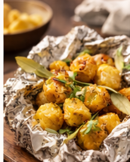
70. Gegrilltes Baguette oder Ciabatta mit Knoblauchöl70. Grillowana bagietka lub ciabatta z oliwą czosnkową
1 Baguette oder 1 Ciabatta1 bagietka albo 1 ciabatta
3 EL Olivenöl3 łyżki oliwy z oliwek
1 Knoblauchzehe1 ząbek czosnku
1 TL gehackte Petersilie oder Kräuter1 łyżeczka posiekanej pietruszki lub ziół
1 Prise Salz1 szczypta soli
Zeitplan / TimingCzas / plan
Vorbereitung: 5 Minutenprzygotowanie: 5 min
Grillzeit: 3–4 Minutengrillowanie: 3–4 min
Gesamt: ca. 10 Minutenłącznie: ok. 10 min
TippsWskazówki
Nicht zu lange grillen, sonst wird das Brot hart.Nie grillować zbyt długo, aby pieczywo nie stwardniało.
Passt zu Fleisch, Gemüse, Salaten oder einfach als Starter.Pasuje do mięsa, warzyw, sałatek albo jako przystawka.
Auch mit etwas geriebenem Parmesan sehr lecker.Smaczne również z odrobiną tartego parmezanu.
ZubereitungPrzygotowanie
Baguette oder Ciabatta in Scheiben schneiden.Bagietkę albo ciabattę pokroić na kromki.
Knoblauch fein reiben oder pressen und mit Olivenöl, Kräutern und Salz verrühren.Czosnek drobno zetrzeć albo przecisnąć i wymieszać z oliwą, ziołami oraz solą.
Brotscheiben damit bestreichen.Posmarować pieczywo przygotowaną mieszanką.
Auf dem Grill von beiden Seiten 1–2 Minuten rösten, bis sie leicht knusprig sind.Grillować po 1–2 minuty z każdej strony, aż lekko się zarumieni i będzie chrupiące.
Warm servieren.Podawać na ciepło.
BewertungOcena
8 / 10 – einfach, schnell und immer ein guter Begleiter.8 / 10 – proste, szybkie i zawsze się przydaje przy grillu.
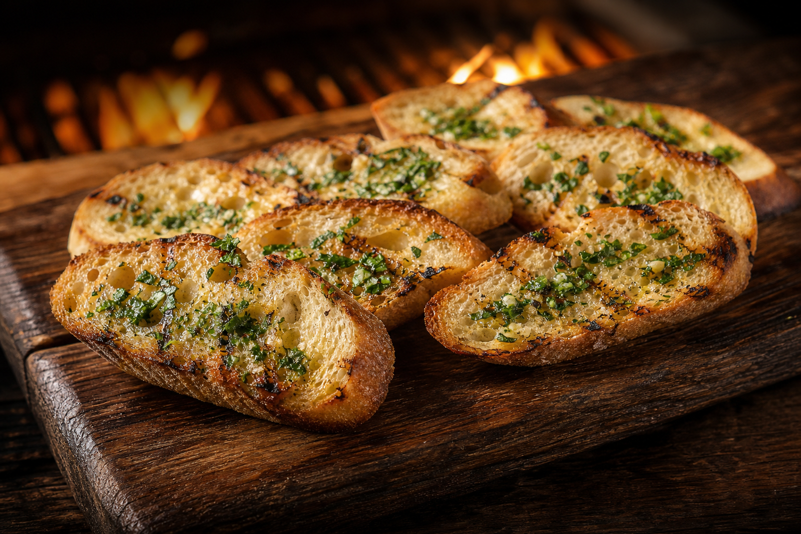
71. Gegrillte Früchte mit Ananas oder Pfirsich71. Grillowane owoce z ananasem lub brzoskwinią
1/2 frische Ananas oder 4 Pfirsiche1/2 świeżego ananasa albo 4 brzoskwinie
1 EL brauner Zucker1 łyżka brązowego cukru
1 EL Butter oder 1 EL Öl1 łyżka masła albo 1 łyżka oleju
1 TL Zitronensaft1 łyżeczka soku z cytryny
optional: 1 Kugel Vanilleeis oder Joghurt zum Servierenopcjonalnie: 1 gałka lodów waniliowych albo jogurt do podania
Zeitplan / TimingCzas / plan
Vorbereitung: 10 Minutenprzygotowanie: 10 min
Grillzeit: 5–6 Minutengrillowanie: 5–6 min
Gesamt: ca. 15 Minutenłącznie: ok. 15 min
TippsWskazówki
Pfirsiche eher bei mittlerer Hitze grillen, damit sie nicht zerfallen.Brzoskwinie grillować raczej na średnim ogniu, żeby się nie rozpadły.
Mit etwas Zimt wird es noch sommerlicher.Odrobina cynamonu daje jeszcze bardziej letni smak.
Auch als leichter Nachtisch nach dem Grillen sehr gut.To bardzo dobry lekki deser po grillowaniu.
ZubereitungPrzygotowanie
Ananas in Scheiben oder Stücke schneiden, Pfirsiche halbieren und entsteinen.Ananasa pokroić w plastry lub kawałki, brzoskwinie przekroić na pół i usunąć pestki.
Butter schmelzen und mit braunem Zucker sowie Zitronensaft verrühren.Masło roztopić i wymieszać z brązowym cukrem oraz sokiem z cytryny.
Früchte leicht damit bestreichen.Lekko posmarować owoce przygotowaną mieszanką.
Auf dem Grill pro Seite 2–3 Minuten grillen, bis leichte Röstspuren entstehen.Grillować po 2–3 minuty z każdej strony, aż pojawią się lekkie ślady przypieczenia.
Warm servieren, nach Wunsch mit Vanilleeis oder Joghurt.Podawać na ciepło, opcjonalnie z lodami waniliowymi albo jogurtem.
BewertungOcena
8,5 / 10 – einfacher Sommernachtisch mit wenig Aufwand.8,5 / 10 – prosty letni deser bez dużego wysiłku.
200 ml Orangenlimonade oder Fanta200 ml oranżady pomarańczowej albo Fanta
1 Orange1 pomarańcza
1 Zitrone1 cytryna
1 Apfel1 jabłko
2 EL Zucker2 łyżki cukru
100 ml Orangensaft100 ml soku pomarańczowego
Eiswürfelkostki lodu
Zeitplan / TimingCzas / plan
Vorbereitung: 10 Minutenprzygotowanie: 10 min
Ziehzeit / Kühlen: 30 Minutenchłodzenie: 30 min
Gesamt: ca. 40 Minutenłącznie: ok. 40 min
TippsWskazówki
Nicht zu süß machen, sonst wirkt die Sangria schnell schwer.Nie przesadzaj z cukrem, żeby sangria nie była zbyt ciężka.
Für Gäste am besten schon 1–2 Stunden vorher vorbereiten.Na spotkanie ze znajomymi najlepiej przygotować ją 1–2 godziny wcześniej.
Sehr gut mit viel Eis servieren.Najlepiej smakuje mocno schłodzona z dużą ilością lodu.
ZubereitungPrzygotowanie
Orange, Zitrone und Apfel in Scheiben oder Würfel schneiden.Pomarańczę, cytrynę i jabłko pokroić w plasterki albo kostkę.
Obst mit Zucker und Orangensaft in eine Karaffe geben und 10 Minuten ziehen lassen.Włożyć owoce do dzbanka, dodać cukier i sok pomarańczowy, a następnie odstawić na 10 minut.
Rotwein und Orangenlimonade zugießen.Wlać czerwone wino i oranżadę pomarańczową.
Gut umrühren und mindestens 30 Minuten kalt stellen.Dokładnie wymieszać i schłodzić przez co najmniej 30 minut.
Mit Eiswürfeln servieren.Podawać z kostkami lodu.
BewertungOcena
8,5 / 10 – fruchtig, unkompliziert und perfekt für Sommerabende.8,5 / 10 – owocowa, prosta i idealna na ciepłe wieczory.
30 ml Mineralwasser oder Soda30 ml wody gazowanej albo sody
1 Orangenscheibe1 plaster pomarańczy
Zeitplan / TimingCzas / plan
Vorbereitung: 2 Minutenprzygotowanie: 2 min
Gesamt: ca. 2 Minutenłącznie: ok. 2 min
TippsWskazówki
Reihenfolge einhalten, dann bleibt der Drink frischer und schäumt schöner.Warto zachować kolejność składników, wtedy drink jest świeższy i ładniej się pieni.
Für mehrere Gäste das Mischungsverhältnis einfach hochrechnen.Dla większej liczby gości wystarczy proporcjonalnie zwiększyć ilości.
Gut gekühlte Zutaten verwenden.Najlepiej używać dobrze schłodzonych składników.
ZubereitungPrzygotowanie
Ein großes Weinglas mit Eis füllen.Duży kieliszek do wina napełnić lodem.
Prosecco eingießen.Wlać prosecco.
Aperol zugeben.Dodać Aperol.
Mit Mineralwasser oder Soda auffüllen.Dopełnić wodą gazowaną albo sodą.
Kurz umrühren und mit einer Orangenscheibe servieren.Krótko zamieszać i podać z plasterkiem pomarańczy.
BewertungOcena
8,5 / 10 – schnell gemacht und ein echter Sommerklassiker.8,5 / 10 – szybki i bardzo letni klasyk.
Tonic langsam eingießen, damit die Kohlensäure erhalten bleibt.Tonik wlewaj powoli, aby nie stracić bąbelków.
Mit Gurke schmeckt er frischer, mit Rosmarin etwas herber, mit Orange fruchtiger.Z ogórkiem drink jest świeższy, z rozmarynem bardziej ziołowy, a z pomarańczą bardziej owocowy.
Immer gut gekühltes Tonic verwenden.Najlepiej używać dobrze schłodzonego toniku.
ZubereitungPrzygotowanie
Ein großes Glas mit Eiswürfeln füllen.Dużą szklankę napełnić lodem.
Gin eingießen.Wlać gin.
Tonic Water langsam darübergeben.Powoli dolać tonik.
Kurz umrühren.Krótko zamieszać.
Mit Zitrone oder Limette garnieren.Udekorować cytryną albo limonką.
Für Variationen zusätzlich Gurke, Rosmarin oder Orange ins Glas geben.W wersjach dodatkowo dodać ogórek, rozmaryn albo pomarańczę.
BewertungOcena
8,5 / 10 – einfach, wandelbar und perfekt für Gäste.8,5 / 10 – prosty, elastyczny i bardzo dobry dla gości.
InhaltsverzeichnisSpis treści
Das Verzeichnis ist scrollbar. Noch schneller geht es über die Kategorien links.Spis treści można przewijać. Jeszcze szybciej znajdziesz przepisy przez kategorie po lewej.